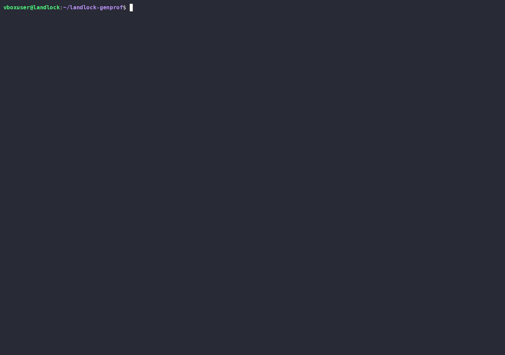

Home
Kubernetes security profile generator
Observe the pod.
Draw the tightest boundary that fits.
Landlock, seccomp, NetworkPolicy, and Linux capabilities policies are normally guessed by hand, before anyone has watched the app run. landlock-genprof watches first — a training run, then a profile sized to exactly what it saw.
Status: the observe → synthesize → review → approve → apply pipeline is built, with approval bound to the exact reviewed candidate, tagged v0.2.0. Behavioral enforcement has been demonstrated for NetworkPolicy on Cilium only — PodLock/Landlock and SPO seccomp enforcement have not. Progress is the canonical record of what's demonstrated, capability by capability.
Observe, review, approve, apply
the governed loopFour commands, in this order, every time. Approval is not optional and it is not a formality: apply-proposal is bound to the exact candidate digest you approved, and refuses to apply anything else.
Watch it run
Trains on the target pod for a set duration, capturing filesystem, network, syscall, and capability activity via eBPF.
kubectl landlock-genprof trace \
--pod nginx-demo -n default \
--binary /usr/sbin/nginx \
--duration 60sSee what it saw
Prints what was observed, what's confident vs. not, which artifacts are ready — and the candidate digest identifying this exact candidate.
kubectl landlock-genprof review \
nginx-demoAuthorize that exact candidate
Approval binds to the digest review printed, not to the proposal's name — so a later run that changes the candidate does not inherit it.
kubectl landlock-genprof approve \
nginx-demo \
--expected-digest sha256:<from-review>Apply only what was approved
Re-reads the proposal and re-checks the digest before applying anything; a missing, stale, or changed binding fails closed. The confirmation prompt is an extra operator safeguard on top, not the authority gate.
kubectl landlock-genprof \
apply-proposal nginx-demoSee it run
real recording, not stagedCaptured against a live cluster — trace with real traffic, the generated profile, the review summary, the raw SecurityProfileProposal object, and apply-proposal --restart. Recorded before the digest-bound approve step became part of the loop, so step 03 above is not in this recording. Click it for the interactive version.

One training run, four domains
what gets generatedEvery rule carries a confidence level — high, medium, or low — so review has something concrete to look at, not a wall of unlabeled YAML.
Landlock policy
→ PodLock LandlockProfile seen on every runEgress rights
→ Kubernetes NetworkPolicy seen on every runSeccomp profile
→ security-profiles-operator CR needs --historyLinux capabilities
→ securityContext fragment review before prodWhere to start
pick oneSet up a test environment
A disposable kind cluster, from nothing — one script.
docs/test-environment → Already have oneInstall
Get the CLI, apply the RBAC/CRDs, against a cluster you already run.
INSTALL → ReferenceUsage & CLI reference
Every flag, one section each — plus a generated page per command.
docs/usage → Under the hoodArchitecture
Components and interactions, at a glance — deep dives nested underneath.
docs/architecture →Complementary, not competing
positioninglandlock-genprof doesn't enforce anything itself — it feeds three existing, independent enforcement mechanisms, one per domain, in the format each already expects. None of them are installed by this project, and generating an artifact is not the same as enforcing it: each card below says how far v0.2.0 actually goes. What each mechanism needs: enforcement prerequisites. Full positioning against PodLock/SPO/static compliance scanners: product definition. (Using SPO as an upstream evidence source, rather than only as a downstream backend, is future work — not part of v0.2.0.)
PodLock
Kubewarden ecosystem — enforces at container startup generated · approval-bound · API applied kernel enforcement not demonstrated in v0.2.0security-profiles-operator
materializes the profile onto every node generated · API plumbing tested seccomp enforcement not demonstrated in v0.2.0Your CNI
any implementation of NetworkPolicy generated · approval-bound · API applied enforcement demonstrated on Cilium that result is Cilium-specific — not all CNIsSetting up a test environment
This is for trying the tool — spinning up a disposable kind
cluster to run landlock-genprof against, from nothing. If you already
have a Kubernetes cluster you want to install against instead, skip
straight to INSTALL.md.
Working on the codebase itself (not just trying it)? See
HOW_TO_START.md /
COMMENT_COMMENCER.md instead — same
cluster setup, plus git workflow, code walkthrough, and first tasks per
role. This page is the lean version: cluster up, nothing else.
1. A Linux environment
Landlock and eBPF are Linux kernel features (trace doesn’t work
on macOS/Windows directly). Kernel requirements: Landlock FS ≥ 5.13,
Landlock network ≥ 6.4, eBPF ≥ 5.8 recommended — see
README.md §6 for the exact table. Ubuntu 24.04
(kernel 6.8) covers all of it.
- Already on native Ubuntu 24.04/26.04? Skip to step 2.
- On macOS or Windows? You need a VM — see
HOW_TO_START.md§0 for click-by-click VirtualBox/Hyper-V steps. Come back here once the VM is up anduname -rshows a 6.8.x/7.0.x kernel.
2. Clone and install Go
git clone https://github.com/idriss-eliguene/landlock-genprof.git
cd landlock-genprof
go version # should show go1.26 or later
If Go is missing, see
HOW_TO_START.md — Step 3
for the install command (with amd64/arm64 auto-detection).
3. Check the kernel, then create the cluster
./hack/check-kernel.sh
./hack/init-vm.sh
init-vm.sh does everything from here: kind cluster (Cilium as CNI,
not kindnet — kindnet doesn’t enforce NetworkPolicy), Inspektor
Gadget, a test pod (nginx-demo), and the landlock-genprof CLI itself
built and installed as a kubectl plugin. It’s idempotent — safe to
re-run if a step fails partway (network hiccup, slow first image pull).
See HOW_TO_START.md’s step table
for exactly what each of its 8 steps does and why, or just read the
script directly — it’s short and heavily commented.
kubectl plugin list | grep landlock-genprof # sanity check
kubectl get pod nginx-demo
Done — cluster and CLI are ready
Continue to INSTALL.md §3 (“Install the RBAC and
CRDs”) — steps 1-2 there (getting the CLI) are already done by
init-vm.sh. From there, docs/usage.md assumes exactly
this state: a cluster up, kubectl landlock-genprof on your PATH.
Installing landlock-genprof
This is for installing landlock-genprof against a Kubernetes cluster
you already have. Don’t have one yet? See
docs/test-environment.md — spins up a
disposable kind cluster and installs the CLI, in which case skip
straight to §3 below (steps 1-2 here are already done for you).
None of this requires cloning the repo. Every method below — getting the CLI, installing the RBAC/CRDs — works from a released version number alone.
Fastest path, if you’re not sure which option to pick:
Assumes Inspektor Gadget is already deployed on the cluster (
kubectl gadget deploy) andkubectlis pointed at it — see §1 — Prerequisites below if you haven’t done that yet.
go install github.com/idriss-eliguene/landlock-genprof/cmd/landlock-genprof@v0.2.0
kubectl apply -f https://raw.githubusercontent.com/idriss-eliguene/landlock-genprof/v0.2.0/deploy/rbac.yaml
kubectl apply -f https://raw.githubusercontent.com/idriss-eliguene/landlock-genprof/v0.2.0/deploy/crd-securityprofileproposal.yaml
kubectl apply -f https://raw.githubusercontent.com/idriss-eliguene/landlock-genprof/v0.2.0/deploy/rbac-proposal.yaml
kubectl apply -f https://raw.githubusercontent.com/idriss-eliguene/landlock-genprof/v0.2.0/deploy/rbac-patched-manifest.yaml
That’s option A in both §2 and §3 below — no clone, no Helm, works today. The rest of this page exists for the cases that need something different: a pre-built binary with no Go toolchain (§2 option B), Helm instead of raw manifests (§3 option B), or building from a local clone (§2/§3 option C). Skip straight to §4 — First run once either path above is done.
1. Prerequisites
- Kernel version on every node — see
README.md§6 for the exact table (Landlock FS ≥ 5.13, Landlock network ≥ 6.4, eBPF ≥ 5.8 recommended). Check with./hack/check-kernel.shif you have shell access to a node (needs a clone; or just read the version table). - Inspektor Gadget already
deployed on the cluster (
kubectl gadget deploy) —tracedoesn’t work without it. This is the one hard requirement; everything else below is about getting the CLI itself in place. kubectl, pointed at your cluster.go 1.26+— only for thego installmethod (step 2, option A). Not needed for a downloaded binary (option B) or the Helm chart (step 3, option A/B).helm— only for the Helm chart (step 3, option A/B).
Enforcement is separate from all of this. Getting landlock-genprof
installed and running gets you profile generation — actually enforcing
what it generates (PodLock, a NetworkPolicy-capable CNI, SPO) is a
different set of prerequisites entirely, not all of which this project
can set up for you. See
docs/enforcement-prerequisites.md
before assuming the tool “isn’t working” if a generated profile doesn’t
seem to do anything once applied.
2. Get the CLI
Option A — go install (recommended, no clone)
go install github.com/idriss-eliguene/landlock-genprof/cmd/landlock-genprof@v0.2.0
Puts landlock-genprof in $(go env GOPATH)/bin — confirmed working
end to end (fetched straight from the module proxy, no local checkout
of any kind). Swap @v0.2.0 for @latest to track the newest tag
instead of pinning, or a commit hash for something unreleased.
Want it as a kubectl plugin instead of standalone? Same command, then
rename:
mv "$(go env GOPATH)/bin/landlock-genprof" "$(go env GOPATH)/bin/kubectl-landlock_genprof"
kubectl plugin list # confirms kubectl sees it
Underscore, not dash: kubectl reads a literal - in a plugin’s filename
as a separator between two subcommands (kubectl-foo-bar → kubectl foo bar), not as a dash inside one word. _ in the filename becomes - in
the invoked command, which is what gets you kubectl landlock-genprof
as a single subcommand.
go install doesn’t inject build metadata by default, so landlock-genprof version
prints generic dev info even though this is a real tagged release —
cosmetic only, doesn’t affect behavior. Pass -ldflags yourself for a
version string that matches the tag:
go install -ldflags "-X main.version=v0.2.0" github.com/idriss-eliguene/landlock-genprof/cmd/landlock-genprof@v0.1.1
Option B — download a pre-built binary
GitHub Releases, cross-compiled for linux/darwin/windows ×
amd64/arm64 (.goreleaser.yaml, .github/workflows/release.yml) — no
Go toolchain needed at all:
# Pick your OS/arch from the release page:
# https://github.com/idriss-eliguene/landlock-genprof/releases
curl -LO https://github.com/idriss-eliguene/landlock-genprof/releases/download/<tag>/landlock-genprof_linux_amd64.tar.gz
tar -xzf landlock-genprof_linux_amd64.tar.gz
sudo install -o root -g root -m 0755 landlock-genprof /usr/local/bin/landlock-genprof
Confirmed working as of v0.2.0 — six real assets on the
releases page
(v0.1.3 itself predates this pipeline being wired up; if you’re
pinning to that specific tag for some reason, use option A instead).
Same rename trick as option A above for the kubectl-plugin form.
Option C — build from source (clone required)
Only worth it if you’re modifying the code, want the kubectl-plugin
make target, or need a build off an unreleased commit:
git clone git@github.com:idriss-eliguene/landlock-genprof.git
cd landlock-genprof
make install-plugin # kubectl-landlock_genprof, into $(go env GOPATH)/bin, real version via -ldflags
# or, standalone:
go build -o landlock-genprof ./cmd/landlock-genprof
One kubectl-plugin quirk worth knowing regardless of how you installed
it: global kubectl flags placed before the plugin name (kubectl -n foo landlock-genprof ...) are not forwarded to the plugin — kubectl
only passes through arguments that come after the plugin name. Use
landlock-genprof’s own -n/--namespace instead.
3. Install the RBAC and CRDs
The tracer needs its own ServiceAccount/RBAC, and every run publishes
a SecurityProfileProposal object, so its CRD (plus more RBAC) is
mandatory too.
Option A — raw manifests, no clone (kubectl apply -f <url>)
kubectl apply -f https://raw.githubusercontent.com/idriss-eliguene/landlock-genprof/v0.2.0/deploy/rbac.yaml
kubectl apply -f https://raw.githubusercontent.com/idriss-eliguene/landlock-genprof/v0.2.0/deploy/crd-securityprofileproposal.yaml
kubectl apply -f https://raw.githubusercontent.com/idriss-eliguene/landlock-genprof/v0.2.0/deploy/rbac-proposal.yaml
# Required whenever a run composes securityContext data (commonly true
# in practice when syscalls are observed)
kubectl apply -f https://raw.githubusercontent.com/idriss-eliguene/landlock-genprof/v0.2.0/deploy/rbac-patched-manifest.yaml
# Only if you plan to use the matching flag:
kubectl apply -f https://raw.githubusercontent.com/idriss-eliguene/landlock-genprof/v0.2.0/deploy/crd-traininghistory.yaml # --history
kubectl apply -f https://raw.githubusercontent.com/idriss-eliguene/landlock-genprof/v0.2.0/deploy/rbac-history.yaml # --history
kubectl apply -f https://raw.githubusercontent.com/idriss-eliguene/landlock-genprof/v0.2.0/deploy/rbac-restart.yaml # --restart
Pinned to the v0.2.0 tag rather than master on purpose — reproducible,
and immune to whatever’s mid-change on the default branch. Swap the tag
for a newer one as releases come out.
Option B — Helm chart from GHCR (OCI), no clone
helm install landlock-genprof oci://ghcr.io/idriss-eliguene/charts/landlock-genprof --version 0.2.0
Confirmed published as of v0.2.0 — check
github.com/idriss-eliguene?tab=packages
if a later tag has come out since and you want that version instead
(v0.1.3 itself predates this pipeline being wired up).
Option C — raw manifests from a local clone
kubectl apply -f deploy/rbac.yaml
kubectl apply -f deploy/crd-securityprofileproposal.yaml
kubectl apply -f deploy/rbac-proposal.yaml
kubectl apply -f deploy/rbac-patched-manifest.yaml
kubectl apply -f deploy/crd-traininghistory.yaml # --history
kubectl apply -f deploy/rbac-history.yaml # --history
kubectl apply -f deploy/rbac-restart.yaml # --restart
Option D — Helm chart from a local clone
helm install landlock-genprof deploy/helm/landlock-genprof
Options C/D install exactly the same things as A/B — only difference is
not needing network access to GitHub/GHCR at apply time, at the cost of
needing a clone. See
deploy/helm/landlock-genprof/README.md
for the full restart.enabled/history.enabled toggle list and a
CRD-upgrade caveat worth knowing before your first helm upgrade.
4. First run
kubectl landlock-genprof trace \
--pod <your-pod> -n <ns> --binary /path/to/main/binary \
--duration 60s --out profile.yaml
Installed standalone instead of as a kubectl plugin? Drop the kubectl
prefix: landlock-genprof trace .... Running from a source clone
without installing anywhere? go run ./cmd/landlock-genprof trace ...
works the same way.
--pod and --binary are the only required flags. See
docs/usage.md for what each --*-out flag adds.
5. Next steps
docs/enforcement-prerequisites.md— what’s needed to actually enforce a generated profile, and PodLock’s own real limitation onkind-based clusters specifically.docs/architecture.md— how the pieces fit together.docs/roadmap.md— what’s built, what isn’t yet.
Usage — the full training-run workflow
Split out of README.md, which now keeps only a short summary and links
here — this is the complete step-by-step reference for every trace
flag, moved out for the same reason sequence-diagram.md/packages.md
were: a “what is this and why would I use it” README shouldn’t also be
the full flag reference.
Assumes: a Kubernetes cluster already up, landlock-genprof
installed (as kubectl landlock-genprof or standalone), and the
RBAC/CRDs applied — see ../INSTALL.md (or
test-environment.md if you don’t have a
cluster yet) if any of that isn’t true yet.
TL;DR
# Observe: trains on the target pod, publishes a reviewable proposal
kubectl landlock-genprof trace --pod nginx-demo --namespace default \
--binary /usr/sbin/nginx --duration 60s
# Review: prints the Candidate digest and proposal contents
kubectl landlock-genprof review nginx-demo
# Approve: use the exact Candidate digest printed by review
kubectl landlock-genprof approve nginx-demo \
--expected-digest sha256:<candidate-digest-from-review>
# Apply: requires valid digest-bound Approved state, then prompts
kubectl landlock-genprof apply-proposal nginx-demo
That’s the whole governed loop — observe, review, approve the reviewed
digest, then apply. Everything else on this
page is reference material for it: every optional artifact trace can
also generate (Steps 5-14, see the table below), and the full 15-step
breakdown of what each command above actually does under the hood.
The full workflow runs in 15 steps: four mandatory (Steps 1-4), several
optional ones after that (one per --*-out flag, see the table below),
Step 12 (proposal publishing) mandatory again, and Step 15 (mandatory
human review) closing it out:
Step 1 — Training run
The target pod runs normally for a defined duration (e.g. 60 s or longer, depending on application complexity). The goal is to cover the most frequent code paths.
kubectl landlock-genprof trace \
--pod nginx-demo \
--namespace default \
--binary /usr/sbin/nginx \
--duration 60s \
--out profile.yaml
Why --binary is required, not auto-detected: it’s not just a label
on the output — the tracer uses it to filter observed events down to
that specific process’s own comm
(internal/tracer/trace_linux.go’s commFromBinaryPath), so a
kubectl exec/sidecar/debug session sharing the pod’s namespaces
doesn’t contaminate the profile (see e2e-demo.md Finding 1, the real
bug this filter was added for). Auto-detecting it (e.g. via
/proc/<pid>/exe) was considered and set aside: it would need either a
new pods/exec RBAC grant (nothing in this project needs cluster
exec access today) or assuming PID 1 is the right process, which
breaks for the common case of an entrypoint script or tini/dumb-init
wrapper that then execs the real binary.
Step 2 — Syscall capture (Tracer)
During the training run, landlock-genprof captures the pod’s system calls via
Inspektor Gadget gadgets:
| Gadget | Observed syscall | Output |
|---|---|---|
trace_open | openat, open | LANDLOCK_ACCESS_FS_READ_FILE, WRITE_FILE, EXECUTE |
trace_tcp (connect-only mode) | connect | LANDLOCK_ACCESS_NET_CONNECT_TCP (kernel ≥ 6.4) |
trace_bind | bind | LANDLOCK_ACCESS_NET_BIND_TCP (kernel ≥ 6.4) |
trace_exec | execve, execveat | LANDLOCK_ACCESS_FS_EXECUTE |
advise_seccomp | every syscall issued by the container | seccomp profile (--seccomp-out, see step 8) |
trace_capabilities | cap_capable() checks | Linux capabilities fragment (--capabilities-out, see step 9) |
advise_seccomp is Inspektor Gadget’s own seccomp-profile advisor, reused
as-is rather than reimplemented — it already records a container’s
syscalls and formats them into the target seccomp JSON shape. One
difference from the other four: it observes every process on the node
during the run, not just the target container (its own probe can’t
filter earlier without losing the target’s own startup syscalls) —
filtering to the target container happens at its own output stage.
trace_capabilities doesn’t share this quirk: it filters in-kernel by
container the normal way, just like trace_open/etc.
Each captured event produces an Event object:
type Event struct {
Timestamp time.Time
Syscall string // "openat", "connect", "bind", "execve", or a bare syscall/capability name
Path string // file path, if applicable
Port int // network port, if applicable
Mode string // "read", "write", "read_write", "exec", "egress", "ingress", "syscall", "capability"
}
Step 3 — Policy synthesis
Events are aggregated by directory (to avoid per-file overfitting) and a confidence level is calculated for each rule based on how consistently it was observed across multiple runs:
| Level | Meaning |
|---|---|
high | Observed consistently on every run — reliable rule |
medium | Observed on multiple runs, but with inconsistencies |
low | Observed only once — must be reviewed before deployment |
Step 4 — YAML generation
The profile is exported in PodLock’s LandlockProfile CRD format:
apiVersion: podlock.kubewarden.io/v1alpha1
kind: LandlockProfile
metadata:
name: nginx-demo
namespace: default
spec:
profilesByContainer:
nginx:
"/usr/sbin/nginx":
readExec:
- /lib
- /lib64
readOnly:
- /usr/share/nginx # confidence: high
readWrite:
- /tmp # confidence: high
- /var/cache/nginx/proxy # confidence: low — review before prod
Optional steps
The core workflow above (Steps 1–4) is enough to get a usable profile. Each row below adds one more artifact from the same training run — pick only what you need.
| Flag | What it adds | Details |
|---|---|---|
--network-out | Kubernetes NetworkPolicy from observed connections | Network policy generation |
--restart | Restarts target to capture startup-only activity | Target restart |
--history | Cross-run confidence via persisted training history | Multi-run history |
--seccomp-out | Plain seccomp JSON profile | Seccomp profile |
--capabilities-out | Linux capabilities fragment | Capabilities fragment |
--security-context-out | Composed securityContext (capabilities + seccomp ref) | Composed securityContext |
--report-out | Single Markdown review report, all domains combined | Unified report |
| (always on) | Publishes SecurityProfileProposal to the cluster | Proposal publishing |
--patched-manifest-out | Ready-to-apply manifest with securityContext merged | Patched manifest |
--seccomp-profile-out | SeccompProfile CR for security-profiles-operator | SeccompProfile resource |
Step 15 — Mandatory human review
landlock-genprof never deploys a profile automatically.
The generated YAML is a starting point for human review, not a final result.
The Confidence field per rule makes explicit what is reliable and what requires
attention. See threat-model.md for the recommended
validation methodology.
Applying a LandlockProfile alone has no effect. For a
SecurityProfileProposal, use the approval-bound apply-proposal workflow;
the standalone artifact instructions below are not a substitute for that
workflow. PodLock’s admission
webhook matches a running pod to a LandlockProfile object via a label
on the pod — podlock.kubewarden.io/profile: <profile-name> — not by
anything embedded in the CRD itself. landlock-genprof trace prints the
exact kubectl label command to run after kubectl apply-ing the
generated profile.
Reviewing and applying, with a confirmation step
kubectl landlock-genprof apply-proposal nginx-demo -n default
Fetches the SecurityProfileProposal and prints the same full
WORKLOAD SECURITY REVIEW block the standalone review command shows
(container, binary, generated-at, history-used, per-artifact
availability, PodLock label status) — not just an artifact name list —
then lists exactly which artifacts it’s about to apply and asks
Apply these to the cluster? [y/N] before touching anything. The
CLI-native form of the “mandatory human review” above: a decision made
with the same context a standalone review would give, after the
digest-bound approval required by the governed workflow. --yes/-y skips
the prompt for CI/scripted use (still prints the summary and what it
applied). internal/k8s.Apply creates-or-updates each artifact directly
via the Kubernetes API (not a kubectl apply -f subprocess) — same
create-then-fallback-to-update logic as SecurityProfileProposal
publishing itself (Step 12 above).
One artifact failing doesn’t stop the others. PodLock is first in
apply order, so on a cluster that only has some of PodLock/CNI/SPO
installed — this project’s own kind reference environment has none of
them — stopping at the first failure would mean artifacts that would
succeed (e.g. a plain builtin NetworkPolicy) never even get attempted.
Each artifact is applied independently; failures are printed per artifact
as they happen, and the command exits non-zero if any failed, but only
after trying every one.
Patched Manifest is opt-in — --restart. Applying it recreates the
target pod (a bare pod’s securityContext is immutable in place, see
below) referencing whatever the enforcement side is supposed to provide
— a localhostProfile path only SPO ever writes, a
podlock.kubewarden.io/profile label only PodLock’s admission webhook
ever acts on. If that operator isn’t actually ready yet, applying the
patched manifest breaks the pod outright (cannot load seccomp profile ...: no such file or directory), confirmed live — and unlike the other
three artifacts (inert until their own operator reconciles them, or a
live-updatable resource), this is the one that force-restarts a
possibly-still-working pod. So it’s the only artifact left out of an
apply by default; pass --restart to include it if it’s available:
kubectl landlock-genprof apply-proposal nginx-demo -n default --restart
Without --restart, a proposal with a Patched Manifest available prints
Leaving out 1 artifact(s) that would restart the target pod — pass --restart to include: and applies everything else. Confirmed live: the
version of this where restarting was the default and skipping it opt-out
(--skip=patched-manifest) let repeated apply-proposal runs
force-restart a pod whose enforcement side wasn’t ready yet, with no
single moment where restarting it was an actual decision — a 73-minute,
15-restart CrashLoopBackOff.
Leaving other artifacts out — --skip. For the three artifacts that
don’t restart anything, --skip leaves specific ones out of a given
apply instead:
kubectl landlock-genprof apply-proposal nginx-demo -n default --skip=podlock
# or several, comma-separated or repeated:
kubectl landlock-genprof apply-proposal nginx-demo -n default --skip=podlock,networkpolicy
Valid values: podlock, networkpolicy, patched-manifest,
spo-seccompprofile — patched-manifest is accepted for
completeness/explicitness but redundant, since it’s already left out
unless --restart is passed. An unrecognized value is rejected before
the command ever connects to the cluster, rather than silently applying
everything.
Prerequisites — different from everything else in this file. Every
other command on this page runs under whatever RBAC deploy/rbac*.yaml
grants the tracer’s ServiceAccount, deliberately read-only/generation-only
(see docs/threat-model.md). apply-proposal is the one exception: it
runs under your own kubectl identity (internal/k8s.RestConfig()
falls back to your local kubeconfig whenever it isn’t running in-cluster,
which is the normal case for a human running this from their terminal),
and needs whatever create/update permissions you already have for the
resource kinds a given proposal actually contains:
NetworkPolicy(networking.k8s.io) — builtin, no extra operator needed.LandlockProfile(podlock.kubewarden.io) — needs PodLock installed in the cluster; applying fails with a clear “could not find the requested resource” error otherwise. Not installed byhack/init-vm.sh— and PodLock’s own docs advise against this project’skind-based reference cluster entirely, seeenforcement-prerequisites.md.SeccompProfile(security-profiles-operator.x-k8s.io) — needs security-profiles-operator installed, same failure mode if it isn’t. Not installed byhack/init-vm.sheither — opt-in on purpose (seeenforcement-prerequisites.mdfor the concrete Helm install commands actually tested against this project’s reference cluster, not just a link to SPO’s own upstream docs).- The patched manifest —
Pod/Deployment/StatefulSet/DaemonSet, builtin, whichever the target actually is. A barePod(no owner) is deleted and recreated, not patched in place — confirmed live:kubectl apply/a genericUpdateboth hitForbidden: pod updates may not change fields other than ...on most Pod fields, includingsecurityContext. Deployment/StatefulSet/DaemonSet don’t have this restriction — those update in place and roll out normally.
This project deliberately doesn’t grant the tracer’s ServiceAccount write
access to any of these — doing so would meaningfully widen its blast
radius for a capability only a human approving changes needs, not the
tracer itself. See ../deploy/rbac.yaml and
siblings for the RBAC this project does provision, and why each grant
stops where it does.
From a local clone, make export-proposal PROPOSAL=<name> is inspection
only and non-authoritative. It exports a mutable snapshot of proposal
fields and must not be used as a substitute for approval or
apply-proposal. Use make apply-proposal PROPOSAL=<name> only after
the explicit digest-bound approval; it delegates to the same authoritative
CLI path.
Step 5 — Optional NetworkPolicy generation
PodLock’s own CRD has no field for network rights, so connect/bind
observations get their own output format instead: pass --network-out to
also generate a Kubernetes NetworkPolicy from the same training run
(skipped if no network activity was observed). --out/--network-out
both default to a filename derived from the traced pod
(<pod>-profile.yaml, <pod>-networkpolicy.yaml) when passed with no
value — pass an explicit filename (--network-out my-policy.yaml) to
override:
apiVersion: networking.k8s.io/v1
kind: NetworkPolicy
metadata:
name: nginx-demo
namespace: default
spec:
podSelector:
matchLabels:
app: nginx # copied from the traced pod's own labels
policyTypes:
- Egress
egress:
- ports:
- protocol: TCP
port: 443 # confidence: high
Only the observed port is encoded — no from/to peer restriction, since
the tracer knows a port was contacted, not a peer pod/service identity.
Step 6 — Optional target restart (--restart)
Resources a process opens once at startup (a pid file, a log fd) and
keeps writing to are invisible to a trace attached to an already-running
container — trace_open only observes openat(), not later write()s
on an already-open fd. Pass --restart to have the CLI restart the
target right before observing it, attaching the tracer first in every
case so the restart’s startup activity is actually captured — delete
+recreate for a bare pod, or the same rollout-restart mechanism kubectl rollout restart uses for a Deployment/StatefulSet/DaemonSet-owned one.
The tracer is pre-targeted differently depending on whether the owner
keeps a stable pod name: a bare pod or StatefulSet keeps its name across
the restart, so the tracer is pre-attached by that name directly. A
Deployment/DaemonSet’s replacement gets an unpredictable new name, so
the tracer is instead pre-attached by the workload’s own label
selector — which also means the generated profile is identified by the
workload’s name (e.g. nginx-ds), not one ephemeral pod, and the
PodLock guidance patches the pod template (kubectl patch deployment/
daemonset) instead of labeling a single pod that a future rollout would
replace anyway.
Opt-in: it’s disruptive to the running workload, and needs additional
RBAC beyond the base manifest — apply
../../deploy/rbac-restart.yaml first.
Step 7 — Optional multi-run history (--history)
Confidence is meant to reflect how many separate training runs
observed an access (“seen on every run” vs “seen once out of 5 runs”),
but a single trace run has no way to know that — it can only measure
how many times something was seen within that one run. Pass
--history to persist a TrainingHistory custom resource
(internal/history, no controller — the CLI reads/writes it directly)
that accumulates across every --history run for the same
container/binary, so Confidence can finally be computed from the real
ratio. Requires the CRD and additional RBAC, applied once:
../../deploy/crd-traininghistory.yaml,
../../deploy/rbac-history.yaml. Query the result
directly: kubectl get traininghistory <container>-<binary-basename> -o yaml. profile.yaml/networkpolicy.yaml/capabilities.yaml themselves
show it too — every path/port/capability gets a trailing # confidence: ... comment (see Step 4), and with --history that comment reflects the
real cross-run ratio instead of the single-run estimate used without it.
seccomp.json (Step 8) can’t carry a comment — its confidence
is printed to stdout instead.
Step 8 — Optional seccomp profile generation (--seccomp-out)
Pass --seccomp-out to also generate a seccomp profile from the same
training run (skipped if no syscalls were observed), via Inspektor
Gadget’s own advise_seccomp gadget (see Step 2’s gadget table):
{
"defaultAction": "SCMP_ACT_ERRNO",
"architectures": ["SCMP_ARCH_X86_64"],
"syscalls": [
{
"names": ["accept4", "capget", "capset", "chdir", "epoll_wait", "futex", "openat", "read", "write"],
"action": "SCMP_ACT_ALLOW"
}
]
}
capget, capset, chdir, and futex are always folded in alongside
whatever was actually traced — none of the four is something the traced
binary itself calls, but the container runtime (runc) needs all of them
during container init, before it even execs into the binary. Confirmed
live (2026-07-30) one at a time, each the next crash after fixing the
last, all inside runc’s own finalizeNamespace
(libcontainer/init_linux.go), called in this exact order:
capget— a kernel-capability-version probe. Without it:OCI runtime create failed: ... unable to get capability version from the kernel: operation not permitted.futex— runc’s own init is itself written in Go, and the Go runtime’s scheduler/GC depend on futex(2) for their whole lifetime, not just one step. Without it, the container gets created but crashes immediately (cannot start a stopped process),kubectl logs --previousshowing a raw Go runtime panic (“The futex facility returned an unexpected error code”) insidelibcontainer.setupUser/finalizeNamespace.chdir— sets the container’s configured working directory. Without it:OCI runtime create failed: ... chdir to cwd ("/") set in config.json failed: operation not permitted.capset— applies thesecurityContext.capabilitiesevery patched manifest this project generates sets explicitly (internal/exporter/capabilities). Predicted rather than independently confirmed by its own distinct crash (it’s the very next callfinalizeNamespacemakes afterchdir) — if a live test still crash-loops with a different error after this, that prediction was wrong.
A trace of the traced binary’s own behavior can never observe any of these, since all four happen in a separate process phase before exec.
Deliberately plain JSON, not YAML with a # confidence: ... comment like
the other two outputs: this file is loaded directly by the kubelet/
container runtime (referenced via a pod’s
securityContext.seccompProfile.localhostProfile, never kubectl applyd), so it has to stay valid, comment-free JSON. Instead, the CLI
prints the syscalls not yet confirmed across multiple --history runs to
stdout after writing the file — on a single run without --history, that
means every syscall, since advise_seccomp reports one deduplicated set
per run rather than a per-occurrence count, so Confidence can only ever
be low until --history accumulates more runs.
This one is worth taking seriously before enforcing: a missing syscall
doesn’t just narrow access like an overly-strict NetworkPolicy would —
it breaks the container outright. Prefer --history over a single run
before deploying it.
Step 9 — Optional Linux capabilities fragment (--capabilities-out)
Pass --capabilities-out to also generate a Linux capabilities fragment
from observed capability checks (skipped if none were observed), via
Inspektor Gadget’s trace_capabilities gadget (see Step 2’s gadget
table):
add:
- NET_BIND_SERVICE # confidence: high
drop:
- ALL
Unlike the other three outputs, this isn’t a complete, standalone
artifact: Linux capabilities only ever live inside a container’s own
securityContext.capabilities field, there’s no equivalent of a
NetworkPolicy or seccomp profile to generate on their own. This file is
a bare fragment for you to paste directly under that key — drop: [ALL]
always, add listing every capability observed (Kubernetes’ own
short-name convention, CAP_ prefix stripped). Since this is meant for
manual pasting, not something the kubelet loads directly, it keeps the
same # confidence: ... comment style as profile.yaml/
networkpolicy.yaml.
Combine with --restart on an already-running container (see
e2e-demo.md Finding 5): privilege-related capability checks
(dropping root via setuid/setgid, binding a privileged port,
chowning files during init) cluster heavily at container startup.
Tracing a container that’s already been running for a while will often
come back with nothing observed at all — not wrong, just nothing left to
see — the same startup blind spot --restart already exists to close
for filesystem access (Finding 2), applying here too.
Step 10 — Optional composed securityContext (--security-context-out)
Pass --security-context-out to also generate a composed
securityContext fragment combining the same capabilities data from
Step 9 with a reference to the seccomp profile — generated
whenever syscalls were observed, independent of whether --seccomp-out/
--seccomp-profile-out (Step 8/14) were also passed
this run:
capabilities:
add:
- NET_BIND_SERVICE # confidence: high
drop:
- ALL
seccompProfile:
type: Localhost
localhostProfile: operator/default/nginx-demo.json
This is not a merge of the seccomp and capabilities exporters —
seccomp.json/capabilities.yaml are still generated exactly as
before, independently. A seccomp profile has to ship as its own file for
the kubelet to load (localhostProfile only ever takes a path
reference, never inline content), so merging the files themselves
wouldn’t actually reduce anything — it’d just add indirection. This flag
adds a third, composed view on top, for the common case of wanting
both in one place to paste under a container’s securityContext: key.
localhostProfile always follows security-profiles-operator (SPO)’s own
operator/<namespace>/<pod>.json naming convention — confirmed live
against a real reconciliation, see Step 14 for why, and for the
flag that actually generates the object at that path.
Deliberately does not infer privileged, allowPrivilegeEscalation,
runAsNonRoot, readOnlyRootFilesystem, or runAsUser — nothing in
this project observes any of them today, and guessing “safe defaults”
regardless of what was actually seen would contradict the project’s own
positioning: observe, don’t guess.
Step 11 — Optional unified review report (--report-out)
Pass --report-out to also generate one Markdown report combining all
four observed domains — filesystem, network, syscalls, capabilities —
for a single review pass, instead of up to five separate files:
# Security Profile Review — nginx-demo
- **Generated:** 2026-07-24T10:00:00Z
- **Namespace/Container:** default/nginx
- **Binary:** /usr/sbin/nginx
- **Training duration:** 1m0s
- **--history used:** no — Confidence below is internal/policy's single-run proxy, not a real cross-run ratio
## Filesystem
| Path | Permissions | Confidence |
|---|---|---|
| `/etc/nginx` | read | high |
## Capabilities
No capability checks observed. Capability checks cluster heavily at
container startup — if this container was already running before this
trace started, there may be nothing left to observe — see
`e2e-demo.md` Finding 5 and re-run with `--restart`.
## Review checklist
- [ ] Re-run with `--history` a few times before trusting any `low`/`medium` entry above.
- [ ] Re-run with `--restart` — capabilities and/or syscalls came back empty...
Unlike every other --*-out flag, this one is never skipped when
passed, even if a domain observed nothing at all — an empty domain is
itself useful review content (usually the startup blind spot from Step
6/Finding 5, worth surfacing directly rather than leaving the reader
to rediscover it). It also works standalone, independent of the
other --*-out flags: internal/policy.Synthesize already populates
all four IR domains every run regardless of which flags were passed
(all six gadgets always run), so the report shows the real data
directly — and additionally links to any of the other files that were
also generated this same run.
Step 12 — Proposal publishing (mandatory)
Every trace run publishes its generated multi-domain profile as a
SecurityProfileProposal custom resource — stored as a cluster object
instead of only local files, reviewable via kubectl/GitOps. This isn’t
an opt-in flag: it’s the primary reviewable artifact this tool produces,
so a run fails outright if it can’t publish (missing CRD or RBAC below)
rather than silently degrading to local files only. See
../../examples/nginx-generated-proposal.yaml
for a complete example.
kubectl get securityprofileproposal nginx-demo -o yaml
# Product-facing review summary (kubectl-plugin form — swap for
# `go run ./cmd/landlock-genprof review` from a source checkout, see
# ../../INSTALL.md)
kubectl landlock-genprof review nginx-demo
Each field is the exact rendered content of the corresponding local
file — spec.podLock is the full, real profile.yaml
(apiVersion/kind/metadata/spec included), spec.networkPolicy
the full networkpolicy.yaml, spec.patchedManifest the full
<identity>-patched.yaml (Step 13 below) — the live owner’s (or
bare pod’s) complete manifest with the generated securityContext
already merged in, not the bare fragment --security-context-out
produces, spec.spoSeccompProfile the full <pod>-seccompprofile.yaml
(Step 14 below) — a security-profiles-operator SeccompProfile
custom resource, the sole seccomp-related field (its own spec.syscalls
already carries the same data a raw spec.seccomp field would, so
there’s no separate copy to keep in sync).
These fields are proposal content, not independently authorized
artifacts. Do not extract them and run kubectl apply -f - for a governed
rollout. The authoritative workflow is:
kubectl landlock-genprof review nginx-demo --namespace default
# Use the exact Candidate digest printed by review:
kubectl landlock-genprof approve nginx-demo --namespace default \
--expected-digest sha256:<candidate-digest-from-review>
kubectl landlock-genprof apply-proposal nginx-demo --namespace default
make export-proposal PROPOSAL=<name> remains available for
NON-AUTHORITATIVE INSPECTION/DEBUG ONLY. Its output is a mutable
snapshot of proposal.spec; it does not retain approval authority and
does not substitute for approve plus apply-proposal.
spec.patchedManifest’s securityContext.seccompProfile.localhostProfile
always references SPO’s own operator/<namespace>/<pod>.json naming
convention whenever spec.spoSeccompProfile is non-empty — see Step
14 for why a plain filename isn’t enough and what applying
spec.spoSeccompProfile actually does.
This is the first slice of a larger evidence/proposal/approved-policy
model: TrainingHistory (--history, Step 7) is the evidence
stage, SecurityProfileProposal is the proposal stage — both are plain
CRUD, no controller. An eventual approved-policy stage
(WorkloadSecurityProfile) and an enforcement operator to keep it from
drifting are not part of this — that’s real controller-runtime work,
deliberately out of scope for now. The object’s name is the target pod
(overwritten on every re-run, not accumulated — a proposal is the
latest recommendation, same as the local files). Requires the CRD and
additional RBAC, applied once:
../../deploy/crd-securityprofileproposal.yaml,
../../deploy/rbac-proposal.yaml.
Approval status (status.approvalState)
Every proposal carries a lifecycle separate from the generated content
above — Draft (set once, when trace first publishes it) →
Reviewed (set automatically the first time kubectl landlock-genprof review runs against it) → Approved/Rejected (only ever set by an
explicit human decision, never inferred):
kubectl landlock-genprof approve nginx-demo --reason "reviewed with the platform team"
kubectl landlock-genprof reject nginx-demo --reason "syscalls list looks too broad"
Approval is authoritative for governed application: approve persists
approvalState=Approved, the reviewed approvedCandidateDigest, and
approvalMechanismVersion=candidate-v1. apply-proposal validates that
binding and fails closed when approval is missing, malformed, stale, or
replaced. Its confirmation prompt is an additional operator confirmation,
not a substitute for digest-bound approval.
Stored via the CRD’s status subresource specifically so a re-run of
trace against the same pod (which overwrites .spec in full, see
above) can never silently wipe an approval decision — .status is a
different write path entirely. This means approve/reject/review’s
MarkReviewed all need securityprofileproposals/status write access
in addition to the base resource, on top of whatever RBAC the invoking
user’s own kubectl identity already has — same “runs under your own
RBAC, not the tracer’s ServiceAccount” pattern apply-proposal uses
(see patched-manifest.md). deploy/rbac-proposal.yaml
only grants this to the tracer’s own ServiceAccount (needed to stamp the
initial Draft state on Create) — grant your own identity the matching
permission separately if review/approve/reject report a permissions
error setting status.
Step 13 — Optional ready-to-apply patched manifest (--patched-manifest-out)
--security-context-out’s fragment (Step 10) still needs manual
pasting into a real spec. Pass --patched-manifest-out instead to get a
complete, ready-to-apply manifest with the generated securityContext
already merged in:
kubectl apply -f nginx-ds-patched.yaml
Important nuance: most container-spec fields, including
securityContext, are immutable on an already-running Pod — you can’t
kubectl apply a modified one directly onto a live Pod. So for a pod
owned by a Deployment/StatefulSet/DaemonSet, this fetches and patches
the owner’s manifest, not the pod’s own — applying it triggers a
rollout, the real supported way to change this (same reasoning
--restart already applies for which identity to target). Only for a
bare pod is the pod’s own manifest the right target, and even then,
applying it means delete+recreate.
Merges, never replaces: only capabilities/seccompProfile are
ever set on the target container’s securityContext — every other
field the live manifest already has (runAsUser, runAsNonRoot,
readOnlyRootFilesystem, …) is preserved exactly as-is. This tool
only ever contributes what it actually generated. Requires additional
RBAC (read-only — this never writes to the cluster, only fetches to
build a local file): ../../deploy/rbac-patched-manifest.yaml.
The same content is embedded in spec.patchedManifest of the
SecurityProfileProposal (Step 12) on every run regardless of
whether --patched-manifest-out was passed — that flag only controls
whether it’s also written as a local file.
Step 14 — Optional SeccompProfile custom resource (--seccomp-profile-out)
securityContext.seccompProfile.localhostProfile can never carry a
seccomp profile’s content inline — only a path Kubernetes resolves by
asking the kubelet to look on that node’s own local filesystem,
never from any API object directly. That means neither the plain
seccomp.json (Step 8) nor a hand-rolled ConfigMap actually
closes the loop: something still has to copy the file onto every node.
security-profiles-operator (SPO)
is the real, upstream Kubernetes-native answer: its own controller/
DaemonSet watches SeccompProfile objects and materializes them onto
every node’s seccomp directory automatically. Pass --seccomp-profile-out
to generate one:
kubectl apply -f nginx-demo-seccompprofile.yaml
apiVersion: security-profiles-operator.x-k8s.io/v1beta1
kind: SeccompProfile
metadata:
name: nginx-demo
namespace: default
spec:
defaultAction: SCMP_ACT_ERRNO
architectures: [SCMP_ARCH_X86_64]
syscalls:
- names: [accept4, capget, capset, chdir, epoll_wait, futex, openat, read, write]
action: SCMP_ACT_ALLOW
(capget/capset/chdir/futex explained in Step 8 above —
always included, none is something the traced binary itself calls.)
spec.defaultAction/architectures/syscalls[].names/.action mirror
pkg/seccomp.Profile’s own fields exactly (confirmed against SPO’s own
Go source) — this is the same data as seccomp.json, just wrapped as a
directly appliable Kubernetes object instead of a file a human has to
copy by hand.
Requires SPO actually installed in the cluster — applying this
manifest alone does nothing without SPO’s controller running to
reconcile it. Once it does, SPO writes the profile to
/var/lib/kubelet/seccomp/operator/<namespace>/<name>.json on every
node and exposes that same path as status.localhostProfile — the
operator/<namespace>/<pod>.json value --security-context-out/
--patched-manifest-out/the SecurityProfileProposal all already
reference (Step 10), computed ahead of time since this tool never
waits for SPO’s own reconciliation to run — confirmed live against a
real reconciliation (kubectl get seccompprofile <name> -o yaml →
status.localhostProfile); the namespace segment used to be missing
here, which broke every target pod once its patched manifest was
actually applied (containerd refuses to start a container whose
referenced localhostProfile doesn’t resolve to a real file — SPO never
writes to the un-namespaced path this tool used to assume). See
../enforcement-prerequisites.md for
installing SPO itself.
CLI reference
landlock-genprof
Generates least-privilege Kubernetes security profiles by observing a running pod
Synopsis
Observes a running Kubernetes pod and generates least-privilege security profiles from what it actually saw — a PodLock LandlockProfile always, plus NetworkPolicy/seccomp/Linux capabilities/securityContext outputs behind their own flags.
Installed as a kubectl plugin (the common case): run this as kubectl landlock-genprof <command>. Running this binary directly instead (standalone, not via kubectl) works the same way, without that prefix.
Options
-h, --help help for landlock-genprof
SEE ALSO
- landlock-genprof abi - Inspects Landlock’s ABI-versioned right vocabulary
- landlock-genprof apply-proposal - Reviews and applies an approved, digest-bound SecurityProfileProposal
- landlock-genprof approve - Records an explicit approval decision on a SecurityProfileProposal
- landlock-genprof diff - Compares two synthesized candidates rule by rule
- landlock-genprof doctor - Checks this host’s (or a given kernel version’s) Landlock/eBPF prerequisites
- landlock-genprof evidence - Inspects raw captured evidence
- landlock-genprof explain - Explains why a synthesized candidate’s rules exist
- landlock-genprof export - Renders an already-synthesized candidate to a target output format
- landlock-genprof policy - Inspects SecurityProfileProposal approval state
- landlock-genprof reject - Records an explicit rejection decision on a SecurityProfileProposal
- landlock-genprof review - Reviews a published SecurityProfileProposal
- landlock-genprof synthesize - Re-runs synthesis offline from previously captured evidence
- landlock-genprof trace - Starts a training run on a target pod and generates least-privilege security profiles
- landlock-genprof verify - Checks a synthesized Landlock candidate against a target kernel’s ABI level
- landlock-genprof version - Prints the version
trace
landlock-genprof trace
Starts a training run on a target pod and generates least-privilege security profiles
Synopsis
Starts a training run on a target pod and generates least-privilege security profiles.
Installed as a kubectl plugin (the common case): run this as kubectl landlock-genprof <command>. Running this binary directly instead (standalone, not via kubectl) works the same way, without that prefix.
landlock-genprof trace [flags]
Examples
# Minimal run — filesystem-only profile (PodLock LandlockProfile), the one mandatory artifact
kubectl landlock-genprof trace --pod nginx-demo --namespace default \
--binary /usr/sbin/nginx --duration 60s
# Also generate every optional artifact this run's training observed
kubectl landlock-genprof trace --pod nginx-demo --namespace default \
--binary /usr/sbin/nginx --duration 60s \
--network-out --seccomp-out --capabilities-out --security-context-out \
--report-out --patched-manifest-out --seccomp-profile-out
# Restart the target first, so the tracer also catches startup-only
# activity (bind(), config/log file opens) — see docs/usage/target-restart.md
kubectl landlock-genprof trace --pod nginx-demo --namespace default \
--binary /usr/sbin/nginx --duration 60s --restart --seccomp-profile-out
# Accumulate this run into cross-run Confidence instead of a single-run estimate
kubectl landlock-genprof trace --pod nginx-demo --namespace default \
--binary /usr/sbin/nginx --duration 60s --history
Options
--binary string Path of the main binary observed, e.g. /usr/sbin/nginx (required) — filters events to this process, see docs/usage.md for why
--candidate-out verify[="-"] Output file for the raw, uncollapsed Landlock candidate (default <pod>-candidate.json); this is what verify reads — see internal/exporter/landlockjson. Carries rights (e.g. TRUNCATE) the LandlockProfile YAML above can't represent at all
--capabilities-out string[="-"] Output file for a capabilities add/drop fragment (default <pod>-capabilities.yaml); not a standalone resource, see docs/usage.md
-c, --container string Target container (deduced if the pod has only one)
-d, --duration duration Training run duration (default 1m0s)
--events-out synthesize --events-file[="-"] Output file for the raw captured events (default <pod>-events.json); this is what synthesize --events-file reads to re-run synthesis offline, without re-tracing — see internal/evidence
-h, --help help for trace
--history Accumulate this run into a TrainingHistory resource for cross-run confidence. Requires additional RBAC — see docs/usage.md
-n, --namespace string Kubernetes namespace (default "default")
--network-out string[="-"] Output file for a generated NetworkPolicy (default <pod>-networkpolicy.yaml); skipped if no network activity was observed
-o, --out string Output file for the generated LandlockProfile (default: <pod>-profile.yaml)
--patched-manifest-out string[="-"] Output file for a ready-to-apply manifest with securityContext merged in (default <identity>-patched.yaml); requires deploy/rbac-patched-manifest.yaml, see docs/usage.md
-p, --pod string Target pod name (required)
--report-out string[="-"] Output file for a combined Markdown review report (default <pod>-report.md); always written when passed, works standalone — see docs/usage.md
--restart Restart the pod right before tracing, to catch startup-time activity. Disruptive — requires deploy/rbac-restart.yaml, see docs/usage.md
--seccomp-out string[="-"] Output file for a generated seccomp profile (default <pod>-seccomp.json); skipped if no syscalls observed. Disruptive if misapplied — see docs/usage.md
--seccomp-profile-out string[="-"] Output file for an SPO SeccompProfile resource wrapping the seccomp profile (default <pod>-seccompprofile.yaml); requires security-profiles-operator, see docs/usage.md
--security-context-out string[="-"] Output file for a composed securityContext fragment (default <pod>-securitycontext.yaml), combining capabilities + seccomp profile — see docs/usage.md
SEE ALSO
- landlock-genprof - Generates least-privilege Kubernetes security profiles by observing a running pod
synthesize
landlock-genprof synthesize
Re-runs synthesis offline from previously captured evidence
Synopsis
Re-runs synthesis from a training run’s persisted evidence (see trace --events-out), without re-tracing — produces the same PodLock profile and candidate JSON trace writes inline. Deliberately minimal today: unlike trace, this doesn’t write NetworkPolicy/seccomp/capabilities/securityContext/report, doesn’t record history, and doesn’t publish a SecurityProfileProposal — those all need a live cluster connection this command doesn’t have.
Installed as a kubectl plugin (the common case): run this as kubectl landlock-genprof <command>. Running this binary directly instead (standalone, not via kubectl) works the same way, without that prefix.
landlock-genprof synthesize --events-file <path> --pod <name> --container <name> --binary <path> [flags]
Examples
kubectl landlock-genprof synthesize --events-file nginx-demo-events.json \
--pod nginx-demo --namespace default --container nginx --binary /usr/sbin/nginx --candidate-out
Options
--binary string Binary path to label the generated profile with (required)
--candidate-out verify[="-"] Output file for the raw candidate JSON (default <pod>-candidate.json); this is what verify reads
-c, --container string Container name to label the generated profile with (required)
--events-file string Path to an evidence JSON file (see trace --events-out) (required)
-h, --help help for synthesize
-n, --namespace string Namespace to label the generated profile with (default "default")
-o, --out string Output file for the generated LandlockProfile (default: <pod>-profile.yaml)
-p, --pod string Pod name to label the generated profile with (required)
SEE ALSO
- landlock-genprof - Generates least-privilege Kubernetes security profiles by observing a running pod
review
landlock-genprof review
Reviews a published SecurityProfileProposal
Synopsis
Reviews a published SecurityProfileProposal.
Installed as a kubectl plugin (the common case): run this as kubectl landlock-genprof <command>. Running this binary directly instead (standalone, not via kubectl) works the same way, without that prefix.
landlock-genprof review <proposal> [flags]
Examples
# Same proposal name as the pod trace was run against
kubectl landlock-genprof review nginx-demo
kubectl landlock-genprof review nginx-demo --namespace prod
Options
-h, --help help for review
-n, --namespace string Kubernetes namespace (default "default")
SEE ALSO
- landlock-genprof - Generates least-privilege Kubernetes security profiles by observing a running pod
apply-proposal
landlock-genprof apply-proposal
Reviews and applies an approved, digest-bound SecurityProfileProposal
Synopsis
Reviews and applies a published SecurityProfileProposal’s artifacts. Requires approvalState=Approved with a valid candidate digest and candidate-v1 mechanism; fails closed before planning or applying when that binding is missing, malformed, stale, or changed. A confirmation prompt is additional operator confirmation.
Installed as a kubectl plugin (the common case): run this as kubectl landlock-genprof <command>. Running this binary directly instead (standalone, not via kubectl) works the same way, without that prefix.
landlock-genprof apply-proposal <proposal> [flags]
Examples
# Applies PodLock/NetworkPolicy/SPO SeccompProfile if available — Patched
# Manifest is left out unless --restart is also passed, see below
kubectl landlock-genprof apply-proposal nginx-demo --namespace default
# Also apply the Patched Manifest artifact, restarting the target pod
kubectl landlock-genprof apply-proposal nginx-demo --restart
# Skip PodLock (e.g. its operator isn't installed on this cluster)
kubectl landlock-genprof apply-proposal nginx-demo --skip=podlock
# Non-interactive, for CI/scripted use — still prints what it applied
kubectl landlock-genprof apply-proposal nginx-demo --yes
Options
-h, --help help for apply-proposal
-n, --namespace string Kubernetes namespace (default "default")
--readiness-timeout duration How long to wait for an external controller to make an enforcement artifact usable before binding the workload to it — see docs/adr/0007-governed-apply-ordering-and-enforcement-readiness.md. Applies only when the Patched Manifest is being applied and references a generated profile; on timeout the workload binding is not applied. (default 2m0s)
--restart Also apply the Patched Manifest artifact, if available. Opt-in, not on by default: unlike the other three artifacts, applying it deletes and recreates the target pod outright (see internal/k8s.applyPod) — every other artifact is either inert until its operator reconciles it or a live-updatable resource. Confirmed live: repeatedly force-restarting a pod whose enforcement side wasn't actually ready yet (SPO/PodLock) is how nginx-demo ended up in a 73-minute, 15-restart CrashLoopBackOff with no single moment where restarting it was an actual decision — --skip=patched-manifest used to be the only way to avoid that, but it's easy to not know to reach for an opt-out flag you've never needed before; an opt-in one can't be missed by accident the same way.
--skip strings Artifact(s) to leave out of this apply, comma-separated or repeated — one of: podlock, networkpolicy, patched-manifest, spo-seccompprofile. Patched Manifest is already left out by default (see --restart); --skip=patched-manifest is accepted but redundant with it.
-y, --yes Skip the confirmation prompt (for CI/non-interactive use); still prints what it applied
SEE ALSO
- landlock-genprof - Generates least-privilege Kubernetes security profiles by observing a running pod
approve
landlock-genprof approve
Records an explicit approval decision on a SecurityProfileProposal
Synopsis
Records an explicit approval decision on a SecurityProfileProposal, binding approval to the reviewed candidate digest. Governed apply-proposal requires a valid Approved state with that digest and the supported candidate-v1 mechanism; its confirmation prompt is additional operator confirmation.
Installed as a kubectl plugin (the common case): run this as kubectl landlock-genprof <command>. Running this binary directly instead (standalone, not via kubectl) works the same way, without that prefix.
landlock-genprof approve <proposal> [flags]
Examples
kubectl landlock-genprof approve nginx-demo
kubectl landlock-genprof approve nginx-demo --reason "reviewed with the platform team, looks right" --expected-digest sha256:...
Options
--expected-digest string (approve only) Expected candidate digest to bind approval to (format: sha256:<hex>)
-h, --help help for approve
-n, --namespace string Kubernetes namespace (default "default")
--reason string Optional free-text note explaining this decision
SEE ALSO
- landlock-genprof - Generates least-privilege Kubernetes security profiles by observing a running pod
reject
landlock-genprof reject
Records an explicit rejection decision on a SecurityProfileProposal
Synopsis
Records an explicit rejection decision on a SecurityProfileProposal. A rejected proposal cannot pass the fail-closed approval validation required by governed apply-proposal; re-run trace and review, then approve the new candidate digest when it is ready.
Installed as a kubectl plugin (the common case): run this as kubectl landlock-genprof <command>. Running this binary directly instead (standalone, not via kubectl) works the same way, without that prefix.
landlock-genprof reject <proposal> [flags]
Examples
kubectl landlock-genprof reject nginx-demo --reason "syscalls list looks too broad, retrace with more traffic"
Options
-h, --help help for reject
-n, --namespace string Kubernetes namespace (default "default")
--reason string Optional free-text note explaining this decision
SEE ALSO
- landlock-genprof - Generates least-privilege Kubernetes security profiles by observing a running pod
doctor
landlock-genprof doctor
Checks this host’s (or a given kernel version’s) Landlock/eBPF prerequisites
Synopsis
Checks that a kernel supports Landlock (filesystem and network) and, for the local host, that eBPF’s bpffs is mounted — the same checks hack/check-kernel.sh has always run, now built into the CLI itself instead of a separate shell script a user has to already know exists. –kernel lets you check a kernel you’re not currently running on (a fleet’s node-pool version, for instance) without needing to run this on that host directly.
Installed as a kubectl plugin (the common case): run this as kubectl landlock-genprof <command>. Running this binary directly instead (standalone, not via kubectl) works the same way, without that prefix.
landlock-genprof doctor [flags]
Examples
kubectl landlock-genprof doctor
kubectl landlock-genprof doctor --kernel 5.15.0
Options
-h, --help help for doctor
--kernel string Check this kernel version instead of the current host's (e.g. 5.15.0)
SEE ALSO
- landlock-genprof - Generates least-privilege Kubernetes security profiles by observing a running pod
abi
landlock-genprof abi
Inspects Landlock’s ABI-versioned right vocabulary
Synopsis
Inspects Landlock’s ABI-versioned right vocabulary — which rights exist at which ABI level, and which kernel version documents each level. See abi list/abi check.
Installed as a kubectl plugin (the common case): run this as kubectl landlock-genprof <command>. Running this binary directly instead (standalone, not via kubectl) works the same way, without that prefix.
Options
-h, --help help for abi
SEE ALSO
- landlock-genprof - Generates least-privilege Kubernetes security profiles by observing a running pod
- landlock-genprof abi check - Reports the highest Landlock ABI level a kernel version supports
- landlock-genprof abi list - Lists Landlock rights, optionally filtered to one ABI level and below
abi list
landlock-genprof abi list
Lists Landlock rights, optionally filtered to one ABI level and below
Synopsis
Lists every Landlock right this project’s ABI table knows about, its introducing ABI level, and that level’s documented minimum kernel version. –abi restricts the list to rights available at or below a given level (e.g. –abi 3 for what a 6.2 kernel supports).
Installed as a kubectl plugin (the common case): run this as kubectl landlock-genprof <command>. Running this binary directly instead (standalone, not via kubectl) works the same way, without that prefix.
landlock-genprof abi list [flags]
Examples
kubectl landlock-genprof abi list
kubectl landlock-genprof abi list --abi 3
Options
--abi int Restrict to rights available at or below this ABI level (0 = all known levels)
-h, --help help for list
SEE ALSO
- landlock-genprof abi - Inspects Landlock’s ABI-versioned right vocabulary
abi check
landlock-genprof abi check
Reports the highest Landlock ABI level a kernel version supports
Synopsis
Reports the highest Landlock ABI level a kernel version supports, per this project’s documented kernel-version table — an approximation, not the authoritative detection method (a live kernel’s real ABI level is only truly known via landlock_create_ruleset(NULL, 0, LANDLOCK_CREATE_RULESET_VERSION), which correctly reports backported support this table can’t predict). Useful for planning against a kernel you’re not currently running on — a fleet’s node-pool version, for instance.
Installed as a kubectl plugin (the common case): run this as kubectl landlock-genprof <command>. Running this binary directly instead (standalone, not via kubectl) works the same way, without that prefix.
landlock-genprof abi check [flags]
Examples
kubectl landlock-genprof abi check --kernel 6.2
kubectl landlock-genprof abi check # checks the local host
Options
-h, --help help for check
--kernel string Kernel version to check (e.g. 6.2); defaults to the local host's
SEE ALSO
- landlock-genprof abi - Inspects Landlock’s ABI-versioned right vocabulary
verify
landlock-genprof verify
Checks a synthesized Landlock candidate against a target kernel’s ABI level
Synopsis
Checks every rule in a synthesized Landlock candidate (see internal/exporter/landlockjson) against a target kernel’s Landlock ABI level — reports which rules need a right the target kernel doesn’t support, and at which ABI level that right actually exists. –kernel defaults to the local host’s, matching doctor/abi check. –output sarif renders findings as a SARIF 2.1.0 log instead of text, for CI dashboards (GitHub Code Scanning and similar) that already know how to annotate it — the exit-code contract (0/2/3) is unchanged either way.
Installed as a kubectl plugin (the common case): run this as kubectl landlock-genprof <command>. Running this binary directly instead (standalone, not via kubectl) works the same way, without that prefix.
landlock-genprof verify --candidate-file <path> [flags]
Examples
kubectl landlock-genprof verify --candidate-file nginx-demo-candidate.json
kubectl landlock-genprof verify --candidate-file nginx-demo-candidate.json --kernel 5.19
kubectl landlock-genprof verify --candidate-file nginx-demo-candidate.json --output sarif > verify.sarif
Options
--candidate-file string Path to a candidate JSON file (see internal/exporter/landlockjson)
-h, --help help for verify
--kernel string Kernel version to verify against (e.g. 6.2); defaults to the local host's
--output string Output format: text or sarif (default "text")
SEE ALSO
- landlock-genprof - Generates least-privilege Kubernetes security profiles by observing a running pod
explain
landlock-genprof explain
Explains why a synthesized candidate’s rules exist
Synopsis
Explains why each rule in a synthesized candidate (see internal/exporter/landlockjson) exists: which rights it carries, the ABI level and minimum kernel version each right actually needs, how confident the synthesis is, and how many observations support it. –path restricts this to a single rule.
Installed as a kubectl plugin (the common case): run this as kubectl landlock-genprof <command>. Running this binary directly instead (standalone, not via kubectl) works the same way, without that prefix.
landlock-genprof explain --candidate-file <path> [flags]
Examples
kubectl landlock-genprof explain --candidate-file nginx-demo-candidate.json
kubectl landlock-genprof explain --candidate-file nginx-demo-candidate.json --path /etc/nginx
Options
--candidate-file string Path to a candidate JSON file (see internal/exporter/landlockjson) (required)
-h, --help help for explain
--path string Explain only the rule for this path (default: every rule)
SEE ALSO
- landlock-genprof - Generates least-privilege Kubernetes security profiles by observing a running pod
export
landlock-genprof export
Renders an already-synthesized candidate to a target output format
Synopsis
Renders an already-synthesized candidate (see internal/exporter/landlockjson) to a target output format, without re-running synthesis. Never mutates a cluster — pure rendering; see a future apply for actually applying an approved artifact. Prints to stdout unless –out is given.
Installed as a kubectl plugin (the common case): run this as kubectl landlock-genprof <command>. Running this binary directly instead (standalone, not via kubectl) works the same way, without that prefix.
landlock-genprof export --candidate-file <path> --format podlock --pod <name> --container <name> --binary <path> [flags]
Examples
kubectl landlock-genprof export --candidate-file nginx-demo-candidate.json \
--format podlock --pod nginx-demo --namespace default --container nginx --binary /usr/sbin/nginx
kubectl landlock-genprof export --candidate-file nginx-demo-candidate.json \
--format podlock --pod nginx-demo --container nginx --binary /usr/sbin/nginx --out profile.yaml
Options
--binary string Binary path to label the output with (required)
--candidate-file string Path to a candidate JSON file (see internal/exporter/landlockjson) (required)
-c, --container string Container name to label the output with (required)
--format string Output format (supported today: podlock) (default "podlock")
-h, --help help for export
-n, --namespace string Namespace to label the output with (default "default")
-o, --out string Output file (default: stdout)
-p, --pod string Pod name to label the output with (required)
SEE ALSO
- landlock-genprof - Generates least-privilege Kubernetes security profiles by observing a running pod
diff
landlock-genprof diff
Compares two synthesized candidates rule by rule
Synopsis
Compares two synthesized candidates (see internal/exporter/landlockjson), reporting rules added, removed, or whose rights changed — the check for a dependency bump silently widening or narrowing what a workload needs between two training runs. –output junit renders one testcase per rule path (failed = changed) instead of text, for CI dashboards that already render JUnit results — the exit-code contract (0/1/3) is unchanged either way.
Installed as a kubectl plugin (the common case): run this as kubectl landlock-genprof <command>. Running this binary directly instead (standalone, not via kubectl) works the same way, without that prefix.
landlock-genprof diff <old-candidate-file> <new-candidate-file> [flags]
Examples
kubectl landlock-genprof diff nginx-demo-candidate-old.json nginx-demo-candidate-new.json
kubectl landlock-genprof diff old.json new.json --output junit > diff.xml
Options
-h, --help help for diff
--output string Output format: text or junit (default "text")
SEE ALSO
- landlock-genprof - Generates least-privilege Kubernetes security profiles by observing a running pod
evidence
landlock-genprof evidence
Inspects raw captured evidence
Synopsis
Inspects raw captured evidence (see internal/evidence). See evidence show/evidence list.
Installed as a kubectl plugin (the common case): run this as kubectl landlock-genprof <command>. Running this binary directly instead (standalone, not via kubectl) works the same way, without that prefix.
Options
-h, --help help for evidence
SEE ALSO
- landlock-genprof - Generates least-privilege Kubernetes security profiles by observing a running pod
- landlock-genprof evidence list - Lists evidence files in a directory
- landlock-genprof evidence show - Summarizes a raw evidence file
evidence show
landlock-genprof evidence show
Summarizes a raw evidence file
Synopsis
Summarizes a raw evidence file (see trace --events-out): how many events of each kind, distinct filesystem paths and network ports touched, and the observation time span. Answers “what did the tracer actually see,” distinct from explain, which answers “what rules did synthesis produce from it.”
Installed as a kubectl plugin (the common case): run this as kubectl landlock-genprof <command>. Running this binary directly instead (standalone, not via kubectl) works the same way, without that prefix.
landlock-genprof evidence show <events-file> [flags]
Examples
kubectl landlock-genprof evidence show nginx-demo-events.json
Options
-h, --help help for show
SEE ALSO
- landlock-genprof evidence - Inspects raw captured evidence
evidence list
landlock-genprof evidence list
Lists evidence files in a directory
Synopsis
Scans a directory (default: current directory) for files that parse as evidence (see trace --events-out), one summary line each: event count and observation window. Not a registry — there isn’t one — just a scan; files that don’t parse as evidence (e.g. a candidate.json sitting next to them) are silently skipped.
Installed as a kubectl plugin (the common case): run this as kubectl landlock-genprof <command>. Running this binary directly instead (standalone, not via kubectl) works the same way, without that prefix.
landlock-genprof evidence list [directory] [flags]
Examples
kubectl landlock-genprof evidence list
kubectl landlock-genprof evidence list ./captures
Options
-h, --help help for list
SEE ALSO
- landlock-genprof evidence - Inspects raw captured evidence
policy
landlock-genprof policy
Inspects SecurityProfileProposal approval state
Synopsis
Inspects SecurityProfileProposal approval state. See policy list/policy status.
Installed as a kubectl plugin (the common case): run this as kubectl landlock-genprof <command>. Running this binary directly instead (standalone, not via kubectl) works the same way, without that prefix.
Options
-h, --help help for policy
SEE ALSO
- landlock-genprof - Generates least-privilege Kubernetes security profiles by observing a running pod
- landlock-genprof policy list - Lists SecurityProfileProposals and their approval state
- landlock-genprof policy status - Reports whether a SecurityProfileProposal has been approved
policy list
landlock-genprof policy list
Lists SecurityProfileProposals and their approval state
Synopsis
Lists every SecurityProfileProposal in a namespace and its current approval state.
Installed as a kubectl plugin (the common case): run this as kubectl landlock-genprof <command>. Running this binary directly instead (standalone, not via kubectl) works the same way, without that prefix.
landlock-genprof policy list [flags]
Examples
kubectl landlock-genprof policy list
kubectl landlock-genprof policy list --namespace prod
Options
-h, --help help for list
-n, --namespace string Kubernetes namespace (default "default")
SEE ALSO
- landlock-genprof policy - Inspects SecurityProfileProposal approval state
policy status
landlock-genprof policy status
Reports whether a SecurityProfileProposal has been approved
Synopsis
Reports a SecurityProfileProposal’s current approval state — exits 0 only if Approved, 2 (blocking) otherwise. Meant as a CI gate: “has a human signed off on this before it gets applied,” distinct from every correctness/ABI check the rest of this CLI does.
Installed as a kubectl plugin (the common case): run this as kubectl landlock-genprof <command>. Running this binary directly instead (standalone, not via kubectl) works the same way, without that prefix.
landlock-genprof policy status <name> [flags]
Examples
kubectl landlock-genprof policy status nginx-demo
Options
-h, --help help for status
-n, --namespace string Kubernetes namespace (default "default")
SEE ALSO
- landlock-genprof policy - Inspects SecurityProfileProposal approval state
version
landlock-genprof version
Prints the version
Synopsis
Prints the version.
Installed as a kubectl plugin (the common case): run this as kubectl landlock-genprof <command>. Running this binary directly instead (standalone, not via kubectl) works the same way, without that prefix.
landlock-genprof version [flags]
Examples
kubectl landlock-genprof version
Options
-h, --help help for version
SEE ALSO
- landlock-genprof - Generates least-privilege Kubernetes security profiles by observing a running pod
Architecture
Canonical authority: This document is the canonical architecture source. Current/target architecture separation will be made explicit in a later reconciliation phase; this marker does not change the diagrams below. Demonstrated progress is tracked in
PROGRESS.md, product vision inproduct-definition-v1.md, and roadmap intent inPRODUCT_ROADMAP.md.
This document describes the pipeline architecture (milestones M1-M4, see
roadmap.md) — see each diagram’s legend for what’s actually
wired up vs still planned.
In short: an eBPF tracer observes a pod, the CLI turns that into profiles and publishes them for review, a human approves and applies, external operators (PodLock/CNI/SPO) enforce. §1’s first diagram below is the whole picture in one screen — read that and stop there unless you’re implementing or debugging the CLI itself, in which case §1’s second diagram and §2/§3 go one level deeper.
1. Components and interactions
flowchart LR
subgraph cluster["Kubernetes cluster"]
POD["Target pod"]
end
subgraph hostkernel["Host kernel"]
EBPF["eBPF tracer<br/>(Inspektor Gadget)"]
end
CLI["landlock-genprof<br/>observe → synthesize → export"]
PROPOSAL["SecurityProfileProposal<br/>(cluster object)"]
HUMAN(["Human review"])
ENFORCE["PodLock · CNI · SPO<br/>(enforcement, external)"]
EBPF -- "observes" --> POD
EBPF -- "events" --> CLI
CLI -- "publishes" --> PROPOSAL
PROPOSAL --> HUMAN
HUMAN -- "approve & apply" --> ENFORCE
ENFORCE -- "enforces least privilege" --> POD
style EBPF fill:#f9d5a7,stroke:#333
style HUMAN fill:#c8e6c9,stroke:#333
- Target pod — what gets observed; untouched by this tool until a human applies something, later.
- eBPF tracer (Inspektor Gadget) — attaches for the training run’s duration, reports raw filesystem/network/syscall/capability events. The only component that touches the host kernel and the pod directly.
landlock-genprof— turns those events into least-privilege profiles and publishes them. Everything else in the CLI process runs with normal privileges, not the tracer’s elevated ones.SecurityProfileProposal— a cluster object holding every generated artifact from a run, reviewable viakubectl/GitOps — not just local files.- Human review — mandatory, not optional. Nothing here is ever applied automatically.
- PodLock / CNI / security-profiles-operator — external operators
that actually enforce whatever a human approved. This project’s job
ends at generating the recommendation — see
enforcement-prerequisites.mdfor what each needs, none of which this repo installs by default.
Moved to data-flow-diagram.md — the full
implementation-level diagram (every package, every generated file,
every RBAC boundary) and its accompanying notes. Skip it unless you’re
implementing or debugging the CLI itself — the diagram above is enough
for the general shape.
2. Sequence of a full training run
Moved to sequence-diagram.md — this file had
grown to nearly half of architecture.md’s total length. It’s the
call-by-call view of the trace pipeline, every optional --*-out flag
as its own branch, plus the reasoning behind each exporter’s specific
dependencies. Skip it unless you’re implementing or debugging the CLI
itself — §1 above is enough for the general shape.
3. Go package dependencies
Moved to packages.md, for the same reason as §2 above.
Which package imports what, and why: the Behavior IR boundary, the one
real exporter-to-exporter dependency (securitycontext reusing
capabilities), and why internal/tracer is split by build tag.
4. Where this is headed: internal/landlock
The Behavior IR (internal/profile) described above is generic and
cross-domain by design — that’s correct for internal/policy.Synthesize
internally, but this project is not publishing that shape as a
stable public API. A dedicated, filesystem-only synthesis kernel
(internal/landlock) is being extracted instead, staged so no public
commitment is made before it’s earned one. See
landlock-kernel-extraction.md for the
full decision record and current phase status — nothing in §§1-3 above
changes until that extraction actually reaches the packages it touches.
Full data-flow diagram
Split out of architecture.md §1, which had grown
too long once the full implementation-level diagram sat right
alongside the overview one — this is every package, every generated
file, every RBAC boundary, for implementing or debugging the CLI
itself. For the high-level picture, architecture.md
§1’s own first diagram is enough.
flowchart TD
subgraph cluster["Kubernetes cluster (kind)"]
POD["Target pod<br/>(e.g. nginx-demo)"]
API["kube-apiserver"]
end
subgraph host["Host kernel (Linux ≥ 6.8, tested on Ubuntu 24.04)"]
EBPF["eBPF gadgets — Inspektor Gadget<br/>trace_open · trace_exec · trace_tcp (connect-only) · trace_bind ·<br/>advise_seccomp · trace_capabilities"]
end
CLI["cmd/landlock-genprof<br/>✅ CLI trace (cobra, wired up)"]
K8SPKG["internal/k8s<br/>✅ Resolve() / PatchedManifest()"]
TRACER["internal/tracer<br/>✅ Trace() (Linux only)"]
POLICY["internal/policy<br/>✅ Synthesize()"]
IR["internal/profile<br/>✅ BehaviorProfile (IR)"]
subgraph exporters["internal/exporter/* — IR to local artifacts, one package per domain"]
EXPORTER["podlock<br/>✅ filesystem"]
NETEXPORTER["networkpolicy<br/>✅ network — opt-in, --network-out"]
SECEXPORTER["seccomp<br/>✅ syscalls — opt-in, --seccomp-out"]
SECCREXPORTER["spo<br/>✅ syscalls as SeccompProfile CR — opt-in, --seccomp-profile-out"]
CAPEXPORTER["capabilities<br/>✅ capabilities — opt-in, --capabilities-out"]
SCEXPORTER["securitycontext<br/>✅ capabilities + seccomp path reference —<br/>opt-in, --security-context-out"]
REPEXPORTER["report<br/>✅ all 4 domains, always generated —<br/>opt-in file write, --report-out"]
end
YAML["profile.yaml"]
NETYAML["networkpolicy.yaml"]
SECJSON["seccomp.json"]
SECCRYAML["{pod}-seccompprofile.yaml<br/>(SeccompProfile CR)"]
CAPYAML["capabilities.yaml"]
SCYAML["securitycontext.yaml"]
REPMD["report.md"]
PATCHFS["{identity}-patched.yaml<br/>live owner/bare-pod manifest,<br/>generated securityContext merged in"]
PROP["internal/proposal<br/>✅ mandatory every run —<br/>re-renders each artifact independently"]
K8SAPI["SecurityProfileProposal<br/>cluster object — spec.podLock / networkPolicy /<br/>patchedManifest / spoSeccompProfile"]
HUMAN(["Human review — mandatory<br/>kubectl get securityprofileproposal / review command"])
APPLYPROPOSAL["cmd/landlock-genprof apply-proposal<br/>✅ per-artifact create-or-update, retry on<br/>resourceVersion conflict — Patched Manifest<br/>opt-in only (--restart), --skip for the rest"]
PODLOCKOP["PodLock operator<br/>(Kubewarden, external)"]
CNI["CNI NetworkPolicy engine<br/>(e.g. Cilium, external)"]
SPOOP["security-profiles-operator<br/>(external) — materializes localhostProfile<br/>on every node"]
CLI --> K8SPKG
K8SPKG -. "resolves pod/namespace/container" .-> API
CLI --> TRACER
TRACER -. "attaches gadgets" .-> EBPF
EBPF -. "observes syscalls" .-> POD
EBPF -- "[]Event" --> TRACER
TRACER -- "[]Event" --> POLICY
POLICY -- "BehaviorProfile" --> IR
IR -- "Filesystem" --> EXPORTER --> YAML
IR -- "Network" --> NETEXPORTER --> NETYAML
IR -- "Syscalls" --> SECEXPORTER --> SECJSON
SECEXPORTER -. "seccomp.Profile, CLI-mediated" .-> SECCREXPORTER
SECCREXPORTER --> SECCRYAML
IR -- "Capabilities" --> CAPEXPORTER --> CAPYAML
CAPEXPORTER -. "ToProfile() reused directly —<br/>the one exporter-to-exporter dependency here" .-> SCEXPORTER
SCEXPORTER --> SCYAML
IR -- "all 4 domains" --> REPEXPORTER --> REPMD
K8SPKG -- "live owner/bare-pod manifest" --> PATCHFS
SCEXPORTER -. "generated securityContext" .-> PATCHFS
EXPORTER -. "re-rendered, not read from YAML" .-> PROP
NETEXPORTER -. "re-rendered, not read from YAML" .-> PROP
SECCREXPORTER -. "re-rendered, not read from YAML" .-> PROP
PATCHFS -. "same content embedded regardless of<br/>--patched-manifest-out" .-> PROP
PROP -- "create-or-update" --> K8SAPI
K8SAPI --> HUMAN
REPMD -. "read alongside, if generated" .-> HUMAN
HUMAN -- "kubectl landlock-genprof apply-proposal" --> APPLYPROPOSAL
APPLYPROPOSAL -- "spec.podLock" --> PODLOCKOP
APPLYPROPOSAL -- "spec.networkPolicy" --> CNI
APPLYPROPOSAL -- "spec.spoSeccompProfile" --> SPOOP
APPLYPROPOSAL -. "spec.patchedManifest, only with --restart<br/>(rollout for owned pods, delete+recreate for a bare pod)" .-> API
PODLOCKOP -. "Landlock enforcement at runtime" .-> POD
CNI -. "network enforcement" .-> POD
SPOOP -. "writes localhostProfile,<br/>referenced by the patched manifest" .-> POD
API -. "rolls out merged securityContext" .-> POD
style EBPF fill:#f9d5a7,stroke:#333
style HUMAN fill:#c8e6c9,stroke:#333
style APPLYPROPOSAL fill:#c8e6c9,stroke:#333
Legend: ✅ implemented — every component below is (no stubs left as
of this writing; a future stub would use 🚧). Dotted arrows are indirect/out-of-process
relationships (network calls, reused-but-not-piped data, external
controllers reconciling); solid arrows are direct data flow within the
CLI process. {pod}/{identity} mean the same thing as <pod>/
<identity> used in prose elsewhere in this repo — mermaid’s parser
doesn’t accept angle brackets inside node/participant labels (confirmed:
they broke rendering on GitHub), so both diagrams in this doc use braces
instead.
Note on trace_tcp/trace_bind: their field names in
internal/tracer/trace_linux.go (dst.port, addr.port — both nested,
neither the flat name first guessed) are now confirmed against a live
cluster, the same way trace_open/trace_exec’s were (see
docs/roadmap.md M1). A wrong field name now fails with a clear error
(requireField) instead of a nil-pointer panic.
Trust boundary worth noting (details in
threat-model.md): the tracer needs elevated
capabilities (CAP_BPF, CAP_SYS_ADMIN depending on the kernel) to attach
eBPF gadgets — it’s the only piece of the pipeline that touches the host
kernel and the observed pod directly. Everything else (synthesis, YAML
generation) runs with the CLI process’s normal privileges.
PodLock/CNI/SPO in this diagram are external and, except for the CNI,
not installed by this repo — see
enforcement-prerequisites.md for
what each actually needs, and in PodLock’s case, why its own docs advise
against this project’s kind-based reference environment entirely.
Sequence of a full training run
Split out of architecture.md §2, which had grown to
nearly half that file’s length — this is the detailed, call-by-call view
for implementing or debugging the CLI itself. For the high-level picture,
architecture.md §1 is enough.
{pod}/{identity} below are placeholders substituted with the real pod
name / target identity at runtime — same meaning as <pod>/<identity>
used in prose elsewhere in this repo, just without angle brackets, which
mermaid’s sequence-diagram parser doesn’t accept inside a
participant ... as ... alias (confirmed: they broke rendering on
GitHub).
sequenceDiagram
actor Dev
participant CLI as cmd/landlock-genprof
participant K8s as internal/k8s
participant Tracer as internal/tracer
participant IG as Inspektor Gadget (eBPF)
participant Policy as internal/policy
participant Exp as internal/exporter/podlock
participant FS as profile.yaml
participant NetExp as internal/exporter/networkpolicy
participant NetFS as networkpolicy.yaml
participant SecExp as internal/exporter/seccomp
participant SecFS as seccomp.json
participant SecCRExp as internal/exporter/spo
participant SecCRFS as {pod}-seccompprofile.yaml
participant CapExp as internal/exporter/capabilities
participant CapFS as capabilities.yaml
participant SCExp as internal/exporter/securitycontext
participant SCFS as securitycontext.yaml
participant RepExp as internal/exporter/report
participant RepFS as report.md
participant Prop as internal/proposal
participant K8sAPI as SecurityProfileProposal (cluster object)
participant PatchFS as {identity}-patched.yaml
Dev->>CLI: trace --pod nginx-demo --duration 60s --network-out networkpolicy.yaml --seccomp-out seccomp.json --seccomp-profile-out seccompprofile.yaml --capabilities-out capabilities.yaml --security-context-out securitycontext.yaml --report-out report.md
CLI->>K8s: Resolve(namespace, pod, container)
K8s-->>CLI: TargetPod{..., Labels}
CLI->>Tracer: Trace(Options{PodName, Duration, ...})
par concurrently
Tracer->>IG: kubectl gadget run trace_open:latest -n ... -c ...
loop for Duration
IG-->>Tracer: Event{Syscall: "openat", Path, Mode: read/write/read_write}
end
and
Tracer->>IG: kubectl gadget run trace_exec:latest --paths -n ... -c ...
loop for Duration
IG-->>Tracer: Event{Syscall: "execve", Path, Mode: "exec"}
end
and
Tracer->>IG: kubectl gadget run trace_tcp:v0.55.0 --connect-only -n ... -c ...
loop for Duration
IG-->>Tracer: Event{Syscall: "connect", Port, Mode: "egress"}
end
and
Tracer->>IG: kubectl gadget run trace_bind:latest -n ... -c ...
loop for Duration
IG-->>Tracer: Event{Syscall: "bind", Port, Mode: "ingress"}
end
and
Tracer->>IG: kubectl gadget run advise_seccomp:latest -n ... -c ...
Note over IG: flush-on-stop: emits once,<br/>at the end of Duration
IG-->>Tracer: advise.text = "// container\n{seccomp JSON}"
and
Tracer->>IG: kubectl gadget run trace_capabilities:latest -n ... -c ...
loop for Duration
IG-->>Tracer: Event{Syscall: "CAP_NET_BIND_SERVICE", Mode: "capability"}
end
end
Tracer-->>CLI: []Event (merged), []string (architectures)
CLI->>Policy: Synthesize([]Event, []string)
Note over Policy: filesystem: aggregation by directory<br/>network: aggregation by (port, direction)<br/>syscalls: aggregation by name<br/>capabilities: aggregation by name<br/>+ Confidence calculation for all but syscalls (always low without --history)
Policy-->>CLI: BehaviorProfile{Filesystem, Network, Syscalls, Capabilities}
CLI->>Exp: ToProfile(meta, BehaviorProfile.Filesystem)
Note over Exp: IR permission set -><br/>PodLock's 4 joint categories
Exp-->>CLI: *podlock.LandlockProfile
CLI->>Exp: ToYAML(LandlockProfile)
Exp-->>CLI: []byte
CLI->>FS: writes LandlockProfile (YAML, PodLock format)
opt --network-out set and Network.Accesses non-empty
CLI->>NetExp: ToPolicy(meta, BehaviorProfile.Network)
Note over NetExp: one port per Ingress/Egress rule,<br/>podSelector from the traced pod's own labels
NetExp-->>CLI: *networkingv1.NetworkPolicy
CLI->>NetExp: ToYAML(NetworkPolicy)
NetExp-->>CLI: []byte
CLI->>NetFS: writes NetworkPolicy (YAML)
end
opt --seccomp-out set and Syscalls.Accesses non-empty
CLI->>SecExp: ToProfile(BehaviorProfile.Syscalls)
Note over SecExp: single SCMP_ACT_ALLOW rule, sorted syscall names —<br/>plus capget/futex/chdir/capset, always folded in (runc's own<br/>container-init needs them, never observable by tracing the target binary)
SecExp-->>CLI: *seccomp.Profile
CLI->>SecExp: ToJSON(Profile)
SecExp-->>CLI: []byte
CLI->>SecFS: writes seccomp profile (plain JSON, no comments)
CLI->>Dev: prints not-yet-confirmed syscalls to stdout
end
Note over CLI: seccompLocalhostProfile = spo.LocalhostProfilePath(name, namespace),<br/>computed unconditionally whenever Syscalls.Accesses is non-empty —<br/>independent of --seccomp-out/--seccomp-profile-out, used below and in Prop
opt --seccomp-profile-out set and Syscalls.Accesses non-empty
CLI->>SecCRExp: ToSeccompProfile(meta, seccomp.Profile)
Note over SecCRExp: reuses SecExp.ToProfile() output directly —<br/>field-for-field identical to SPO's own schema
SecCRExp-->>CLI: *spo.SeccompProfile
CLI->>SecCRExp: ToYAML(SeccompProfile)
SecCRExp-->>CLI: []byte
CLI->>SecCRFS: writes SeccompProfile custom resource (YAML)
end
opt --capabilities-out set and Capabilities.Accesses non-empty
CLI->>CapExp: ToProfile(BehaviorProfile.Capabilities)
Note over CapExp: drop: [ALL] always,<br/>add: sorted, CAP_ prefix stripped
CapExp-->>CLI: *corev1.Capabilities
CLI->>CapExp: ToYAML(Capabilities)
CapExp-->>CLI: []byte
CLI->>CapFS: writes capabilities fragment (YAML, confidence comments)
end
opt --security-context-out set and (Capabilities.Accesses non-empty or seccompLocalhostProfile set)
CLI->>SCExp: ToSecurityContext(BehaviorProfile.Capabilities, seccompLocalhostProfile)
Note over SCExp: reuses CapExp.ToProfile() internally —<br/>the one exporter-to-exporter dependency in this codebase
SCExp-->>CLI: *corev1.SecurityContext
CLI->>SCExp: ToYAML(SecurityContext)
SCExp-->>CLI: []byte
CLI->>SCFS: writes composed securityContext fragment (YAML, confidence comments)
end
opt --patched-manifest-out set and (Capabilities.Accesses non-empty or seccompLocalhostProfile set)
CLI->>K8s: PatchedManifest(ctx, client, resolvedTarget, SecurityContext)
Note over K8s: fetches the live owner (Deployment/StatefulSet/DaemonSet)<br/>or bare pod, merges sc into the target container only —<br/>every other existing securityContext field untouched
K8s-->>CLI: identity, []byte
CLI->>PatchFS: writes clean, ready-to-apply manifest (owner's, not the ephemeral pod's, when owned)
end
opt --report-out set
Note over CLI: never skipped, even if every domain is empty —<br/>an empty domain is itself useful review content
CLI->>RepExp: ToMarkdown(meta, BehaviorProfile, GeneratedFiles{...})
Note over RepExp: one Markdown doc, all four domains,<br/>links to whichever sibling files were also written this run
RepExp-->>CLI: []byte
CLI->>RepFS: writes review report (Markdown)
end
Note over CLI: mandatory, not opt-in — re-renders each artifact (ToYAML/ToJSON) from BehaviorProfile independently,<br/>same conditions as the write* functions above — redundant, not a refactor
CLI->>Prop: Save(ctx, client, namespace, target.PodName, Spec{PodLock: string(yamlBytes), ...})
Note over Prop: create-or-update (overwrite on re-run, not accumulated) —<br/>via runtime.DefaultUnstructuredConverter, not a hand-rolled map
Prop->>K8sAPI: Create or Update
Note over CLI: run fails outright if this fails (missing CRD/RBAC) — no silent degrade to local files only
Dev->>FS: human review — checks `low`/`medium` rules
Dev->>NetFS: human review — checks generated ports/podSelector
Dev->>SecFS: human review — checks syscalls flagged on stdout
Dev->>SecCRFS: human review, then kubectl apply — requires security-profiles-operator installed to take effect
Dev->>CapFS: human review — pastes add/drop under a container's own securityContext
Dev->>SCFS: human review — pastes the composed fragment under a container's own securityContext
Dev->>RepFS: human review — one combined pass across all four domains
Dev->>K8sAPI: human review via kubectl/GitOps — first slice of an evidence/proposal/approved-policy model, no operator reads this yet
Dev->>PatchFS: human review, then kubectl apply directly — a rollout for an owned pod, delete+recreate for a bare one
Dev->>Dev: kubectl apply / node deployment / manual securityContext edit (out of CLI scope)
The CLI stops at writing the YAML — it never calls kubectl apply
itself (see usage.md’s Step 15, “mandatory human review”).
internal/exporter/securitycontext composes rather than merges.
The seccomp and capabilities exporters were deliberately not folded
into one backend: corev1.SeccompProfile.LocalhostProfile only ever
takes a path reference, never inline content (“Must be a descending
path, relative to the kubelet’s configured seccomp profile location”,
per its own doc comment in k8s.io/api/core/v1), so a true merge would
still produce two files — the seccomp JSON plus a wrapper referencing
it — just with more indirection. Instead, securitycontext is a third,
additive view: it reuses internal/exporter/capabilities.ToProfile
directly (this codebase’s first exporter-to-exporter dependency — every
exporter before it only ever depended on internal/profile) and takes a
plain filename for the seccomp reference, computed by the CLI from
whatever --seccomp-out actually wrote this run — never a dangling
reference to a file that doesn’t exist. internal/exporter/seccomp and
internal/exporter/capabilities are unchanged and still independently
usable on their own.
internal/k8s.PatchedManifest goes one step further than the bare
securityContext fragment: a complete, ready-to-apply manifest.
Deliberately lives in internal/k8s, not a new exporter — it isn’t an
IR conversion, it fetches live cluster state (the target’s owner, or
the bare pod itself) and patches it, reusing DetectOwner/OwnerKind
from internal/k8s/restart.go directly rather than reinventing the same
distinction. The key nuance: most container-spec fields, including
securityContext, are immutable on an already-running Pod, so for an
owned pod the artifact that’s actually useful is the owner’s manifest
(kubectl apply on it triggers a rollout, the real supported way to
change this) — not the ephemeral pod’s own YAML. Merges, never replaces:
only Capabilities/SeccompProfile are ever set on the target
container, every other existing securityContext field is preserved —
a real bug this caught during its own test-writing: naively re-marshaling
the live-fetched object still produced status: {} in the output (no
omitempty on that field in the real API types), fixed with a dedicated
minimal manifest type (cleanManifest) that omits the field entirely
rather than trying to zero-value it away.
internal/exporter/report is the fifth output, but the simplest
exporter in the codebase — just internal/profile in, Markdown out.
Unlike securitycontext, it doesn’t reuse any sibling exporter’s
conversion logic: it presents the IR’s own data directly (paths, ports,
syscalls, capabilities, each with their Confidence) rather than
converting it into another schema, so there’s nothing to share. It’s
also the one output never gated on anything being non-empty — an empty
Capabilities/Syscalls domain is itself informative review content
(most often the startup blind spot, docs/e2e-demo.md Findings 2/5, not
a real absence of activity), so --report-out always writes when
passed, standalone and independent of every other --*-out flag: it
shows the real IR data directly, and only additionally links to
sibling files that happen to have been generated the same run.
internal/proposal is the first slice of a larger evidence/proposal/
approved-policy model, not a sixth exporter. It doesn’t convert the IR
into a new format the way the exporters do — it stores the exact
rendered text (YAML/JSON) the exporters’ own ToYAML/ToJSON already
produce for the local files, as one SecurityProfileProposal cluster
object, reviewable via kubectl/GitOps instead of only local files.
Deliberately not a structured sub-spec (podlock.LandlockProfileSpec
etc., the first version this shipped as): live testing showed that
without apiVersion/kind/metadata, none of those were directly
copy-pasteable or kubectl apply -f-able, defeating the point of a
reviewable artifact — a plain string holding the real rendered content
is what a human actually wants to copy out of kubectl get securityprofileproposal -o yaml.
TrainingHistory (internal/history) is this model’s evidence stage —
already built, no controller, since accumulating observations is simple
CRUD, not reconciliation. SecurityProfileProposal is the proposal
stage, same reasoning: publishing a snapshot needs no controller either
(internal/proposal/store.go’s Save is a plain create-or-update,
overwriting on every re-run — a proposal represents the latest
recommendation, not an accumulation, unlike TrainingHistory.Merge). An
eventual approved-policy stage (WorkloadSecurityProfile) plus an
operator to enforce it are deliberately not part of this — that’s
the one stage that genuinely needs a reconciliation loop (keeping
applied resources from drifting), unlike the two evidence/proposal
stages before it.
internal/policy produces a Behavior IR, not a PodLock-shaped output
(see packages.md and docs/policy-synthesis.md):
Synthesize() returns an internal/profile.BehaviorProfile, oblivious
to PodLock. Converting that IR into PodLock’s specific YAML shape —
including collapsing a read/write/execute permission set into one of
PodLock’s four joint categories
(readOnly/readWrite/readExec/readWriteExec) — is entirely
internal/exporter/podlock’s job.
Current scope: Trace() runs trace_open (file read/write access),
trace_exec (file execute access), trace_tcp in connect-only mode
(error_raw == 0 kept, non-zero discarded) for egress,
trace_bind (ingress), advise_seccomp (syscalls), and
trace_capabilities (Linux capabilities) concurrently, merging the
event-stream gadgets (all but advise_seccomp) into a single []Event
and returning advise_seccomp’s architecture list as Trace()’s
separate []string return value — a per-run, not per-event, fact, so it
doesn’t fit the Event stream. PodLock’s real CRD still has no field to
represent network rights (see docs/policy-synthesis.md) — that no
longer blocks network tracing, only the podlock exporter’s own output,
since internal/exporter/networkpolicy gives the network half of the IR
a destination of its own.
Every one of the five event-stream gadgets except advise_seccomp is
additionally scoped to the traced binary’s comm
(commFromBinaryPath, internal/tracer/trace_linux.go), not just the
pod/namespace/container — Inspektor Gadget’s own filter can’t
distinguish the traced binary’s own activity from a kubectl exec
session sharing the same namespaces. See docs/e2e-demo.md Finding 1 for
the real contamination this closes. advise_seccomp is the one
exception: it has no per-process field to filter on (one profile per
container is the finest grain it offers, which is what a seccomp profile
needs anyway), and its own eBPF program deliberately observes every
process on the node, not just the target container — see
docs/threat-model.md §1. trace_capabilities needed no such exception:
it filters in-kernel by container the normal way, confirmed directly in
its own source (same docs/threat-model.md §1).
Options.Selector, when set, replaces PodName in the
operator.KubeManager filter (selector instead of podname —
confirmed present in the vendored SDK, not a guess) — used by
cmd/landlock-genprof/trace.go’s traceWithRestart for --restart
against a Deployment/DaemonSet, whose replacement pod gets an
unpredictable new name that can’t be pre-targeted by PodName the way a
bare pod or StatefulSet can. See docs/e2e-demo.md Finding 2.
Why two gadgets, not one: openat(2) has no “exec” bit in its flags
(O_ACCMODE only distinguishes read/write/read_write — unlike FreeBSD,
Linux has no O_EXEC). trace_open alone can therefore never tell us a
path was executed; that signal only exists on execve(2)/execveat(2),
which is what trace_exec hooks. This was found the hard way: an earlier
version of Synthesize() already had a "exec" Mode case and a
readExec/readWriteExec output category, exercised only by
hand-crafted unit test events — no real code path in trace_linux.go
could ever actually produce Mode: "exec" until trace_exec was wired
in. See docs/policy-synthesis.md.
Go package dependencies
Split out of architecture.md §3, for the same
reason sequence-diagram.md was split out of
§2 — that file had grown to nearly half of architecture.md’s length.
This is the code-organization view: which package imports what, and why.
flowchart LR
cmd["cmd/landlock-genprof"]
k8s["internal/k8s"]
tracer["internal/tracer"]
policy["internal/policy"]
landlock["internal/landlock"]
ir["internal/profile"]
exporter["internal/exporter/podlock"]
podlock["pkg/podlock"]
netexporter["internal/exporter/networkpolicy"]
netpolicyapi["k8s.io/api/networking/v1"]
seccompexporter["internal/exporter/seccomp"]
seccomppkg["pkg/seccomp"]
spoexporter["internal/exporter/spo"]
spopkg["pkg/spo"]
capexporter["internal/exporter/capabilities"]
corev1api["k8s.io/api/core/v1"]
scexporter["internal/exporter/securitycontext"]
reportexporter["internal/exporter/report"]
proposalpkg["internal/proposal"]
history["internal/history"]
dynamicclient["k8s.io/client-go/dynamic"]
landlockjson["internal/exporter/landlockjson"]
evidence["internal/evidence"]
cmd --> k8s
cmd --> tracer
cmd --> policy
cmd --> exporter
cmd --> netexporter
cmd --> seccompexporter
cmd --> spoexporter
cmd --> capexporter
cmd --> scexporter
cmd --> reportexporter
cmd --> proposalpkg
cmd --> history
cmd -. "abi/verify" .-> landlock
cmd -. "verify --candidate-file,<br/>synthesize --candidate-out" .-> landlockjson
cmd -. "trace --events-out,<br/>synthesize --events-file" .-> evidence
landlockjson --> landlock
evidence --> tracer
policy --> tracer
policy --> ir
policy --> landlock
exporter --> ir
exporter --> podlock
netexporter --> ir
netexporter --> netpolicyapi
seccompexporter --> ir
seccompexporter --> seccomppkg
spoexporter --> spopkg
spoexporter -. "takes seccomp.Profile as input,<br/>no IR dependency of its own" .-> seccomppkg
capexporter --> ir
capexporter --> corev1api
scexporter --> ir
scexporter --> corev1api
scexporter -. "exporter -> exporter,<br/>reuses ToProfile" .-> capexporter
reportexporter --> ir
proposalpkg --> dynamicclient
history --> ir
history --> dynamicclient
tracer -. "Linux build only" .-> k8s
internal/landlock is the filesystem domain’s real synthesis
kernel now (see landlock-kernel-extraction.md
for the full decision record) — internal/policy no longer aggregates
directories itself. For each event, internal/policy translates a
tracer.Event into a landlock.FilesystemObservation (operationFor
bridges the two packages’ independently-named vocabularies — "exec" on
the tracer side, OperationExecute on the kernel side — deliberately not
a bare string cast, see that function’s own doc comment for why a first
attempt at one broke a golden test), calls landlock.Synthesize once for
the whole run, then translates the returned landlock.Candidate back
into []profile.FileAccess (fileAccessesFromCandidate). Network,
syscalls, and capabilities are untouched — internal/landlock is
filesystem-only by design. internal/exporter/podlock itself hasn’t
changed yet: it still consumes profile.FilesystemProfile, unchanged,
via the same translated BehaviorProfile.Filesystem field as before —
switching it to consume landlock.Candidate directly is a deliberately
separate, later step (see the decision doc), not bundled into this one so
the golden tests added first could prove this refactor alone changed
nothing observable.
internal/exporter/landlockjson is the first exporter that does
consume landlock.Candidate directly — not podlock, which is why
landlockjson --> landlock is its own edge above, independent of
policy --> landlock. It exists specifically because PodLock’s schema
can’t carry LandlockRightTruncate (collapsed into “write” by
internal/policy.collapsePermissions, never recoverable from a PodLock
LandlockProfile) — cmd’s verify command reads a landlockjson file
for exactly that reason: it’s the only format where the ABI3-only right
that makes verification non-trivial today actually survives.
internal/evidence sits one stage earlier still — round-trip JSON
for raw tracer.Events, not a BehaviorProfile or Candidate at all.
It’s what trace --events-out writes and synthesize --events-file
reads, so synthesis can be re-run offline without re-tracing. cmd’s
synthesize command is deliberately narrow: it calls policy.Synthesize
and writeCandidateJSON (reused directly from trace.go, same package)
to produce the PodLock profile and candidate JSON, and stops there — no
NetworkPolicy/history/SecurityProfileProposal, all of which need a
live cluster synthesize never connects to. evidence --> tracer is
the one new edge this adds: internal/evidence only needs tracer.Event
the type, never the real (Linux-only) capture implementation.
The Behavior IR (internal/profile) is the boundary between
observation and output format. internal/policy turns raw
tracer.Events into an internal/profile.BehaviorProfile and knows
nothing else — no pkg/podlock, no YAML, no Kubernetes types.
internal/exporter/podlock, internal/exporter/networkpolicy,
internal/exporter/seccomp, and internal/exporter/capabilities are the
only packages that depend on both internal/profile and an
output-specific type (pkg/podlock, the already-vendored
k8s.io/api/networking/v1, the hand-rolled pkg/seccomp — small and
stable enough not to need a vendored dependency, same reasoning as
pkg/podlock — or the already-vendored k8s.io/api/core/v1.Capabilities),
and the dependency only ever runs one way: exporter → IR.
internal/profile itself has zero knowledge that PodLock, NetworkPolicy,
seccomp, Linux capabilities, YAML, or Kubernetes exist — enforced by a
static import check in internal/profile/deps_test.go, not just a
convention. This is what let internal/exporter/networkpolicy,
internal/exporter/seccomp, and internal/exporter/capabilities each be
added as a sibling of internal/exporter/podlock without touching
internal/policy or internal/profile‘s import graph at all — only
their exported surface grew (BehaviorProfile.Network, then
BehaviorProfile.Syscalls, then BehaviorProfile.Capabilities). Cilium
remains an unimplemented future sibling of the same shape.
internal/exporter/securitycontext is the one exception to “exporters
only ever depend on the IR”: it additionally depends on
internal/exporter/capabilities directly, to reuse its ToProfile
rather than duplicate the same conversion logic — see
sequence-diagram.md’s note on why it composes
instead of merging.
internal/exporter/report is a third, even simpler shape: it depends on
internal/profile and nothing else — no output-specific type at all,
vendored or hand-rolled, since Markdown text has no corresponding Go
type to convert into. It presents the IR’s own data directly rather
than converting it, which is also why it doesn’t reuse any of the other
four exporters’ logic the way securitycontext does.
internal/exporter/spo is a fourth shape, and the most different one:
it depends on pkg/seccomp but not on internal/profile at all —
unlike every other exporter, it never sees the IR, only
internal/exporter/seccomp.ToProfile’s already-converted *seccomp. Profile output, which it re-wraps as an SPO SeccompProfile custom
resource (pkg/spo) instead of re-deriving the same conversion from
raw BehaviorProfile.Syscalls a second time — the same “reuse, don’t
duplicate” reasoning securitycontext already applies to
capabilities, just one exporter further down the chain.
internal/history is shaped like an exporter (depends on the IR, not
the other way — no changes needed to internal/policy/internal/profile
to add it), but it isn’t one: it reads back what it wrote on a previous
run (history.Get) as well as producing something new
(history.Merge/Save). ApplyConfidence’s output is wired into all
six exporters now (cmd/landlock-genprof/trace.go’s recordHistory
updates the shared behavior value once, before any exporter runs) —
internal/exporter/podlock/internal/exporter/networkpolicy/
internal/exporter/capabilities/internal/exporter/securitycontext
surface it as a # confidence: ... YAML comment, internal/exporter/seccomp
can’t (its output must stay plain JSON) and prints it to stdout instead,
and internal/exporter/report shows it directly as a table column, plus
the --history-aware checklist/header notes described above (see
docs/policy-synthesis.md).
Its own k8s.io/client-go/dynamic
dependency is because TrainingHistory is this project’s own CRD with no
generated typed client, unlike internal/k8s’s typed
kubernetes.Interface — the same reason internal/exporter/podlock
needed hand-rolled types for PodLock’s CRD but
internal/exporter/networkpolicy didn’t for the already-vendored
NetworkPolicy type.
internal/proposal is the one package in this diagram that never
touches internal/profile, or any output-specific type, at all.
Every exporter and internal/history depends on the IR, directly or
(per cmd’s own case, next paragraph) transitively — internal/proposal
doesn’t, because cmd‘s own publishProposal does the BehaviorProfile
→ rendered-text conversion itself, by calling the exporters’ own
ToProfile+ToYAML/ToPolicy+ToYAML/ToJSON functions a second
time (redundant computation, not a refactor of those — see
sequence-diagram.md).
internal/proposal only ever receives plain strings and stores
them — its own types.go has no pkg/podlock/k8s.io/api/.../
pkg/seccomp imports at all, simpler than even internal/history,
which at least has its own Merge/ApplyConfidence logic operating on
the IR directly. Its only real dependency is
k8s.io/client-go/dynamic, for the same reason internal/history has
it: talking to a CRD with no generated typed client.
cmd/landlock-genprof only depends on pkg/podlock transitively (via
the value returned by podlock.ToProfile, in internal/exporter/podlock):
it never needs to import pkg/podlock directly, since Go doesn’t require
importing a package to hold a value of a type you never name explicitly.
Same reasoning for internal/profile: cmd holds a BehaviorProfile
value (returned by policy.Synthesize) without ever importing
internal/profile itself.
internal/tracer.Trace() calls k8s.RestConfig() to get the same
in-cluster/kubeconfig resolution cmd’s own client uses (factored into
internal/k8s/config.go specifically to avoid duplicating that logic in
both places).
internal/tracer is split by build tag — and that’s deliberate
tracer.go:Event/Optionstypes only, zero external imports.trace_linux.go(//go:build linux): the real implementation, using the Inspektor Gadget Go SDK (pkg/gadget-context,pkg/runtime/grpc, …) to runtrace_open,trace_exec,trace_tcp:v0.55.0 --connect-only, andtrace_bindconcurrently against the cluster’s already-deployed Inspektor Gadget DaemonSet — the programmatic equivalent of running all fourkubectl gadget run ...invocations side by side and merging their output.trace_other.go(//go:build !linux): returns a clear error instead of running anything.
This isn’t cosmetic. The Inspektor Gadget SDK transitively pulls in
Linux-only syscall code (eBPF, cgroups, …) that doesn’t compile at all
on macOS/Windows — a plain import of it in a file with no build tag
would break go build/go test for every package that depends on
internal/tracer, which includes internal/policy (for the Event
type) and therefore cmd too. Splitting the file means only the real
capture logic is Linux-gated; the plain data types and anything built on
top of them keep compiling everywhere. This mirrors reality: Landlock and
eBPF only exist on Linux, so real tracer work only ever happens on the dev
VM (see HOW_TO_START.md) or in CI (ubuntu-24.04) — but that shouldn’t
force every other package to become Linux-only along with it.
Policy synthesis — internal/policy.Synthesize
This document explains the design decisions behind Synthesize()
(milestone M2). The code itself documents the what in comments; this
file documents the why, for whoever needs to modify the algorithm
without re-reading the whole design history.
The problem
Input: a raw []tracer.Event (one syscall access = one event, potentially
hundreds per training run). Output: an internal/profile.BehaviorProfile
(the Behavior IR — see docs/architecture.md §3) with two independent
halves: a FilesystemProfile holding one FileAccess per directory, each
with a set of observed permissions and a confidence level, and a
NetworkProfile holding one NetworkAccess per (port, direction) pair
(see “Network aggregation” below). Synthesize has no notion that
PodLock or Kubernetes NetworkPolicy exist: turning this IR into either
exporter’s specific YAML shape is internal/exporter/podlock’s and
internal/exporter/networkpolicy’s job entirely (see “Categorization”
below, which used to live here and moved out with it).
The risk to avoid: one access per individual file. That would produce unreadable profiles (hundreds of entries) overfitted to the exact training run rather than generalizable to normal application use.
Aggregation by directory, capped at 3 segments
aggregationDir() doesn’t just take filepath.Dir(path) — it truncates
the result to maxAggregationDepth = 3 segments from the root. Without
this truncation, two files in different subdirectories of the same
project would produce two distinct rules:
/usr/share/nginx/html/index.html → filepath.Dir alone: /usr/share/nginx/html
/usr/share/nginx/css/style.css → filepath.Dir alone: /usr/share/nginx/css
whereas the reference example (README §8) expects a single rule
/usr/share/nginx for both. Depth 3 is an empirical choice calibrated on
that example — not a constant derived from some filesystem property. If
generated profiles ever turn out too broad (lumping together subdirectories
that should be distinguished) or too narrow, this is the parameter to
revisit first, not the algorithm around it.
Directory opens vs file opens: why aggregationDir needs isDir
Found the hard way, on the very first end-to-end run against a live
cluster (kubectl exec nginx-demo -- ls /etc): aggregationDir used to
always take filepath.Dir(path), assuming every observed path was a
file. But ls /etc calls openat("/etc", O_DIRECTORY, ...) to list
/etc itself — /etc here is the thing being opened, not a file inside
it. Taking its parent produced filepath.Dir("/etc") = /, i.e. a
readOnly: [/] rule — read access to the entire filesystem, which
defeats the whole point of generating a Landlock policy.
tracer.Event.IsDir (set from the O_DIRECTORY bit in the raw openat
flags, see trace_linux.go) fixes this: when true, aggregationDir uses
the path itself as the rule target instead of its parent. /etc opened
directly becomes the rule /etc, not /.
A related bug surfaced in the same run: some observed opens carried a
relative path (no leading /) — likely some process in the container
opening a file relative to its own working directory, which we don’t
track. filepath.Dir("nginx.conf") returns ".", which used to become a
nonsensical /. rule. Synthesize now skips any event whose Path
doesn’t start with / — a relative reference has no single absolute
filesystem location to turn into a rule without knowing the emitting
process’s cwd, so guessing would be worse than dropping it.
Neither of these was caught by unit tests with hand-crafted events,
because the hand-crafted events never included a directory-open or a
relative path — only real captured data exposed them. See
TestSynthesize_DirectoryOpenIsNotItsOwnParent and
TestSynthesize_IgnoresRelativePaths in synthesize_test.go.
The IR keeps a permission set; only the exporter collapses it into a joint category
Synthesize accumulates read/write/exec bits per directory and turns
them into internal/profile.FileAccess.Permissions, a set
([]FilePermission, e.g. {PermissionWrite, PermissionExecute}) — see
permissionsFor() in synthesize.go. It does not collapse that set
into a single joint label. That collapsing is specific to PodLock’s own
schema, which has no “execute but not read” bucket and, crucially, no way
to express “both executed and written” other than a fourth, distinct
category — so it belongs in internal/exporter/podlock, not here:
// internal/exporter/podlock/export.go
func categoryFor(access profile.FileAccess) string {
switch {
case access.HasPermission(profile.PermissionExecute) && access.HasPermission(profile.PermissionWrite):
return "readWriteExec"
case access.HasPermission(profile.PermissionExecute):
return "readExec"
case access.HasPermission(profile.PermissionWrite):
return "readWrite"
case access.HasPermission(profile.PermissionRead):
return "readOnly"
default:
return ""
}
}
An earlier version of this logic (back when it still lived in
Synthesize and produced a PodLock-shaped Rule directly) treated
readExec as independent, addable alongside readWrite for the same
directory — a directory both executed and written to got
Access: ["readExec", "readWrite"], two separate entries. That was
wrong, and only caught by actually reading PodLock’s real CRD source
(github.com/flavio/podlock, api/v1alpha1/landlockprofile_types.go)
instead of continuing to assume the three fields our own
pkg/podlock/types.go had guessed at:
type Profile struct {
ReadOnly []string `json:"readOnly,omitempty"`
ReadWrite []string `json:"readWrite,omitempty"`
ReadExec []string `json:"readExec,omitempty"`
ReadWriteExec []string `json:"readWriteExec,omitempty"`
}
ReadWriteExec is a fourth, distinct category — not a combination
communicated by populating two lists at once. categoryFor always
returns exactly one label.
Every named category also implies read access — there’s no “execute but not read” bucket in PodLock’s schema, matching the practical reality that executing or writing a file requires reading it first. This is a PodLock-specific convention, not a universal truth about filesystem permissions — which is exactly why it lives in the exporter and not in the IR: a hypothetical future exporter for a technology with a real “execute without read” concept wouldn’t have to work around PodLock’s assumption baked into shared code.
This split (IR keeps the raw set, exporter decides how to name it) is
what made the architecture refactor introducing internal/profile and
internal/exporter/podlock a natural fit rather than a rewrite: the
directory-aggregation algorithm below didn’t change at all, only the
shape of what it hands back.
A second, deeper bug: Mode: "exec" was never actually reachable
Getting the categorization right (above) wasn’t the whole story. Testing
the fix end to end on the live cluster — trying to force a readWriteExec
rule by writing and then executing a script in the same directory —
produced readWrite only, never readWriteExec, no matter what was run
in the container.
The cause was in internal/tracer, not here: trace_open (the only
gadget Trace() ran at the time) subscribes to openat(2) events, and
openat(2) simply has no “this file is being executed” bit in its flags
(O_ACCMODE only distinguishes read/write/read_write — Linux, unlike
FreeBSD, has no O_EXEC). So modeFromOpenFlags() could never return
"exec" from real data; the "exec" cases in Synthesize() and
categoryFor() above were only ever exercised by hand-crafted test
events, never by anything the real tracer could produce.
Fixed by also running Inspektor Gadget’s trace_exec gadget (hooks
execve(2)/execveat(2) directly, with its paths param enabled to get
the executed binary’s path) concurrently with trace_open, merging both
into a single []tracer.Event — see docs/architecture.md §2-3 for the
concurrent-gadgets design. Synthesize() itself didn’t need to change:
once real Mode: "exec" events exist, permissionsFor() picks them up
and the categorization logic described above (wherever it happens to live
at the time — originally in Synthesize, now in the exporter) just works.
This is the second real bug in this pipeline (after the directory-open one above) that only surfaced through live end-to-end testing, not unit tests — the risk of trusting hand-crafted fixtures for a bridge to a system (the kernel’s syscall ABI) that unit tests can’t faithfully simulate.
Wiring trace_exec in wasn’t quite the end of it either: the first
attempt still produced zero exec events, even with trace_exec running
and the script actually executing in the container (confirmed via the
raw kubectl gadget run trace_exec:latest --paths ... CLI). The
--paths eBPF param (needed to populate exepath/file) was being
submitted as "operator.ebpf.paths", guessed from the generic
"operator.<operatorName>.<key>" convention that already worked for
trace_open/KubeManager. That guess was wrong: runtime.GetGadgetInfo()
against the live cluster showed the real identifier is
"operator.oci.ebpf.paths" — the oci operator (per-image loading) owns
a per-image ebpf sub-instance, so the prefix compounds. An unknown
param key isn’t rejected, just silently ignored, which is why this failed
quietly instead of erroring.
Network aggregation: connect/bind are no longer ignored
Synthesize used to filter out every event with no Path
(ev.Path == ""), which silently dropped connect/bind events (they
carry a Port, not a Path). That wasn’t an oversight, and it wasn’t a
limitation specific to our own pkg/podlock mirror either — checked
directly against PodLock’s real schema: it has no field for network
rights at all (LANDLOCK_ACCESS_NET_BIND_TCP /
LANDLOCK_ACCESS_NET_CONNECT_TCP had nowhere to go). That’s still true of
PodLock specifically. It stopped being a reason to drop the data itself
once internal/exporter/networkpolicy gave it a destination that isn’t
PodLock (see docs/roadmap.md M1/M2).
Synthesize now branches on ev.Syscall before the path check: connect
events (egress) and bind events (ingress) with a nonzero Port are
aggregated by the (port, direction) pair into NetworkProfile.Accesses,
using the exact same confidenceFor(seenCount) heuristic as the
filesystem side (see “Confidence” below) — a port dialed/bound 3 times in
one run is ConfidenceHigh, the same threshold as a directory accessed 3
times. Events with Port == 0 are skipped: a zero port would silently
degrade internal/exporter/networkpolicy.ToPolicy into treating it as a
wildcard-relevant value, which no filter field of that gadget should ever
actually produce for a real connect/bind.
bind on an ephemeral port is dropped: it’s an outbound client port, not a listener
Found live, on the very first end-to-end run against a real cluster:
tracing a plain outbound nc <ip> <port> (never anything listening on the
traced pod) still produced a bind event on a high, kernel-assigned local
port — busybox’s nc binds explicitly before connect()ing, the same
way the kernel’s own implicit ephemeral-port assignment would if nc
didn’t. trace_bind hooks bind(2) itself, and bind(2) looks
identical at the syscall level whether it’s “grab a throwaway local port
before dialing out” or “claim this port before calling listen()” — the
gadget (and therefore Synthesize) has no way to see the listen() call
that would prove the second case.
ephemeralPortStart (internal/policy/synthesize.go, = 32768, Linux’s
default net.ipv4.ip_local_port_range floor) is the heuristic fix: bind
events on a port >= ephemeralPortStart are dropped before aggregation.
It’s a heuristic, not a certainty — same spirit as maxAggregationDepth
above, same caveat: a service deliberately listening above that threshold
would be filtered out too, a false negative traded for far fewer false
positives (every outbound connection would otherwise mint a bogus
ingress rule). See TestSynthesize_SkipsEphemeralBindPorts.
Syscall aggregation: presence, not occurrence
internal/tracer’s runSeccompTracer (trace_linux.go) reuses Inspektor
Gadget’s own advise_seccomp gadget rather than a raw syscall tracer —
confirmed against its vendored source, not reimplemented from scratch.
It already deduplicates: its advise datasource reports one syscall set
per container, once, when the gadget’s context is cancelled at the end of
the training run (ebpf.map.flush-on-stop: true), not one event per
sys_enter. runSeccompTracer emits one Event{Syscall: name, Mode: "syscall"} per name in that set, and Synthesize aggregates those into
SyscallProfile.Accesses by name — same confidenceFor(seenCount)
heuristic as the other two domains, but seenCount can never exceed 1
within a single run here, since a name appears at most once in the set
advise_seccomp already deduplicated. See “Confidence” below for what
this means in practice.
Capability aggregation: a normal per-occurrence stream, unlike syscalls
internal/tracer’s runCapabilitiesTracer (trace_linux.go) reuses
Inspektor Gadget’s trace_capabilities gadget — a normal streaming
gadget, one event per cap_capable() kernel check, much closer in shape
to trace_open/trace_tcp than to advise_seccomp’s
flush-on-stop aggregate. Both a granted check (capable: true — the
process already has the capability) and a denied one (capable: false)
are kept: either proves the code path needs that capability to fully
work — the gadget’s own README derives its recommended capability set
from a denied check, if anything the more actionable of the two.
runCapabilitiesTracer emits one Event{Syscall: cap, Mode: "capability"} per check (the capability’s own human-readable name, e.g.
"CAP_NET_BIND_SERVICE" — the gadget itself decodes this, no raw enum
to translate the way trace_open’s flags_raw needs), and Synthesize
aggregates those into CapabilityProfile.Accesses by name.
Unlike syscalls, seenCount genuinely accumulates within a single run
here — a capability check can occur any number of times, same as an
openat/connect event — so the usual confidenceFor(seenCount)
heuristic behaves the same way it does for filesystem/network: a
capability checked 3+ times in one run can reach ConfidenceHigh
without needing --history at all. The seccomp domain’s “always Low
within a single run” quirk (see above) does not apply here.
Confidence: a deliberately provisional heuristic
Confidence (ConfidenceLow/Medium/High) is defined in
internal/profile, not here: it’s a property of the IR (any exporter may
want to flag low-confidence accesses for human review), while
confidenceFor() — the heuristic that computes it from seenCount —
stays in internal/policy, next to the aggregation algorithm that feeds
it:
func confidenceFor(seenCount int) profile.Confidence {
switch {
case seenCount >= 3: return profile.ConfidenceHigh
case seenCount == 2: return profile.ConfidenceMedium
default: return profile.ConfidenceLow
}
}
The official definition of Confidence (see the type’s comment, and
docs/threat-model.md §2) is “seen across how many distinct training
runs” — the README example literally says “seen on every run” vs
“seen once out of 5 runs”. What confidenceFor computes today is
different: the number of events aggregated within a single
Synthesize call, so within a single run.
It’s a reasonable proxy (a directory hit 3 times within one run is
statistically more likely to be a stable path), but it is not the real
measure. Without --history, don’t present current Confidence
values as reliable in the threat-model sense.
The syscall domain has no single-run proxy at all — it’s always
Low. Unlike filesystem/network seenCount (which can grow within one
run as an access repeats), a syscall’s seenCount is capped at 1 within
a single run by construction (see “Syscall aggregation” above), so
confidenceFor always falls into its default case. This is
intentional, not a gap to fix: a single 60-second run can never prove a
syscall is safe to leave out of an enforced profile going forward, and
seccomp is unforgiving of a false negative (a missing syscall breaks the
container outright, unlike an overly-narrow filesystem/network rule). Only
--history’s cross-run ratio can honestly raise it above Low for this
domain.
Fixed, opt-in, via trace --history. internal/history persists
exactly the state this section describes as missing: a TrainingHistory
custom resource (internal/history/store.go, no controller — the CLI
reads/writes it directly) accumulating, across every --history run for
a given container/binary, how many runs were recorded in total
(RunsRecorded) and how many of them observed each access
(SeenInRuns). internal/history.ApplyConfidence computes Confidence
from that real ratio — high only if seen on every recorded run,
matching this section’s own “seen on every run” / “seen once out of 5
runs” framing, not confidenceFor’s single-run proxy. Query it directly:
kubectl get traininghistory <container>-<binary-basename> -o yaml.
Confirmed live (see docs/roadmap.md M5): four runs against
nginx-demo (two idle, two with real traffic) produced runsRecorded: 4
and /usr/share/nginx at seenInRuns: 2 — a 2/4 ratio, which
confidenceForHistory correctly resolves to ConfidenceMedium, not
ConfidenceHigh. The two idle runs measurably diluted the confidence a
single-run heuristic would never have caught, which is the entire point
of persisting this across runs instead of trusting one.
Update: the exporter-side gap above is closed.
internal/exporter/podlock/internal/exporter/networkpolicy/
internal/exporter/capabilities’s ToYAML functions now attach a
trailing # confidence: ... comment per path/port/capability
(annotateConfidence) — invisible to kubectl apply, visible to the
human reviewer. cmd/landlock-genprof/trace.go’s recordHistory calls
ApplyConfidence on behavior before export, so with --history the
comments show the real cross-run ratio; without it, they still show
confidenceFor’s single-run proxy — a real number either way, just a
more or less trustworthy one, consistently labeled as Confidence in
both cases rather than one being silently hidden.
internal/exporter/seccomp can’t do the same — its output must stay
plain JSON, no comments — so cmd/landlock-genprof/trace.go’s
writeSeccompProfile prints the same information to stdout instead,
right after writing the file.
Confirmed live: a trace --history run against nginx-demo (on top
of the four earlier accumulated runs) produced `readOnly: [/usr/share/nginx
confidence: medium]in the generatedprofile.yaml` — the diluted
ratio from the earlier idle runs, visible directly in the file a human
reviewer actually opens, not just in kubectl get traininghistory.
Determinism
The keys of map[string]*dirAccess are sorted (sort.Strings) before
building the final FilesystemProfile.Accesses, the keys of
map[netKey]int are sorted by (port, direction) before building
NetworkProfile.Accesses, and the keys of the two map[string]ints
(syscall names, capability names) are sorted (sort.Strings) before
building SyscallProfile.Accesses/CapabilityProfile.Accesses. Without
this sort, a Go map’s iteration order
isn’t guaranteed stable from one run to the next — two calls to
Synthesize on the same data could produce accesses in a different
order, breaking tests and making generated YAML diffs unreadable in
review. permissionsFor() also always appends permissions in a fixed
read/write/execute order, for the same reason.
See also
internal/policy/synthesize.go— the aggregation algorithm (events -> IR)internal/policy/synthesize_test.go— test cases (aggregation by directory, mocked nginx events, empty input, permission-set correctness)internal/profile/profile.go— the Behavior IR itself (BehaviorProfile/FilesystemProfile/FileAccess/FilePermission/NetworkProfile/NetworkAccess/NetworkDirection/SyscallProfile/SyscallAccess/CapabilityProfile/CapabilityAccess/Confidence)internal/profile/deps_test.go— static check that the IR never imports PodLock/YAML/Kubernetesinternal/exporter/podlock/export.go— the IR -> PodLock conversion (ToProfile/ToYAML/categoryFor)internal/exporter/networkpolicy/export.go— the IR ->NetworkPolicyconversion (ToPolicy/ToYAML)internal/exporter/seccomp/export.go— the IR -> seccomp profile conversion (ToProfile/ToJSON)internal/exporter/capabilities/export.go— the IR -> Linux capabilities fragment conversion (ToProfile/ToYAML)docs/architecture.md— whereSynthesizeand the exporter sit in the full pipelinedocs/threat-model.md§2 — multi-run validation methodology (not yet implemented)
Threat model & validation methodology
Living document, to be filled in as the project progresses. Owner: Student C (security track).
In short: the tracer itself needs zero elevated privileges — it’s an
ordinary API client, same category as kubectl. The real elevated
access belongs to Inspektor Gadget’s own DaemonSet, a separate
component this project depends on but doesn’t control. What follows:
- Tracer attack surface — exact RBAC, and
the one flag (
--restart) that genuinely widens the blast radius. - Completeness of generated profiles — what a short training run can miss, and the two gaps already fixed (startup blind spot, cross-process contamination).
- Pentesting the operator / the generated profile — open questions, not yet answered.
- CI hardening — SAST/SCA status.
1. Tracer attack surface
landlock-genprof itself needs zero elevated Linux capabilities —
confirmed directly in internal/tracer/trace_linux.go: no cilium/ebpf,
no raw bpf()/netlink syscalls, golang.org/x/sys/unix is used only for
an O_DIRECTORY flag constant. It’s an ordinary Kubernetes API client,
same category as kubectl/helm — it never runs on a node and is never
privileged/hostNetwork/hostPID. All syscall observation happens via
Inspektor Gadget’s own gRPC runtime
(grpcruntime.WithConnectUsingK8SProxy), tunneled through a
pods/portforward subresource — the same K8s API mechanism kubectl port-forward uses to reach a pod that’s already running.
The actual elevated privileges (CAP_BPF, CAP_SYS_ADMIN depending on
kernel version) belong entirely to Inspektor Gadget’s own DaemonSet
— a separate component this project depends on but doesn’t deploy or
control (kubectl gadget deploy, out of scope here; see
docs/enforcement-prerequisites.md’s sibling docs for what this project
does and doesn’t set up). That DaemonSet, always running on every node
once deployed, is the real attack surface worth scrutinizing — not
landlock-genprof’s own process, which never runs permanently and never
touches a node directly. This project’s own contribution to the attack
surface is much narrower: the RBAC below, granting API-level (not
kernel-level) access to reach that already-running daemon.
- What’s the tracer’s service account’s minimal RBAC? See
deploy/rbac.yaml:getonpodscluster-wide (target pod resolution, namespace chosen dynamically at runtime) +listonpodsandcreateonpods/portforwardscoped to thegadgetnamespace only (reaching Inspektor Gadget’s daemon via the K8s proxy). Every rule traces back to a specific API call in the code — see the manifest’s own comments. Confirmed generic, not per-gadget: nothing in the manifest namestrace_open/trace_execspecifically — it’s daemon-reachability access only, so addingtrace_tcp/trace_bind(internal/tracer/trace_linux.go) required no new RBAC rule. Same foradvise_seccomp(runSeccompTracer, added for the seccomp exporter) andtrace_capabilities(runCapabilitiesTracer, added for the capabilities exporter): no new RBAC either. advise_seccompobserves every process on the node during the training run, not just the target container — confirmed directly in its own upstream source (program.bpf.c’ssys_enterprobe comment): container filtering can’t happen in-kernel without losing the target container’s own startup syscalls (executed byruncbefore the container’s filter is installed), so this specific gadget deliberately records node-wide and only filters down to the target container afterwards, at its own formatting stage. This is an upstream design choice in a gadget this project reuses as-is (seeinternal/tracer/trace_linux.go’srunSeccompTracer), not something introduced by this codebase — but it does mean a training run using--seccomp-outbriefly observes syscall activity from every other workload on the same node, a wider blast radius than the other four gadgets (which scope in-kernel via the standard mount-namespace filter). Worth knowing before running--seccomp-outon a shared/multi-tenant node.trace_capabilitiesdoes not share this caveat — confirmed via its own source (program.bpf.cincludes<gadget/filter.h>and callsgadget_should_discard_data_current(), the same in-kernel container-filtering mechanismtrace_open/etc. use), so--capabilities-outscopes to the target container the normal way.- What’s the blast radius if the tracer itself is compromised?
--restart(internal/k8s/restart.go) genuinely widens this — unlike everything above, it’s not read-only. It needsdelete/createonpodsandpatchondeployments/statefulsets/daemonsets(seedeploy/rbac-restart.yaml), meaning a compromised tracer ServiceAccount with this manifest applied could kill and recreate the pods it’s pointed at, or force a rollout restart on their owning Deployment/StatefulSet/DaemonSet — not just read one pod. Deliberately kept in a separate, opt-in manifest, not folded into the basedeploy/rbac.yaml: deploying the base manifest alone keeps today’s read-only posture unchanged;--restart(and the extra blast radius that comes with it) is a choice an operator makes explicitly by also applying the second manifest. internal/k8s/patch.go’sPatchedManifest/PatchedManifestForOwnerneedgetondeployments/statefulsets/daemonsets, but stay read-only — meaningfully smaller blast radius than--restart’s manifest: they only ever fetch objects to build a manifest, never patch or delete anything in the cluster. No longer tied to an opt-in flag: sinceSecurityProfileProposalpublishing became mandatory (seedocs/roadmap.md), everytracerun needs this RBAC whenever there’s asecurityContextto compose, whether or not--patched-manifest-outwas also passed to additionally write a local file. Deliberately its own manifest (deploy/rbac-patched-manifest.yaml), not folded intodeploy/rbac-restart.yamleven though it overlaps two of its threegetgrants: it doesn’t require opting into--restart’s disruptive delete/patch capabilities too, and this project’s own RBAC principle is one self-sufficient manifest per capability, even for one that’s now baseline-required rather than optional. TwoClusterRoles grantinggeton the same resource (if both manifests are applied) is harmless, standard RBAC composition.
2. Completeness of generated profiles (false-negative risk)
A short training run doesn’t cover every possible code path (errors, edge cases, rarely triggered behavior). A profile generated by observation can therefore be:
- too restrictive if it’s missing legitimate rules (the app breaks in prod)
- silently incomplete if nobody knows what wasn’t observed
Startup blind spot — fixed, opt-in, via trace --restart.
docs/e2e-demo.md Finding 2 documented that resources opened once at
process startup (a pid file, a log fd) are invisible to a trace attached
to an already-running container. internal/k8s.Restart closes this by
restarting the target (delete+recreate for a bare pod, a rollout-restart
annotation patch for a Deployment-owned one) right before the
observation window starts — opt-in via --restart because it’s
disruptive to the running workload and needs the additional RBAC noted
in §1.
Methodology to define:
- How to measure/express a training run’s coverage?
- How should the generated YAML communicate the confidence level per rule
(see
internal/profile.Confidence) rather than giving a false impression of completeness? - Recommended protocol: how many runs, over what duration, with what test
scenarios (including error paths)? Confirmed live, after the comm
filter below made it observable: a test scenario must exercise the
target with real traffic (e.g. an actual HTTP request to nginx), not
kubectl execdebug commands that only incidentally touch similar paths — seedocs/e2e-demo.mdFinding 1’s live re-verification, wherels/catviakubectl execproduced a fully empty profile once correctly excluded from nginx’s own attribution, because nginx itself never did anything observable during that window.
Contamination risk — fixed at the tracer level for all four gadgets.
docs/e2e-demo.md Finding 1 documented that the tracer’s Inspektor Gadget
filter scopes events by namespace/podname/containername only, never
by process — any process sharing the container’s namespaces during the
training window got attributed to the traced binary, which produced
false readExec: /bin, /usr/bin rules from a kubectl exec debugging
session. The same gap affected trace_tcp/trace_bind: a
connect/bind made by anything sharing the pod’s network namespace
during training — a debugging session, a sidecar, an attacker — would be
attributed to the traced workload and broaden its generated
NetworkPolicy the same way. internal/tracer/trace_linux.go now scopes
every one of the four run*Tracer functions to the traced binary’s
comm (commFromBinaryPath), closing this for both PodLock and
NetworkPolicy output. Residual risk, deliberately accepted: a
legitimate child process spawned under a different comm (e.g. a CGI
script) is filtered out too — a false negative traded for closing this
false positive, see commFromBinaryPath’s own comment.
3. Pentesting the operator / the generated profile
Once a profile is deployed (via PodLock), try to bypass it:
- Can a pod escape its Landlock policy?
- Can the traced process detect that it’s being observed and change its behavior during the training run (evasion)?
- Can the human review workflow be bypassed in practice?
4. CI hardening
- Integrate a SAST/SCA scan (
gosec, Trivy) on the project’s Go code, in.github/workflows/ci.yml—securityjob, separate frombuild-and-test(not yet a required status check: first results need triaging before making it blocking).
This file is a starting point. The final report (STRIDE-like format or equivalent) will be built up as the architecture stabilizes.
Enforcement prerequisites
landlock-genprof generates profiles; it never enforces them itself (see
architecture.md §1 — “this tool’s job ends” at
kubectl apply). Three different external controllers are what actually
enforce what gets generated. This doc exists because none of that was
documented anywhere before — someone could get the CLI itself fully
working and still hit a wall trying to see real enforcement, with no
pointer to why.
| Generated artifact | Enforced by | Set up by this repo? |
|---|---|---|
profile.yaml (LandlockProfile) | PodLock operator (Kubewarden) | No — see the limitation below |
{pod}-networkpolicy.yaml | Any CNI that implements NetworkPolicy | Yes — hack/init-vm.sh installs Cilium |
{pod}-seccompprofile.yaml (SeccompProfile CR) | security-profiles-operator (SPO) | No — opt-in, see below |
CNI (NetworkPolicy enforcement)
Already handled: hack/init-vm.sh creates the kind cluster with the
default CNI (kindnet) disabled and installs
Cilium instead — kindnet does not implement
NetworkPolicy at all, so a generated networkpolicy.yaml would apply
successfully and enforce nothing, silently. Nothing extra to do if you
ran the current version of that script.
security-profiles-operator (SPO) — opt-in, and not installed by default
Only needed if you want a generated {pod}-seccompprofile.yaml to
actually be materialized as a localhostProfile on the node. Not
opt-in for kubectl apply/apply-proposal themselves, though — confirmed
live: with nothing SPO-related installed (this project’s reference kind
cluster’s default state), applying the SeccompProfile artifact fails
outright with the server could not find the requested resource — no
CRD registered, not a graceful “created but inert” fallback. That only
holds if SPO’s CRD specifically has been installed without its
controller, an unusual, deliberate scenario — not what “SPO not set up”
means for anyone following this doc from scratch.
This project targets SPO v1.0.0, which serves SeccompProfile at
security-profiles-operator.x-k8s.io/v1 and, since v0.9.0, cluster-scoped.
That API shape lives in internal/spobackend, which is the single
authority on it — the exporter, the generic apply path and ADR-0007’s
readiness gate all ask that package rather than restating any of it.
test/e2e/install-spo.sh performs exactly the steps below and is what the
SPO Interop E2E workflow runs.
Requires cert-manager first — SPO’s CRDs carry
cert-manager.io/inject-ca-from annotations, so its webhook never becomes
ready without it:
kubectl apply -f https://github.com/cert-manager/cert-manager/releases/download/v1.17.2/cert-manager.yaml
kubectl -n cert-manager wait --for=condition=Available deployment --all --timeout=300s
Then SPO itself. The v1.0.0 manifest is self-contained: it creates the
security-profiles-operator namespace with the privileged
pod-security.kubernetes.io/* labels already set, and pins its image to
registry.k8s.io/security-profiles-operator/security-profiles-operator:v1.0.0.
No namespace labelling step and no image overrides are needed.
kubectl apply -f https://raw.githubusercontent.com/kubernetes-sigs/security-profiles-operator/v1.0.0/deploy/operator.yaml
kubectl -n security-profiles-operator rollout status deployment/security-profiles-operator --timeout=300s
The spod DaemonSet is not in that manifest — the operator creates it
from a SecurityProfilesOperatorDaemon resource after it starts, so wait
for it separately once it appears:
kubectl -n security-profiles-operator rollout status daemonset/spod --timeout=300s
Verify the API this project actually targets, rather than assuming:
kubectl get crd seccompprofiles.security-profiles-operator.x-k8s.io \
-o jsonpath='{.spec.scope}{" "}{.spec.versions[*].name}'
# expect: Cluster v1
Historical: the v0.8.4 workarounds are obsolete
Earlier revisions of this document pinned SPO v0.8.4 — the last release
serving a namespaced SeccompProfile — and carried two workarounds for
bugs in that release’s Helm chart. Both were verified against the v1.0.0
manifest and no longer apply:
- The chart’s
spoImage.tagdefaulted tolatestagainst a staging registry, so the operator crashed on startup.deploy/operator.yamlpins a realregistry.k8s.ioimage at the release version. - The
spodmetrics sidecar was hardcoded togcr.io/kubebuilder/kube-rbac-proxy, a discontinued registry path, producingImagePullBackOffwith no chart value to override it. v1.0.0 contains nokube-rbac-proxyorRELATED_IMAGE_RBAC_PROXYreference at all.
A third historical note, clock_gettime missing from v0.7.1’s own
self-applied profile, was fixed upstream in v0.8.3 and is likewise not a
concern here.
Do not reintroduce any of these against v1.0.0.
What SPO interoperability currently demonstrates
Demonstrated (SPO Interop E2E, test/e2e/spo-interop.sh): landlock-genprof
generates a native cluster-scoped SeccompProfile v1, governs it through
review and digest-bound approval, applies it via the governed apply path,
waits for real SPO reconciliation (status.localhostProfile), verifies
the live enforcement content still equals the approved content, and binds
the workload only after the profile is ready.
Not demonstrated, and not claimed:
- SPO observation feeding landlock-genprof.
ProfileRecordingimport is specified inadr/0008and is not implemented. All syscall observation still comes from this project’s own tracer. - Behavioral syscall enforcement. No denied syscall is attempted
anywhere, so nothing here shows the kernel refusing anything. See
PROGRESS.mdfor the capability-by-capability record.
PodLock — not supported on this project’s reference environment
PodLock’s own documentation explicitly advises against this project’s
entire kind-based setup:
“It is not recommended to run PodLock with clusters spawned by kind, the nodes should be running inside a VM or physical machine with Landlock support.” — PodLock quickstart
kind nodes are Docker containers, not separate VMs — exactly the setup
PodLock’s docs warn about. (minikube is explicitly ruled out too, for
the same underlying reason: its VM doesn’t support Landlock.) This is
specific to PodLock’s own operator — it is not a limitation of
landlock-genprof or of Landlock itself: the tracer’s own use of
Landlock-adjacent kernel features works fine on this project’s kind
setup (confirmed repeatedly, see docs/roadmap.md/docs/e2e-demo.md),
because those syscalls hit the VM’s real host kernel directly. It’s
specifically PodLock’s controller that has trouble with nodes that are
themselves containers.
What this means in practice:
- Generating
profile.yamlalways works onkind— it’s a local file, no cluster object involved. kubectl apply/apply-proposalapplying it as aLandlockProfileobject does not work on this project’s referencekindsetup by default — confirmed live: fails withthe server could not find the requested resource, since nothing here installs PodLock’s CRD at all. It would only succeed if you’d separately installed PodLock’s CRD (even without its controller/webhook) — not something this repo or its docs currently walk through, on purpose, given the limitation below.- Actually seeing PodLock’s operator arm Landlock on the target pod at
runtime does not work reliably on
kindeven with PodLock installed. Don’t stage or claim either of the above in a demo (seedemo/script.md) unless you’ve set up a real VM-per-node environment and verified it live.
If you actually need to verify live PodLock enforcement: follow
PodLock’s own quickstart with Lima instead of
kind — out of scope for this repo’s own setup scripts, since it would
mean maintaining a second, incompatible reference environment alongside
the kind-based one everything else here assumes.
Versioned docs site
The mdBook site (idriss-eliguene.github.io/landlock-genprof/) is
published per-version, with a selector to jump between them — not just
whatever master currently looks like.
How it works
gh-pagesbranch, not the Actions-artifact Pages deployment method — each version is built once and persists as static files, cheap to serve on every subsequent request. Repo Pages settings: “Deploy from a branch” →gh-pages(build_type: legacy, checked viagh api repos/.../pages).- One subdirectory per version:
/v0.1.1/,/v0.1.2/,/master/(the unreleased, currently-in-development docs). The site root/is a redirect to the latest tagged version, not/master/. versions.jsonat thegh-pagesroot lists every published version;version-selector.js/.css(also at the root, so every version’s pages can reference the same copy) read it and inject a dropdown into mdBook’s own menu bar (#menu-bar .right-buttons).
Building a version
hack/build-versioned-docs.sh <git-ref> <output-dir>
Builds <git-ref>’s book/ (via a git worktree, so it doesn’t disturb
your actual checkout) using this checkout’s mdbook/mdbook-mermaid/Go
tooling — not whatever was pinned in that ref’s own CI config. Older
tags don’t need a working toolchain of their own kept alive forever, and
the version selector doesn’t need to have existed in that tag’s source
at all: it gets injected into the built HTML afterward, unconditionally.
Skips silently (not an error) if the ref has no book/ directory at
all — true for v0.1.0, before the mdBook site existed.
How publishing works now (automated, staging-first)
Three workflows, each touching only its own path — a change never reaches a production path without a human having reviewed a live preview of it first:
docs-preview.yml— every PR touching doc-relevant paths gets its own build, deployed togh-pagesunderpr-preview/pr-<number>/, with a comment on the PR linking to it. Cleaned up automatically when the PR closes.docs.yml— only on an actual push tomaster(i.e., after a PR has merged): rebuildsmasterand deploys to the real/master/production path.docs-release.yml— only on avX.Y.Ztag push: builds that tag, deploys to its own/vX.Y.Z/, and updatesversions.json+ the root redirect to point at it as latest.
None of the three ever writes to a path another one owns. This exists specifically because the first rollout of this whole mechanism skipped straight to editing production directly (see the gotchas below) — twice.
Adding a version manually (rare — normally the workflows above do this)
hack/build-versioned-docs.sh <ref> <tmpdir>git worktree add /tmp/landlock-gh-pages gh-pages- Copy
<tmpdir>togh-pages/<version>/ - For a new release specifically (not
master): also runhack/update-doc-versions-manifest.py gh-pages/versions.json <version> - Commit and push directly to
gh-pages— this branch holds generated output, not reviewed source, so it doesn’t go through a PR. The two scripts above are source and do.
Gotchas that actually broke production (twice, before the staging
workflow above existed)
Both hit during the very first rollout, both fixed by pushing straight
to gh-pages at the time — which is exactly the shortcut the workflows
above now exist to stop happening again.
1. Every absolute path needs the /landlock-genprof/ prefix. This
is served from idriss-eliguene.github.io/landlock-genprof/ — a
project page, not a user/org root page
(idriss-eliguene.github.io/). version-selector.js, the injected
<link>/<script> tags, and the root index.html redirect all assumed
domain-root hosting at first — a bare /v0.1.2/ resolves to the wrong
path entirely and 404s. Verified with curl at the time, which doesn’t
follow <meta http-equiv="refresh"> or execute JS, so the bug was
invisible to that check and only showed up in an actual browser.
2. gh-pages needs a .nojekyll file at its root, not just inside
each version subdirectory. mdBook generates one per build (inside
book/dist/), which lands inside v0.1.2/, master/, etc. — but
GitHub Pages only skips Jekyll processing for the whole site if that
file sits at the branch root. Without it, GitHub Pages ran everything
through Jekyll, which is why index.html files that clearly existed in
the branch (confirmed via the contents API) still 404’d on the live
site. Also discovered mid-incident: the old Actions-artifact-based
docs.yml was still running and “succeeding” on every push even after
the repo’s Pages source was switched to branch-based (legacy) — dead
weight at best, a second confusing deployment path at worst. Removed
entirely as part of adding the staging workflow above.
Verify any future change to these paths (or to Pages settings) by actually navigating the live site, not just curling individual files for a 200 — that’s exactly what missed both of these.
Demonstrated Project Progress
This is the canonical source for demonstrated current project progress. It
is not the product roadmap: roadmap intent, sequencing, gates, and future
scope belong to PRODUCT_ROADMAP.md.
Normative semantic contracts belong to accepted rfc/ documents;
durable architectural decisions belong to adr/ documents; current
and target architecture belongs to architecture.md.
Evidence references support status but do not redefine architecture.
Historical roadmap and E2E documents retain their original context and are
not current progress authority without verification against implementation
and tests.
The ledger distinguishes CURRENTLY IMPLEMENTED from TARGET / INTENDED. The strategic SPO boundary is a product decision; it does not claim that an external SPO adapter or external enforcement is implemented.
Status vocabulary
Only these statuses are valid here:
DONE · IN PROGRESS · NOT STARTED · BLOCKED · DEFERRED ·
SUPERSEDED · UNKNOWN
BLOCKED means a dependency or decision prevents progress. Intentional
postponement is DEFERRED; insufficient proof is an evidence gap attached
to the relevant capability, not an invented capability status.
Definition of Done
DONE never means only “code exists”. The evidence threshold is capability
specific:
- Pure semantic/library: implementation, focused tests, relevant invariant/conformance tests, and scope documentation.
- CLI behavior: production command path, behavior tests, and build/test validation.
- Kubernetes integration: implementation, focused unit/fake-client tests, schema/RBAC validation where applicable, and authoritative E2E when the claim depends on real cluster behavior.
- Approval/authority: production implementation, positive and fail-closed negative tests, mutation/adversarial tests where relevant, and persisted schema/runtime alignment.
- External enforcement: the external operator/mechanism is installed, the artifact is applied, and behavioral enforcement is demonstrated on the actual target. Artifact generation or API persistence alone is not external enforcement.
- Documentation: the canonical source is updated, claims are consistent, and relevant links resolve.
Every entry follows:
CLAIM → IMPLEMENTATION → TEST → CI/E2E/AUDIT → STATUS → REMAINING GAP → NEXT GATE
Current capability ledger
| Capability | Status | Implemented scope | Evidence | Remaining scope / gap | Blocker or dependency | Next gate |
|---|---|---|---|---|---|---|
| Semantic runtime foundation | IN PROGRESS | Semantic graph, identity, assertion, derivation, and belief primitives exist | rfc/0001-semantic-foundation.md, internal/semantic/ tests (focused suite passes) | Full product-wide semantic assurance path is not demonstrated | Integration scope | Demonstrate a product-path run from evidence through semantic assurance |
| Vocabulary/evolution implementation | IN PROGRESS | Term identity, structural equality, and related runtime primitives exist | rfc/0002-vocabulary-declaration-and-semantic-evolution.md (draft), internal/semantic/ tests | RFC-0002 remains a draft; complete implementation/conformance coverage is absent | Draft contract | Define and run conformance tests for the implemented subset |
| Evidence model | DONE | Evidence types, serialization, and validation are implemented | internal/evidence/, focused tests | External source adapters remain separate work | None for current model | Preserve model/schema tests |
| Trace acquisition adapter | DONE | Internal tracer can acquire workload evidence | internal/tracer/, tracer tests, historical live-run evidence | Tracer is an acquisition adapter, not the strategic product boundary | None for adapter scope | Preserve adapter while external sources are evaluated |
| Strategic external-observation boundary decision | DONE | Observation is upstream; interpretation and assurance are this product’s strategic responsibility | product-definition-v1.md, accepted product direction | Current wording and diagrams still require later alignment | Phase 4 documentation work | Record the boundary consistently in current architecture/product documentation |
| Boundary documentation alignment | IN PROGRESS | Authority markers distinguish the boundary at a high level | docs/product-definition-v1.md, docs/architecture.md, this ledger | Existing diagrams and wording still require Phase 4 reconciliation | Documentation reconciliation | Update current wording without claiming external ingestion |
| External evidence ingestion adapter | DEFERRED | No demonstrated SPO import adapter exists in the current path | landlock-kernel-extraction.md Phase 5; cli-design.md says import is deliberately deferred | Supported external inputs and adapter contract are not implemented | Explicit product/adapter deferral | Reopen only with approved adapter scope and conformance plan |
| Candidate generation | DONE | Evidence is synthesized into security-profile candidates/artifacts | internal/landlock/, exporters, focused tests, E2E artifact evidence | Broader semantic candidate classes remain future scope | None for current classes | Preserve generator invariants |
| SecurityProfileProposal persistence | DONE | Proposal spec/status are persisted through the proposal store | internal/proposal/store.go, proposal tests, root/Helm CRDs, internal/proposal/crd_schema_test.go | Broader schema evolution is future work | None for current contract | Keep the schema/runtime parity test green |
| Candidate deterministic digest | DONE | Canonical selected spec fields produce sha256:<hex> identity | internal/proposal/digest.go, proposal tests, E2E run 32037183484 | Expand coverage if spec fields evolve | Schema evolution | Add digest vectors when fields change |
| Digest-bound approval mechanics | DONE | Approve/reject, persisted state, digest binding, mechanism version, fail-closed validation, and adversarial protections exist | internal/proposal/store.go, internal/proposal/validate.go, proposal/apply tests, E2E approval evidence | Complete reviewer UX and structured rationale are separate scope | None for current mechanics | Preserve positive, negative, and adversarial approval tests |
| ApprovedCandidateDigest persistence | DONE | Approved digest is persisted in status | internal/proposal/types.go, store.go, root/Helm CRDs, internal/proposal/crd_schema_test.go | Future schema changes require renewed parity evidence | Schema/runtime maintenance | Keep the schema/runtime parity test green |
| ApprovalMechanismVersion persistence | DONE | candidate-v1 mechanism version is persisted | internal/proposal/store.go, root/Helm CRDs, internal/proposal/crd_schema_test.go, E2E run 32037183484 | Future migration policy is undefined | Future versioning decision | Record any mechanism change in an ADR |
| Fail-closed approval validation | DONE | Missing/invalid/mismatched approval digest is rejected | internal/proposal/validate.go, negative tests, E2E wrong-digest rejection | Continue coverage for new approval states | None for current states | Add a negative test for each new approval state |
| Candidate mutation rejection | DONE | Spec mutation between planning and revalidation is rejected | cmd/landlock-genprof/apply_proposal_test.go adversarial tests (current-worktree suite passes) | Authoritative CI publication is absent | CI evidence | Publish an authoritative run ID |
| Approval revocation rejection | DONE | Revocation before revalidation is rejected | cmd/landlock-genprof/apply_proposal_test.go adversarial test (current-worktree suite passes) | Authoritative CI publication is absent | CI evidence | Publish an authoritative run ID |
| Approval digest replacement rejection | DONE | Replacing the approved digest before revalidation is rejected | cmd/landlock-genprof/apply_proposal_test.go adversarial test (current-worktree suite passes) | Authoritative CI publication is absent | CI evidence | Publish an authoritative run ID |
| Pre-apply revalidation | DONE | Proposal is reloaded and digest-validated before apply | cmd/landlock-genprof/apply_proposal.go, apply tests | Broader cluster-race evidence remains future hardening | Runtime/E2E coverage | Demonstrate the revalidation gate in an authoritative run |
| Planned payload continuity | DONE | Immutable planned payload prevents later proposal substitution | cmd/landlock-genprof/apply_proposal.go, payload mutation test | External operator behavior is separate | External enforcement | Preserve plan/apply separation in E2E evidence |
| Official CLI apply authority | DONE | kubectl landlock-genprof apply-proposal is approval-bound | cmd/landlock-genprof/apply_proposal.go, CLI tests, B-REL-001 workflow documentation, E2E apply evidence | Broader documentation reconciliation remains outside this release-preparation step | Documentation follow-on | Preserve the governed workflow and its help/documentation contract |
| Makefile apply authority continuity | DONE | make apply-proposal delegates to the authoritative CLI path | Current Makefile; current-worktree Makefile_test.go passes | Current implementation/test are uncommitted WIP | WIP review | Preserve the delegation test in the committed baseline |
| Non-authoritative export behavior | DONE | Export is informational and not the apply authority | Makefile, CLI export path, B-REL-001 documentation | Historical examples and broader documentation phases remain separate | Documentation follow-on | Preserve explicit non-authoritative warnings |
| Landlock/PodLock artifact generation | DONE | Landlock/PodLock artifacts can be rendered | internal/landlock/, exporters, focused tests, E2E artifact evidence | Generation is not enforcement | External operator | Use the separate API/enforcement gates below |
| LandlockProfile approval-bound/API application | DONE | Approved LandlockProfile artifacts are planned and submitted through the governed path; Kubernetes API application behavior is tested | cmd/landlock-genprof/apply_proposal.go, internal/k8s/apply.go, fake-client tests, E2E proposal/apply scope | PodLock operator consumption and kernel enforcement are not demonstrated | External operator/runtime | Install a compatible PodLock CRD/operator and run the behavioral gate |
| Landlock application semantic-continuity assurance | DONE | Planned LandlockProfile semantics survive both apply-path parsing boundaries and persist unchanged through the Kubernetes API object | internal/k8s/apply_test.go, cmd/landlock-genprof/apply_proposal_test.go semantic-preservation tests; full and race suites pass | PodLock operator consumption and kernel enforcement remain outside this assurance claim | External operator/runtime | Preserve semantic-continuity tests when the Landlock schema changes |
| PodLock behavioral enforcement | BLOCKED | Artifact generation and API path exist; operator/kernel behavior is not demonstrated | enforcement-prerequisites.md, E2E environment lacked required external CRD/operator | No behavioral denial caused by generated LandlockProfile | External cluster/operator dependency | Install a compatible PodLock operator/CRD and demonstrate behavioral denial |
| NetworkPolicy generation/proposal inclusion | DONE | NetworkPolicy is generated and included in the proposal | internal/exporter/networkpolicy/, exporter tests, E2E run 32037183484 | No claim beyond artifact/proposal scope | None for current scope | Preserve generation/proposal tests |
| NetworkPolicy approval-bound/API application | DONE | Approved proposal path applies NetworkPolicy and persists it through the Kubernetes API | cmd/landlock-genprof/apply_proposal.go, internal/k8s/apply.go, fake-client tests, E2E run 32037183484 | API persistence is not generic behavioral enforcement | Kubernetes/CNI environment | Keep API-persistence evidence linked to the apply path |
| NetworkPolicy Cilium behavioral enforcement | DONE | Fresh connections were denied in the demonstrated Cilium scenario | E2E run 32037183484, HEAD 902f99228203a27aeb52da11f301760d8bc5ff60, smoke-networkpolicy evidence | Does not generalize to all CNIs, workloads, PodLock, or SPO | Cilium-specific evidence | Repeat only when implementation or scenario changes |
| SPO SeccompProfile generation/API path | DONE | SPO-shaped SeccompProfile generation, proposal representation, and API plumbing exist | internal/exporter/spo/, exporter tests, internal/k8s/apply.go fake-client tests | External SPO reconciliation is not demonstrated | External CRD/operator | Apply with compatible SPO installation and record API evidence |
| SPO Seccomp behavioral enforcement | BLOCKED | No external operator reconciliation or syscall denial is demonstrated | Historical E2E environment lacked required SPO operator/CRD | Behavioral seccomp proof is absent | External CRD/operator | Run with compatible SPO reconciliation and demonstrate syscall denial |
| Complete reviewer UX/rationale | IN PROGRESS | Approval mechanics expose status/digest information | cmd/landlock-genprof/approve.go, review/approval tests | Complete reviewer experience and structured rationale are not demonstrated | Product/UX scope; Phase 3 docs | Define reviewer criteria and demonstrate the workflow |
| Explain CLI | DONE | explain renders rights, ABI, confidence, counts, and evidence | cmd/landlock-genprof/explain.go, explain_test.go (focused suite passes) | Broader semantic assurance remains separate | None for CLI scope | Preserve command behavior tests |
| Candidate diff CLI | DONE | diff compares candidate rules and supports text/JUnit output | cmd/landlock-genprof/diff.go, diff_test.go (focused suite passes) | Broader semantic assurance remains separate | None for CLI scope | Preserve exit-code/output contract tests |
| Broader semantic assurance/explanation model | IN PROGRESS | Explanation and diff primitives exist | internal/explain/, explain.go, diff.go, focused tests | Product-level semantic rationale/diff contract is incomplete | Product scope | Define and test the candidate-level assurance contract |
| Demonstration scope | DONE | One-workload live demonstration scope is recorded | e2e-demo.md, E2E run 32037183484 | Demonstration is not formal pilot acceptance | Historical/demo scope | Preserve run context and scope boundaries |
| Formal pilot acceptance | NOT STARTED | No formal pilot gate or acceptance record exists | No authoritative pilot artifact | Acceptance criteria and evidence gates are absent | Pilot decision | Define explicit pilot criteria and publish acceptance evidence |
| Product documentation canonicalization | IN PROGRESS | Phase 1 authority markers and this Phase 2 ledger are established | This file and authority markers in canonical docs | Phases 3–7 remain | Governance follow-on phases | Review this ledger before Phase 3 |
| Operator/controller reconciliation | NOT STARTED | No demonstrated controller reconciliation capability | Roadmap future scope; no authoritative implementation/E2E evidence | Product scope and controller contract are undefined | Product decision | Establish the controller contract before implementation |
Supporting evidence and historical security notes
Authoritative E2E evidence
Run 32037183484 at HEAD
902f99228203a27aeb52da11f301760d8bc5ff60 supports only the capabilities
listed against it above: proposal generation, digest-bound approval/apply,
and the demonstrated Cilium NetworkPolicy behavioral scenario. It does not
prove PodLock or SPO external enforcement.
Current race-suite evidence gap
Focused adversarial tests are present and pass in the current worktree, but
an authoritative published race-suite run is not recorded. This is an
evidence gap attached to approval/apply continuity, not a separate product
capability or an UNKNOWN capability status.
Superseded Makefile security path
The former export-then-kubectl apply path is retained as a historical
security note. The current Makefile delegates governed application to the
approval-bound CLI path; the former bypass is not an active capability.
Strategic boundary snapshot
CURRENTLY IMPLEMENTED
- The existing internal tracer remains an acquisition adapter.
- Evidence interpretation, candidate construction, digest identity, approval, and controlled application are implemented for the demonstrated scope.
- Landlock/PodLock artifacts and approval-bound/API application plumbing are implemented; external operator and kernel enforcement are not demonstrated.
TARGET / INTENDED
- SPO and other external sources provide upstream observation/evidence.
landlock-genprofowns interpretation and policy assurance.- PodLock/Kubernetes and other mechanisms provide downstream enforcement.
The strategic boundary decision does not establish external ingestion or external enforcement evidence.
Documentation governance invariants
- INV-DOC-001: Each current factual question has one canonical source.
- INV-DOC-002: Roadmap intent is not presented as implemented state.
- INV-DOC-003:
DONErequires capability-appropriate evidence. - INV-DOC-004: Accepted RFCs and ADRs remain historically accurate and are not silently rewritten.
- INV-DOC-005: README summarizes canonical sources and does not independently redefine architecture, roadmap, or status.
- INV-DOC-006: Evidence acquisition is distinct from evidence interpretation and policy assurance.
- INV-DOC-007: External enforcement is not claimed without external behavioral evidence.
- INV-DOC-008:
BLOCKEDmeans dependency/decision prevents progress; intentional postponement isDEFERRED. - INV-DOC-009: Every non-terminal capability identifies remaining scope and a next gate.
- INV-DOC-010: Every
DONEclaim references implementation plus appropriate verification evidence. - INV-DOC-011: Historical evidence retains its original run context.
- INV-DOC-012: Published/generated documentation mirrors are not independent authorities.
Next verification gate
Review this calibrated ledger, then reconcile current workflow documentation (Phase 3). Do not treat roadmap content, historical E2E reports, artifact generation, or Kubernetes API persistence as proof of external PodLock/SPO enforcement.
landlock-genprof Product Roadmap
Canonical authority: This document is the canonical Product Roadmap for intended capabilities, sequencing, gates, dependencies, and future scope. Current demonstrated implementation status is recorded separately in
PROGRESS.md. Existing milestone and evidence content below is preserved during this governance phase.Release note: the milestone labels below preserve roadmap sequencing. The current v0.2.0 release contract and demonstrated release status are owned by
PROGRESS.md, not by these historical version labels.
Product vision
Observe -> Evidence -> Learn -> TrainingHistory -> Synthesize -> Confidence -> Propose -> Review -> Approve -> Apply -> Enforce -> Verify -> Drift -> Detect -> Respond
This roadmap is capability-based, not calendar-based. Versions advance when evidence proves milestone gates. The document is the authoritative, versioned product roadmap and living record of milestone status and evidence.
| Version | Capability | Status | Gate |
|---|---|---|---|
| v0.1 | Observation & Generation | ACHIEVED | tracer events, Evidence v2, >=1 artifact generated, tests green |
| v0.2 | Multi-run learning & confidence | ACHIEVED | TrainingHistory persisted, multi-run SeenInRuns semantics |
| v0.3 | Governed proposal & approval | ACHIEVED | proposal/approval flow validated end-to-end |
| v0.4 | Enforcement & verification | IN_PROGRESS | generated -> applied -> enforced -> verified across artifacts |
| v0.5 | Kubernetes operator | PLANNED | controller reconciliation + status model |
| v0.6 | Drift / continuous learning | PLANNED | baseline/alerting for divergent behavior |
| v0.7 | Detection | PLANNED | anomaly engine + scoring |
| v0.8 | Controlled response | PLANNED | governed actions + audit/warn/apply capabilities |
| v0.9 | Productization | PLANNED | packaging, docs, SBOM, signed releases, upgrade path |
| v1.0 | Stable product contract | PLANNED | reproducible E2E, external-user success, compatibility guarantees |
Milestone states (canonical): PLANNED, IN_PROGRESS, ACHIEVED, BLOCKED
Each version entry below follows this template:
Status: Product promise: Functional scope: Milestone gates: Evidence required: Current evidence: Remaining blockers: Next blocking capability:
v0.1 — OBSERVATION & GENERATION
Status: ACHIEVED
Product promise: Observe a real Kubernetes workload and generate security artifacts.
Functional scope:
- trace CLI (cmd/landlock-genprof trace)
- Inspektor Gadget / eBPF acquisition
- Evidence v2
- filesystem, network, syscall, capability observations
- synthesis and exporters (NetworkPolicy, PodLock/Landlock, Seccomp, securityContext)
Milestone gates:
- real tracer event captured
- valid Evidence v2 produced
- at least one generated security artifact
- unit/race/build validation green
Evidence required to declare ACHIEVED:
- tracer CLI and code: cmd/landlock-genprof/trace.go
- tracing implementation: internal/tracer/*
- TrainingHistory & Evidence model: internal/history/* and deploy/crd-traininghistory.yaml
- generated artifacts in demos: demo/golden (patched manifest, networkpolicy, spo)
- unit tests and CI job entries (go test, gosec, Trivy runs)
Current evidence (repository):
- trace CLI implementation: cmd/landlock-genprof/trace.go
- tracer internals: internal/tracer and internal/observation
- Evidence/TrainingHistory code: internal/history and CRD templates at deploy/helm/landlock-genprof/crds/
- demo/golden manifests and demo harness scripts that generate artifacts (demo/golden/workload.yaml, demo/golden/run-actions.sh, demo/golden README)
- smoke-networkpolicy.sh and smoke-tracer.sh e2e scripts under test/e2e/
- CI jobs run and tests passing locally (go build, go test)
Remaining blockers: none for this milestone; evidence present in repo and E2E harness demonstrates generation. Any achieved declaration must cite E2E run artifacts when recorded.
Next blocking capability: none — move focus to multi-run learning (v0.2).
v0.2 — MULTI-RUN LEARNING & CONFIDENCE
Status: ACHIEVED
Product promise: Learn stable workload behavior across multiple runs and produce confidence levels per observation.
Functional scope:
- TrainingHistory CRD and controller support
- RunsRecorded, SeenInRuns counters
- identity deduplication, multi-run merge
- confidence calculation
Milestone gates:
- TrainingHistory objects created and updated across runs
- SeenInRuns reflects observed counts
- confidence map matches 3-run expectations in Golden E2E
Evidence required:
- demo/golden multi-run E2E that records TrainingHistory runsRecorded=1,2,3
- JSON outputs showing SeenInRuns per artifact
Current evidence (authoritative):
- Core E2E run 32037183484 (SHA 902f992, 2026-08-17) — SUCCESS
- TrainingHistory
tools-curl-f0da955din landlock-genprof-e2e: runsRecorded=3, generation=3, stable uid across all three runs - Filesystem SeenInRuns (3/2/1 proven): /dev write:3 /etc read:3 /etc/ssl read:3 /lib read:3 /usr/bin exec:3 /usr/lib read:3 /var/tmp/nginx-demo-2 write:2 /srv/nginx/data write:1
- Network SeenInRuns (3/2/1 proven): port 8080 egress:3 (high) port 8081 egress:2 (medium) port 8082 egress:1 (low)
- Syscall: 46 names persisted, seenInRuns=3 except mkdir=2 (intentional)
- Capability: CAP_SYS_ADMIN seenInRuns=3
- Confidence: run1=100%, run2=98%, run3=96%
- NetworkPolicy confidence annotations: high/medium/low correct
- Event counts: run1=469 run2=323 run3=186
- nginx-demo-events-run-{1,2,3}.json artifacts in CI diagnostics
Remaining blockers: none — all milestone gates proven by authoritative E2E run.
Next blocking capability: none — milestone complete. Active gate is v0.4.
v0.3 — GOVERNED PROPOSAL / APPROVAL
Status: ACHIEVED
Product promise: Generated security policy does not automatically gain deployment authority; approvals govern application.
Functional scope:
- SecurityProfileProposal CRD flows
- CandidateDigest and digest validation
- approval state machine, approval mechanisms
- apply-time revalidation and fail-closed behavior
Milestone gates:
- proposal generated and stored
- CandidateDigest validated, wrong digest rejected, correct accepted
- approvalState == Approved persisted
- apply-proposal succeeds and reproduces expected candidate
Current evidence (authoritative):
- Core E2E run 32037183484 (SHA 902f992, 2026-08-17) — SUCCESS
- SecurityProfileProposal nginx-demo: historyUsed=true, generatedAt set
- CandidateDigest: sha256:2763e8b8ba893229bea5de3243657de8329699faa93841e3901fea655e6897f1
- Wrong-digest rejection confirmed: “expected candidate digest mismatch: provided sha256:0000…, computed sha256:2763…”
- Correct approval: approvalState=Approved, Reason=demo approval
- approvedCandidateDigest==CandidateDigest (proven by kubectl jsonpath read-back)
- approvalMechanismVersion=candidate-v1 (persisted in cluster status)
- INV-PROPOSAL-APPROVAL-01 enforced (digest binding, RetryOnConflict)
- INV-PROPOSAL-APPLY-01 enforced (apply-proposal validated digest before applying)
- apply-proposal output: NetworkPolicy applied, Patched Manifest applied
- Artifacts available 4/4; 2 applied; 2 skipped (see environment note below)
- ADR-0006 (Accepted) fully implemented and proven
Environment limitation (recorded, not a blocker for v0.3): PodLock and SPO SeccompProfile were skipped during apply-proposal because the PodLock/Kubewarden and security-profiles-operator CRDs are not installed in the E2E test cluster. This is an apply-time environment constraint, not a gap in the proposal/approval model. These artifacts were generated (4/4 available), correctly carried in the approved proposal, and would apply if the required CRDs were present. Actual enforcement of these artifacts belongs to v0.4.
Schema parity hardening (H-REL-001) is closed: both shipped CRDs declare
approvedCandidateDigest and approvalMechanismVersion with matching
release validation, and internal/proposal/crd_schema_test.go protects
root/Helm parity against drift.
Remaining blockers: none for v0.3 gate definition.
Next blocking capability: none — milestone complete. Active gate is v0.4.
v0.4 — ENFORCEMENT & VERIFICATION
Status: IN_PROGRESS
Product promise: Prove that approved policy changes actual workload behavior (generated -> applied -> enforced -> verified).
Functional scope:
- track lifecycle: GENERATED -> APPROVED -> APPLIED -> ENFORCED -> VERIFIED
- independent verification per artifact type (NetworkPolicy/Cilium, SPO/seccomp, PodLock/Landlock, capability enforcement)
Milestone gates (core):
- NetworkPolicy GENERATED
- NetworkPolicy APPLIED
- NetworkPolicy ENFORCED (datapath realized)
- NetworkPolicy VERIFIED (fresh connections denied)
Current evidence:
- Core E2E run 32037183484 confirms NetworkPolicy fully proven: GENERATED ✓ (nginx-demo NetworkPolicy in SecurityProfileProposal) APPLIED ✓ (apply-proposal applied NetworkPolicy to cluster) ENFORCED ✓ (Cilium Endpoint API shows policy active — smoke-networkpolicy.sh) VERIFIED ✓ (curl blocked with timeout after policy applied; smoke confirmed)
- authoritative Cilium endpoint polling and smoke-networkpolicy harness (test/e2e/smoke-networkpolicy.sh) implemented and passing in CI
- demo/golden apply-proposal and verification steps exist and pass
Remaining blockers:
- SPO/seccomp enforcement requires security-profiles-operator in test cluster
- PodLock/Landlock enforcement requires Kubewarden/PodLock in test cluster
Next blocking capability: verification adapters for SPO/seccomp and PodLock/Landlock enforcement in CI
v0.5 — KUBERNETES OPERATOR
Status: PLANNED
Product promise: Reconcile approved security intent continuously through Kubernetes (controller-runtime based operator delivering artifacts and status).
Scope and gates: controller code, CR status conditions, reconciliation tests. No controller currently present in repository; planned.
v0.6 — DRIFT / CONTINUOUS LEARNING
Status: PLANNED
Promise: detect divergence between runtime and learned baseline; retrain and evolve confidence.
v0.7 — DETECTION
Status: PLANNED
Promise: runtime anomaly detection with confidence-aware scoring.
v0.8 — CONTROLLED RESPONSE
Status: PLANNED
Promise: governed responses to dangerous deviations (audit, warn, generate proposal, deny, quarantine).
v0.9 — PRODUCTIZATION
Status: PLANNED
Promise: make the product installable and operable by others (packaging, docs, SBOM, signed releases, diagnostics).
v1.0 — STABLE PRODUCT CONTRACT
Status: PLANNED
Promise: stable public contracts (CLI, CRDs, evidence schema, TrainingHistory semantics, approval semantics, migration policy).
Gate: reproducible E2E, external-user success, documented guarantees.
Milestone notification contract
Whenever repository work proves all gates for a roadmap milestone, the implementation/review agent must report in the project report:
MILESTONE ACHIEVED:
and include evidence:
- tests (unit/integration)
- E2E run artifacts (links / logs)
- produced artifacts (files generated / CR status)
- relevant commit(s) (SHA + message)
Only after the evidence is published will the roadmap be updated: Status -> ACHIEVED.
If only partial gates pass: Status remains IN_PROGRESS. If a blocking defect exists: Status -> BLOCKED with explicit blocker description.
Current product focus
Active milestone: v0.4 — Enforcement & verification.
Evidence base (as of 2026-08-17, run 32037183484, SHA 902f992):
- v0.1: ACHIEVED — observation + generation proven
- v0.2: ACHIEVED — multi-run TrainingHistory, SeenInRuns, confidence proven
- v0.3: ACHIEVED — proposal/approval/apply pipeline proven end-to-end
- v0.4: IN_PROGRESS — NetworkPolicy enforcement pipeline fully proven; SPO/PodLock enforcement requires operator presence in test cluster
Immediate P1 (must close before v0.4 can be marked ACHIEVED):
- Add SPO / security-profiles-operator to the E2E test cluster and prove SeccompProfile enforcement.
- Add PodLock / Kubewarden to the E2E test cluster and prove Landlock enforcement.
Progress decisions: product must NOT expand into v0.5 until v0.4 gates are ACHIEVED or explicitly deferred.
Cross-check against current code (summary)
Notable artifacts found in repo (evidence cited above):
- trace CLI: cmd/landlock-genprof/trace.go
- tracer internals: internal/tracer
- TrainingHistory: internal/history and CRDs in deploy/helm/landlock-genprof/crds
- proposal: internal/proposal and cmd apply/review
- e2e harness: test/e2e/* and demo/golden/*
- smoke-networkpolicy: test/e2e/smoke-networkpolicy.sh (authoritative Cilium polling implemented)
No operator/controller code present (v0.5 PLANNED).
Docs index update
A docs/ directory exists. To avoid churn, this roadmap is written to docs/PRODUCT_ROADMAP.md. Add the roadmap reference to the docs index only if maintainers request; no automatic index edit performed in this change.
Validation
Ran local repository checks; file created in working tree (uncommitted). Please review before commit.
Recommendations
- Execute Golden multi-run to close v0.2 and publish TrainingHistory artifacts; when observed, follow the milestone notification contract.
- Add Dependabot config and SBOM generation to support v0.9 productization.
- Triage gosec findings as separate work.
(End of PRODUCT_ROADMAP.md)
Product Definition v1
Canonical authority: This document is the canonical Product Vision, product positioning, and responsibility-boundary source. Current demonstrated progress is recorded in
PROGRESS.md; roadmap intent is recorded inPRODUCT_ROADMAP.md; current and target architecture is recorded inarchitecture.md.
Product statement
A Kubernetes least-privilege platform driven by real workload behavior. It observes, learns, recommends, requires human approval, then generates enforcement artifacts across multiple security backends.
Problem
Kubernetes already provides strong least-privilege controls, but teams struggle to configure them correctly because policy authoring is manual, error-prone, and demands deep platform expertise.
Value proposition
Workload behavior evidence is converted into explainable, human-approved security recommendations that can be enforced through multiple native Kubernetes mechanisms.
Positioning
This project is not a replacement for PodLock, security-profiles-operator, or CNI policy engines. It is the intelligence and orchestration layer above those mechanisms.
Nor is it a replacement for static compliance scanners (CIS Kubernetes
Benchmark tooling like kube-bench, Kubescape, Kyverno, Polaris, Checkov).
Those answer “is this configuration compliant with a known-good rule?”
— a static check against a fixed policy. This project answers a different
question: “what privileges does this workload actually use?” — runtime
evidence, not configuration inspection. The two are complementary, not
competing: a static scanner can flag that capabilities.drop: [ALL] is
recommended; this project can additionally say why — NET_BIND_SERVICE
was observed on 27/27 training runs, every other capability was never
exercised. Confidence and cross-run evidence (TrainingHistory) already
carry this distinction today, per-path/port/syscall — formalizing it as a
reusable, named concept and mapping it onto specific compliance framework
control IDs (CIS, Pod Security Standards, …) is a real but separate
extension, not a near-term commitment — see “Development phases” below.
Core product loop
- Select workload target
- Observe runtime behavior
- Build BehaviorProfile IR
- Accumulate evidence in TrainingHistory
- Generate explainable recommendation
- Human review and approval
- Generate enforcement artifacts
- Apply with existing platform controls
MVP scope
One workload, one behavioral model, one recommendation set, multiple enforcement backends.
| Domain | Observation | Backend artifact |
|---|---|---|
| Filesystem | file access behavior | PodLock profile |
| Network | connect/bind behavior | NetworkPolicy |
| Syscalls | syscall behavior | SPO SeccompProfile |
| Hardening | capability and runtime signals | securityContext fragment |
Out of scope for MVP
- Multi-cluster coordination
- Dashboard/UI
- Automated approval
- Full lifecycle operator
- Cross-workload correlation
Architecture components
- Profiler/Sensor: runtime behavior collection
- Behavior Engine: IR, history, confidence, drift inputs
- Policy Engine: explainable recommendation generation
- Enforcement Plane: backend renderers and Kubernetes artifacts
Key differentiator
Traditional flow:
Human -> policy authoring -> enforcement
Product flow:
Workload -> behavior evidence -> recommendation -> human approval -> enforcement
Explainability contract
Every recommendation must include:
- Why this recommendation exists
- What evidence supports it
- Confidence level
- Which backend artifact will enforce it
Product APIs and data model (v1)
- BehaviorProfile: backend-independent runtime behavior IR
- SecurityRecommendation: explainable decision object
- SecurityProfileProposal: reviewable cluster artifact
- TrainingHistory: persisted evidence across runs
Product experience direction
The current product surface is CLI-first and proposal-first:
- CLI: trigger observation and present recommendation summary
- SecurityProfileProposal: canonical review artifact in-cluster
- Export/apply workflow: proposal-first operational handoff
See docs/product-design-v1.md for the first design brief: personas, user journey, review surfaces, and visual direction for a future UI.
Repository structure direction
Keep monorepo and evolve without big-bang refactor:
- internal/tracer: observation
- internal/profile: behavior IR
- internal/history: persisted training evidence
- internal/analysis: recommendation logic
- internal/exporter (future internal/backend): enforcement renderers
Community strategy
Entry experience
A new user should be able to:
- Understand the value in less than 30 seconds
- Run a demo in less than 5 minutes
- Produce at least one useful policy artifact
Initial open source package
Start with a focused promise:
Run your Kubernetes workload and generate least-privilege security recommendations from observed behavior.
First public milestone
v0.1.0 should include:
- Reproducible end-to-end demo
- Clear quick start
- Explainable recommendation output
- CONTRIBUTING and roadmap clarity
Development phases
Phase 1: Technical MVP (2-3 months)
- Stabilize filesystem, network, seccomp and hardening outputs
- Consolidate IR and TrainingHistory
- Ship explainable recommendations
Phase 2: Kubernetes product workflow (2-4 months)
- Add recommendation and approval CRDs
- Add approval workflow
- Add operator-driven enforcement orchestration
Phase 3: Platform expansion
- Drift detection
- Multi-cluster and GitOps workflows
- Audit and approval RBAC
- Lifecycle governance
- Exploratory, not committed: map generated recommendations onto named compliance framework controls (CIS Kubernetes Benchmark, Pod Security Standards) as evidence-backed assessments — “this control is supported by observed runtime behavior,” not a general-purpose compliance scanner (cluster-level controls — API server, etcd, kubelet, RBAC — stay explicitly out of scope, that’s kube-bench’s job). Before any implementation: confirm CIS Benchmark content’s actual redistribution terms (CIS SecureSuite licensing) — not yet verified — and decide whether this is worth the ongoing maintenance of tracking framework version drift on a small-maintainer project, ideally after real community feedback on the core loop, not before.
Immediate next actions
- Wire internal/analysis.SecurityRecommendation into CLI output
- Add recommendation-specific integration tests
- Add one command focused on product output presentation
- Publish v0.1.0 narrative around evidence and human approval
- Stabilize proposal-first demo and review workflow
- Define UI review surface from SecurityProfileProposal as source of truth
Roadmap
Scope of this document: the original course-project milestones (M0–M4) — infrastructure, tracer, synthesis, and the e2e demo. Two other roadmap-shaped documents exist, scoped differently, and shouldn’t be confused with this one or with each other:
cli-design.mdtracks the CLI’s own command-surface rollout (its “Phase 1/2/3…” are CLI delivery stages);product-roadmap-v1.mdtracks the product/UX progression by version (v0.1–v1.0). This file is the milestone/infrastructure record the other two build on top of, not a duplicate of either.
Architecture decisions made
- Tracer based on the existing Inspektor Gadget gadgets (
trace_open,trace_tcpconnect, …) rather than an eBPF program written from scratch — greatly reduces failure risk for a team starting out with eBPF. - Output in a PodLock-compatible format (
LandlockProfileCRD, Kubewarden ecosystem) — the project is complementary, not a competitor. - No automatic policy application: mandatory human review.
internal/landlockextraction (in progress, Phase 2a done): a narrow, filesystem-only synthesis kernel, deliberately not a generic cross-domain Behavior IR published as a stable public API — seelandlock-kernel-extraction.mdfor the full decision record, including why (ecosystem overlap with Kubescape’s Software Bill of Behaviors) and the staged plan.- CLI redesign (in progress): the command surface is moving from
“trace → yaml” to a real lifecycle — evidence, synthesis,
verification, explanation, review, governance — see
cli-design.mdfor the full command reference, the five commands that define the project’s identity, and whygeneratewas rejected as an organizing verb.
Milestones
-
M0 — Setup: repo, license, GitHub Actions CI (
runs-on: ubuntu-24.04to guarantee a kernel ≥ 6.8),hack/check-kernel.shscript, devkindcluster — cluster + Inspektor Gadget deployed and verified working viahack/init-vm.sh -
⚠️ Hard checkpoint — week 3-4: the tracer (Student A) must produce real events for at least one syscall type (e.g.
openat), even minimal. Cleared manually:kubectl gadget run trace_open:latest -n default -c nginx-democaptures realopenatevents (confirmedls /etcinside the container showing up live). This was done via thekubectl gadgetCLI directly, not yet throughinternal/tracer.Trace()— the Go SDK integration is the remaining M1 work, but the fallback plan below is no longer needed: Inspektor Gadget works on this setup. -
M1: tracer functional on
openat(connect/binddescoped, see below — not a PodLock-representable output),traceCLI working end to end on a test pod (nginx) - [x]traceCLI wired up withcobra(cmd/landlock-genprof/trace.go):Resolve()→Trace()→Synthesize()→ToProfile/ToYAML→ writing the output file. - [x] Manual proof that Inspektor Gadget captures real events on this cluster (see checkpoint above) — de-risked the actual SDK integration - [x]internal/tracer.Trace()implemented foropenat(trace_opengadget) via the Inspektor Gadget Go SDK (gRPC runtime against the cluster’s DaemonSet) — seetrace_linux.goanddocs/architecture.md§3 for the build-tag split (Linux-only, by necessity: the SDK doesn’t compile on macOS/Windows) - [x]trace_execgadget added alongsidetrace_open(run concurrently, merged into a single[]Event):openat(2)has no “exec” bit in its flags, sotrace_openalone could never produce aMode: "exec"event — found by trying to actually trigger areadWriteExecrule on the live cluster after the schema-alignment fix below, which exposed thatreadExec/readWriteExechad never been reachable from real data, only from hand-crafted test fixtures. Seedocs/policy-synthesis.md. - [x]connect/bind(network) viatrace_tcpconnect/trace_bind— initially deferred: PodLock’s real CRD schema (github.com/flavio/podlock) has no field to represent Landlock network rights at all, verified directly against its source rather than assumed, so capturing network events would have produced data with nowhere to go. That blocker was specific to the PodLock exporter, not to network support in general — see M2’sinternal/exporter/networkpolicyentry below, which gives this data its own destination. Field names confirmed against the live cluster:trace_tcpconnect’s destination port (dst.port, a nested field — first guessed as flatdport, wrong) andtrace_bind’s bound port (addr.port— first guessed as flatport, which doesn’t exist and crashed with a nil pointer dereference beforerequireFieldwas added to fail cleanly instead) were both confirmed viakubectl gadget run ... -o jsonand a real end-to-endtracerun producing a correctNetworkPolicy. Along the way, found and fixed a real false positive: an outboundncconnection produced a spuriousbindevent on its own ephemeral source port, indistinguishable from a real listener at the syscall level — filtered by port range ininternal/policy.Synthesize(ephemeralPortStart, seedocs/policy-synthesis.md). - [x] First full pipeline run validated on the live cluster:go run ./cmd/landlock-genprof trace --pod nginx-demo --binary /usr/sbin/nginxagainst real activity (kubectl exec nginx-demo -- ls /etc) produced a correctprofile.yamlend to end. Surfaced and fixed a real bug in the process (directory-open aggregated to its own parent, producingreadOnly: [/]— seedocs/policy-synthesis.md), which no hand-crafted unit test had caught. -
M2: policy synthesis (aggregation by directory, confidence levels), YAML export in PodLock format —
internal/policy.Synthesize,ToProfile/ToYAML(seedocs/policy-synthesis.md) - [x] Architecture evolution — Behavior IR:Synthesizeused to return a PodLock-shaped[]Ruledirectly, coupling the observation/aggregation layer to one specific output format. Introducedinternal/profile(a technology-neutralBehaviorProfile/FilesystemProfile/FileAccessIR, statically checked to have zero dependency on PodLock/YAML/Kubernetes — seeinternal/profile/deps_test.go) and isolated all PodLock-specific conversion ininternal/exporter/podlock.Synthesizenow produces the IR; the exporter alone decides how a permission set maps to PodLock’s four joint categories. Prepared the ground for future exporters without having implemented any of them yet. - [x] First real second exporter —internal/exporter/networkpolicy:BehaviorProfilegained aNetworkfield (NetworkProfile/NetworkAccess, one entry per observed(port, direction)pair) andSynthesizenow aggregatesconnect/bindevents into it, alongside the filesystem half — the network tracing this M1 note used to say was “out of scope” is back in scope now that this exporter gives it a destination PodLock never had (see M1 above).internal/exporter/networkpolicy.ToPolicymaps it to a KubernetesNetworkPolicy(podSelectorfrom the traced pod’s own labels, one port per observed access, noFrom/Topeer restriction since only a port was ever observed, not a peer identity). Wired into the CLI behind an opt-in--network-outflag (cmd/landlock-genprof/trace.go) — unlike the PodLock profile, aNetworkPolicyis something a cluster admin has to choose to apply, not something generated unconditionally. Cilium remains an unimplemented future sibling. Seedocs/architecture.md§3 anddocs/policy-synthesis.md. - [x] Third exporter —internal/exporter/seccomp: reuses Inspektor Gadget’s own purpose-builtadvise_seccompgadget (confirmed against its vendored source, not reimplemented from scratch) instead of raw syscall tracing — the same underlying method security-profiles-operator’s own recording flow uses.BehaviorProfilegained aSyscallsfield (SyscallProfile/SyscallAccess, one entry per observed syscall name, plus the node’s reportedArchitectures);Synthesizenow aggregatesMode: "syscall"events into it, andtracer.Trace()grew a second[]stringreturn value carrying the architecture list (a per-run, not per-event, fact). Genuine departure from the other two exporters:advise_seccompreports one deduplicated syscall set per run rather than per-occurrence events, soSeenCountis always 1 and Confidence is alwayslowwithout--history— intentional, not a bug (a single run can’t prove a syscall is safe to omit).internal/exporter/seccomp.ToJSONstays plain JSON (no# confidence: ...comment — the file must stay loadable as-is by the kubelet/container runtime); the CLI prints not-yet-confirmed syscalls to stdout instead (writeSeccompProfile). Wired in behind an opt-in--seccomp-outflag, sameNoOptDefValpattern as--network-out.internal/historyextended with a thirdSyscallAccessesdomain, same shape asNetworkAccesses;deploy/crd-traininghistory.yaml’s schema updated to match (additive, re-kubectl applyis enough). No new RBAC. One real caveat, confirmed fromadvise_seccomp’s own source, not this project’s code: its eBPF probe observes every process on the node during the run, not just the target container — seedocs/threat-model.md§1. Seedocs/architecture.md§3. - [x] Fourth exporter —internal/exporter/capabilities: the product-vision discussion that led to the seccomp exporter named four observation dimensions, not three — filesystem, network, syscalls, and Linux capabilities. Reuses Inspektor Gadget’strace_capabilitiesgadget (confirmed against its vendored source), a normal streaming, in-kernel container-filtered gadget — much closer in shape totrace_openthan toadvise_seccomp’s flush-on-stop exception, sotracer.Trace()’s signature needed no further change: capabilities ride the existing[]Eventstream (Mode: "capability"), unlikeadvise_seccomp’s architecture list.BehaviorProfilegained aCapabilitiesfield (CapabilityProfile/CapabilityAccess);Synthesizeaggregates by capability name with real per-occurrenceSeenCount(not the seccomp exception — a capability check can genuinely repeat within one run). Reuses the already-vendoredk8s.io/api/core/v1.Capabilitiestype rather than hand-rolling one. Real structural difference from the other three: Linux capabilities aren’t a standalone Kubernetes object, only ever a sub-field of a container’s own securityContext — sointernal/exporter/capabilities.ToYAMLproduces a bareadd/dropfragment (drop: [ALL]always) for a human to paste directly undersecurityContext.capabilities:, not a complete applyable resource (confirmed this shape with the project owner, the alternative considered being a ready-to-runkubectl patchcommand instead). Since this fragment is human-pasted rather than loaded by the kubelet/runtime, it keeps the same# confidence: ...YAML comment mechanism podlock/networkpolicy use — no seccomp-style JSON constraint. Wired in behind an opt-in--capabilities-outflag.internal/historyextended with a fourthCapabilityAccessesdomain, same shape asSyscallAccesses/NetworkAccesses; CRD schema updated to match. No new RBAC. Seedocs/architecture.md§3,docs/policy-synthesis.md. - [x] Composed view, not a fifth backend —internal/exporter/securitycontext: a follow-up proposal suggested merging the seccomp and capabilities exporters into one “ContainerSecurityContext” backend, optionally also inferring static hardening fields (privileged,allowPrivilegeEscalation,runAsNonRoot,readOnlyRootFilesystem) from safe-default heuristics. Deliberately not done that way: a seccomp profile still has to ship as its own file for the kubelet to load (corev1.SeccompProfile.LocalhostProfileonly ever takes a path reference, confirmed via its own doc comment), so a true merge would still produce two files, just with more indirection —internal/exporter/seccompandinternal/exporter/capabilitiesstay exactly as they are. Instead,securitycontextis a third, additive view composing the already-computed capabilities fragment with a reference to the seccomp file, only when one was genuinely written this same run (never a dangling reference) — this project’s first exporter-to-exporter dependency (reusescapabilities.ToProfiledirectly rather than duplicating theCAP_-prefix-stripping logic). Deliberately does not infer the static hardening fields either: nothing in this codebase observes them, and stamping in “safe defaults” regardless of what was actually seen would contradict this project’s own positioning (observe, don’t guess).RunAsUsermight be legitimately derivable later from process credentials Inspektor Gadget’sgadget_processstruct already carries — worth a look another time, but that’s new tracer work. Wired in behind an opt-in--security-context-outflag. No tracer/IR/ history changes. Seedocs/architecture.md§2–3. - [x] Unified review report —internal/exporter/report: five separate files per run, each needing its own look, was the natural next friction point once the observation stack (four domains) and the composed securityContext view were both done. Chosen over jumping straight to the enforcement operator — it extends this project’s “mandatory human review” principle instead of replacing it, and doesn’t foreclose the operator decision either way. Renders one<pod>-report.mdcombining all four IR domains directly (not just links to the other files —internal/policy.Synthesizealready populates all four every run, regardless of which individual--*-outflags were passed, since all six gadgets always run), with a review checklist grounded in what’s actually true this run (--historystatus, whether Capabilities/Syscalls came back suspiciously empty). The simplest exporter shape yet: depends only oninternal/profile, no output-specific type at all (Markdown text has none to convert into), so no reuse from any sibling exporter the waysecuritycontextdoes. Also the only output never gated on non-empty data — an empty domain is itself useful review content, most often the startup blind spot (Findings 2/5) baked directly into the report’s own wording rather than left for the reader to rediscover. Wired in behind an opt-in--report-outflag, works standalone. No tracer/IR/ history/RBAC changes. Seedocs/architecture.md§2–3. - [x] First slice of an evidence/proposal/approved-policy model —internal/proposal,SecurityProfileProposal: a follow-up architecture discussion proposed a three-stage pipeline (WorkloadTrainingRecord→SecurityProfileProposal→WorkloadSecurityProfile, with an operator only ever reconciling approved state, never deciding what to apply).WorkloadTrainingRecordturned out to already exist —TrainingHistory, not a new CRD. This entry is the second stage only:SecurityProfileProposal, a new Kind under the existinglandlockgenprof.ioAPI group (not a new group), publishing rendered artifacts as one cluster object, reviewable via kubectl/GitOps instead of only local files. Still no controller — same reasoning that keptTrainingHistorycontroller-free: publishing a snapshot is simple CRUD (internal/proposal/store.go’sSave, a plain create-or-update, overwriting on every re-run rather than accumulating). Built viaruntime.DefaultUnstructuredConverter(confirmed in the vendoredk8s.io/apimachinerysource) rather thaninternal/history/store.go’s hand-rolled field-by-field map construction. Reworked same day after live testing: first shipped withSpec‘s four fields as structured sub-specs (podlock.LandlockProfileSpec/networkingv1.NetworkPolicySpec/seccomp.Profile/corev1.SecurityContext, CRD schema loosened withx-kubernetes-preserve-unknown-fields: true). Live testing showed the real problem: none of those includeapiVersion/kind/metadata, so nothing was directly copy-pasteable orkubectl apply -f-able — defeating the point of a reviewable artifact. Reworked to store the exact rendered text (YAML/JSON) each exporter’s ownToYAML/ToJSONalready produces for the local files instead — simpler in every way: plainstringfields (no pointers), plaintype: stringCRD schema (no more preserve-unknown-fields hack), andinternal/proposalno longer depends onpkg/podlock/k8s.io/api/.../pkg/seccompat all, onlyk8s.io/client-go/dynamic. The approved-policy stage (WorkloadSecurityProfile), the approval mechanism itself, and the enforcement operator are deliberately NOT part of this change — that’s the one stage that actually needs a reconciliation loop (keeping applied resources from drifting), unlike the two evidence/proposal stages before it, and is a much larger, separate undertaking (controller-runtime, RBAC to apply resources on users’ behalf). Made mandatory, not opt-in, after live feedback: the--publish-proposalflag has been removed — everytracerun now publishes theSecurityProfileProposalunconditionally, and fails outright (not a silent skip) if it can’t (missing CRD ordeploy/rbac-proposal.yaml). It’s the primary reviewable artifact this tool produces, not an optional extra. Seedocs/architecture.md§2–3. - [x] Ready-to-apply patched manifest —internal/k8s.PatchedManifest,--patched-manifest-out:--security-context-out’s bare fragment still needed manual pasting into a real spec. Confirmed the key nuance before building this: most container-spec fields, includingsecurityContext, are immutable on an already-running Pod, so for an owned pod the useful artifact is the owner’s manifest (Deployment/StatefulSet/DaemonSet, patched onspec.template.spec.containers[].securityContext) — applying that triggers a rollout, the real supported way to change this — not the ephemeral pod’s own YAML. Reusesinternal/k8s’s existingDetectOwner/OwnerKindfrom--restartdirectly rather than reinventing the same distinction. Merges, never replaces: onlyCapabilities/SeccompProfileare ever set on the target container, every other existingsecurityContextfield (RunAsUser,RunAsNonRoot, …) is preserved untouched — verified by a test that deliberately caught a real bug this way: a naive re-marshal of the live fetched object still serializedstatus: {}(noomitemptyon that field in the real API types), fixed with a dedicated minimal manifest type that omits the field entirely rather than trying to zero it out. New, self-sufficient, read-only RBAC manifest (deploy/rbac-patched-manifest.yaml) — seedocs/threat-model.md§1 for why it’s deliberately not folded intodeploy/rbac-restart.yaml. No tracer/IR/history changes.SecurityProfileProposal’ssecurityContextfield replaced bypatchedManifest: live feedback pointed out the inconsistency this left —podLock/networkPolicyin the proposal were already full, directly-appliable manifests, but the proposal’ssecurityContextfield stayed the bare capabilities/seccompProfile fragment--security-context-outproduces, noapiVersion/kind/metadata.publishProposalnow calls the samePatchedManifest/PatchedManifestForOwnerfunctions--patched-manifest-outuses, sospec.patchedManifestis always the full manifest, generated on every run regardless of whether--patched-manifest-outwas also passed (that flag only controls the local file copy). Needsdeploy/rbac-patched-manifest.yamlunconditionally now, not just when that flag is used — seedocs/threat-model.md§1. Second bug, confirmed live:--patched-manifest-outcombined with--restartagainst a Deployment/DaemonSet failed (pods "..." not found) — the pod name captured before the restart no longer existed by the time the manifest step ran, since--restart’s rollout replaces that exact pod under a newgenerateNamefor these two owner kinds (the same unstable-name problemPodSelectorForalready exists to solve for the tracer). Fixed by addingk8s.PatchedManifestForOwner, which takes the owner/name--restartalready determined instead of re-fetching a pod that may already be gone — used automatically whenever the owner is a Deployment or DaemonSet, seecmd/landlock-genprof/trace.go’swritePatchedManifest. Third bug, confirmed live: for a bare pod,cleanPodwas dumping the live pod’s rawspecas-is —nodeName(pinning any recreated pod to that one node, unlikerestartBarePod, which already clears it for the same reason) and the ServiceAccount admission controller’s injectedkube-api-access-*token volume/volumeMount, neither of which a human ever writes into a pod manifest by hand.cleanDeployment/cleanStatefulSet/cleanDaemonSetdon’t have this problem — they read an owner’s own template, which never gets these live-scheduling-time injections. Fixed by clearingNodeNameand stripping the injected volume/mount pair incleanPodbefore marshaling. Fourth bug, confirmed live:spec.patchedManifest’ssecurityContextnever referencedspec.seccompat all unless--seccomp-outhappened to also be passed —publishProposalwas reusingrunTrace’s ownseccompLocalhostProfile, which only gets set when that flag actually wrote a local file, so the two fields sat next to each other in the same object, disconnected. First fixed by computing a proposal-local reference (defaultSeccompOutFile(target.PodName)) whenever syscalls were observed — since superseded, see below. - [x]SeccompProfilecustom resource —internal/exporter/spo/pkg/spo,--seccomp-profile-out: a bare filename reference (the previous fix above) still means a human has to manually copyseccomp.json’s content onto every node under that exact name —securityContext.seccompProfile. localhostProfilecan only ever be a path the kubelet resolves on each node’s own filesystem, never inline content or anything the API server can push there itself. AConfigMapwrapping the same content was considered and even partially built, but rejected once live feedback pointed at security-profiles-operator (SPO)’s ownSeccompProfileCRD: unlike aConfigMap, SPO’s own controller/DaemonSet actually materializes the profile onto every node once applied, closing the gap for real rather than leaving another manual step. Confirmed field-for-field identical to this project’s ownpkg/seccomp.Profile/SyscallRule(defaultAction/architectures/syscalls[].names/.action) against SPO’s real Go source —internal/exporter/spo. ToSeccompProfilereusesinternal/exporter/seccomp.ToProfile’s output directly rather than re-deriving it, the one exporter in this codebase with nointernal/profiledependency of its own (seedocs/architecture.md§3).seccompLocalhostProfile(runTrace) now always follows SPO’s own fixedoperator/<namespace>/<pod>.jsonconvention (internal/exporter/spo.LocalhostProfilePath— the namespace segment was missing here until confirmed live 2026-07-30 against a real reconciliation broke a target pod outright; seedocs/usage.mdStep 14) whenever syscalls were observed — independent of which--seccomp-*-outflags were passed, used bywriteSecurityContext/writePatchedManifest/publishProposalalike. Requires SPO actually installed in the cluster to take effect; generating/applying the manifest needs no new RBAC of its own (read-only rendering, same aspodLock/networkPolicy).proposal.Spec.Seccompremoved entirely, immediately after, on live feedback: oncespoSeccompProfileexisted, the separate raw-JSONseccompfield in the proposal was pure duplication — its ownspec.syscallsalready carries the same data. Dropped fromproposal.Spec, the CRD schema, andpublishProposalrather than left as a permanently-empty dead field. The standalone local file (--seccomp-out) is unaffected — this only removed the copy that lived inside the proposal object. - [x] Helm chart —deploy/helm/landlock-genprof: applying seven separatedeploy/*.yamlfiles by hand doesn’t scale. Templates the RBAC manifests 1:1 (comments/rationale preserved), mandatory ones (rbac.yaml,rbac-proposal.yaml,rbac-patched-manifest.yaml) always installed, opt-in ones (rbac-restart.yaml,rbac-history.yaml) gated behindrestart.enabled/history.enabledinvalues.yaml. CRDs copied as-is undercrds/(Helm’s own special directory — no templating support there, and by design only installed on firsthelm install, never touched byhelm upgrade; documented explicitly in the chart’s own README since this project’s CRD schemas have already changed more than once). Verified withhelm lintandhelm templateacross the default/both-toggles-on/custom-values cases. Doesn’t deploylandlock-genprofitself — it’s a CLI/ kubectl-plugin tool, not a long-running workload. -
M3: full K8s integration (target pod resolution, tracer’s minimal RBAC — see
docs/threat-model.md) - [x]internal/k8s.Resolve: checks that the pod exists, isRunning, and that the target container exists (or is deduced if there’s only one) — tested with client-go’sfakeclientset, no real cluster - [x] Tracer’s actual minimal RBAC (ServiceAccount/Role/RoleBinding) —deploy/rbac.yaml, each rule traced back to a specific API call in the code (not “grant broadly to be safe”) — seedocs/threat-model.md§1. Applied to the live cluster and verified withkubectl auth can-i --as=...: all 6 checks (3 positive, 3 negative) match the manifest exactly — including confirmingpods/portforwardneeds--subresource=portforwardincan-i, not thepods/portforwardslash form, which is akubectl auth can-iCLI quirk, not a gap in the Role itself. - [x] Full functional test oftraceusing only this restricted ServiceAccount’s token (kubectl create token+ a scoped kubeconfig, no admin access): the full pipeline ran without a single permission error. M3 complete. -
M4: e2e demo on
kind— profile generated for nginx, compared against a hand-written profile, gaps documented — seedocs/e2e-demo.md. Two real findings:kubectl execactivity during a training run leaks into the traced binary’s profile as false-positivereadExecrules (the tracer scopes events by pod/container, not by process — seeinternal/tracer/trace_linux.go), and resources opened once at container startup (pid file, log fd) are invisible to a trace that attaches after the container is already running. Both logged as methodology risks indocs/threat-model.md§2. - [x] Finding 1 fixed at the tracer level, verified live: all fourrun*Tracerfunctions (internal/tracer/trace_linux.go) now additionally scope capture to the traced binary’scomm(commFromBinaryPath, fieldproc.comm— confirmed viakubectl gadget run trace_open:latest -o json), closing thekubectl execcontamination for both the PodLock andNetworkPolicyoutputs. Re-running M4’s exact scenario against the live cluster confirmed the fix and, unexpectedly, exposed a deeper flaw in the original methodology itself:ls/catviakubectl execnever actually exercised nginx at all (empty profile once correctly excluded) — real traffic (wgetto nginx) was needed to produce a genuine, correctly-attributedreadOnly: [/usr/share/nginx]. Seedocs/e2e-demo.md’s Finding 1 update. - [x] Finding 2 fixed, opt-in:trace --restart(internal/k8s/restart.go) restarts the target pod — delete +recreate for a bare pod, or the same rollout-restart annotation patchkubectl rollout restartuses for a Deployment-owned one — and re-targets the tracer at the replacement before the observation window starts, so startup-time opens (pid file, log fd) are actually captured. Opt-in (disruptive to the running workload, needs additional RBAC — seedeploy/rbac-restart.yaml). Seedocs/e2e-demo.md/docs/threat-model.md. - [x] First live attempt was itself broken, caught and fixed: restart-then-trace produced a fully empty profile — gadget attachment (a real gRPC handshake per gadget) is reliably slower than an already-cached image’s container start, so the tracer was still attaching after nginx had already finished its startup opens. Fixed by adding anonReadycallback totracer.Trace(internal/tracer/trace_linux.go, fired once all four gadgets confirm attachment) and reordering the bare-pod case intraceWithRestart(cmd/landlock-genprof/trace.go) to attach first, then restart — relying on Inspektor Gadget’s KubeManager filter to dynamically re-attach to the replacement container under the same pod name. Deployment-owned pods still restart first (the replacement’s name isn’t known in advance). - [x] Confirmed live:trace --restartonnginx-demoproducedreadWrite: [/run, /var/log/nginx]— exactly the gap Finding 2 named — plusreadExec: [/usr/sbin](nginx’s own startupexecve, never previously observed) and a richer, correctly-attributedreadOnlyset. Seedocs/e2e-demo.md’s Finding 2 update. - [x] Extended to StatefulSet/DaemonSet, both confirmed live (internal/k8s.DetectOwner/Restart,deploy/rbac-restart.yaml’s extraClusterRolerules): the split isn’t “bare pod vs. everything else” but stable name vs. unstable name (internal/k8s.KeepsStableName). StatefulSet pods keep their deterministic<name>-<ordinal>identity across a rolling restart, joining the bare-pod attach-tracer-first bucket — confirmed live:trace --restartonnginx-sts-0produced the samereadWrite: [/run, /var/log/nginx]signature as the bare-pod case, with no “Tracing replacement pod” line (proof the attach-first sequence ran, since that line only exists in the other bucket). - [x] Deployment/DaemonSet: found broken live, fixed with label-selector pre-targeting. DaemonSet pods get a newgenerateName-assigned suffix every recreation, so they couldn’t be pre-targeted by name — left on the older restart-then-discover order, which live testing immediately confirmed was actually broken, not just theoretically imperfect: a fully empty profile ({}) for a real DaemonSet restart, same root cause as the original bare-pod bug, never fixed for this path because there was no stable name to pre-target with. Fixed by discovering Inspektor Gadget’sKubeManageroperator supports filtering by label selector, not just exact pod name (confirmed in the vendored SDK,pkg/operators/common/container-selector.go’sParamSelector— same confidence as the already-provenpodname/namespace/containernameparams). A Deployment/ DaemonSet’s ownspec.selector(internal/k8s.PodSelectorFor, fetched before the restart) letstraceWithRestartpre-attach the tracer the same way as the stable-name cases — every owner kind now shares one attach-first sequence, only differing in what to pre-target with. Side effect: the generated profile’s identity becomes the workload’s own name (e.g.nginx-ds), not an ephemeral pod’s — more honest about what capturing “any pod matching this selector” actually means, and the PodLock label hint now patches the pod template for these two kinds instead of labeling a soon-to-be-replaced pod. Confirmed live: re-running the exact DaemonSet scenario that produced the empty profile produced a correct one instead —readWrite: [/run, /var/log/nginx],metadata.name: nginx-ds, and thekubectl patch daemonsethint — provingoperator.KubeManager.selectorre-attaches to the replacement pod in time, the same waypodname-based re-matching already did for bare pods. Seedocs/e2e-demo.md.internal/k8s.Restartsimplified alongside this — no owner kind needs to discover or report back a replacement’s identity anymore, so it dropped its*TargetPodreturn down to justerror, andwaitForNewPod(only ever needed for the old discover-the-name approach) was deleted. -
M5 (stretch): post-deployment drift detection (Landlock denial logs → suggested policy adjustment) - [x] Persistence prerequisite done:
trace --history(internal/history, opt-in —deploy/crd-traininghistory.yaml+deploy/rbac-history.yaml) persists aTrainingHistorycustom resource per container/binary, accumulatingRunsRecordedand each access’sSeenInRunsacross every run — no controller, the CLI reads/writes it directly via the dynamic client. This is exactly the missing piecedocs/policy-synthesis.md’s “Confidence: a deliberately provisional heuristic” section named:Confidencecan now be computed from a real cross-run ratio (internal/history.ApplyConfidence) instead ofconfidenceFor’s single-run proxy. An access not observed in a run keeps itsSeenInRunswhileRunsRecordedgrows, so its ratio decays on its own — the actual drift signal M5 needs, though not drift detection (alerting, or consuming Landlock denial logs) itself, which remains the open stretch goal. - [x] Confirmed live: fourtrace --historyruns againstnginx-demo— two idle, two with realwgettraffic in parallel — producedrunsRecorded: 4andfilesystemAccesses: [{path: /usr/share/nginx, permissions: [read], seenInRuns: 2}], exactly the two runs that actually hit nginx. Demonstrates the ratio-decay property working as designed: 2/4 computesConfidenceMediumviaconfidenceForHistory, notConfidenceHigh— the two idle runs genuinely diluted the ratio. One naming gotcha, not a bug:nginx-demo’s container is itself namednginx-demo(kubectl runsets container name = pod name), so the record isnginx-demo-nginx, notnginx-nginxas the illustrative examples elsewhere assume. - [x] Done:Confidencenow surfaced in the generated YAML —internal/exporter/podlock/internal/exporter/networkpolicy’sToYAMLfunctions attach a trailing# confidence: ...comment per path/port (annotateConfidence, re-parsing the already- correctsigs.k8s.io/yamloutput into agopkg.in/yaml.v3Nodetree rather than encoding the struct directly, which keeps PodLock’s exact camelCase keys intact —yaml.v3has nojson-tag support and would otherwise guess wrong). Not a schema change: comments are stripped by any real YAML parser beforekubectl applyever sees them, only visible to the human doing the mandatory review. Confirmed live:trace --historyonnginx-demoproduced- /usr/share/nginx # confidence: mediumdirectly in the generatedprofile.yaml, the diluted ratio from earlier accumulated runs. Seedocs/policy-synthesis.md. -
apply-proposal—kubectl landlock-genprof apply-proposal <proposal>reviews a publishedSecurityProfileProposal’s available artifacts, prints exactly what it would apply, and asks for[y/N]confirmation before touching the cluster (--yesskips the prompt for CI use) — the CLI-native form of Step 15’s “mandatory human review” (docs/usage.md), rather than relying on a human reading YAML before runningkubectl applyby hand.internal/k8s.Apply(internal/k8s/apply.go) creates-or-updates each artifact directly via the dynamic client, not akubectl apply -fsubprocess. Deliberately runs under the invoking user’s own kubectl RBAC, not the tracer’s ServiceAccount — granting the tracer write access to arbitrary NetworkPolicy/LandlockProfile/ SeccompProfile/Deployment objects would widen its blast radius for a capability only a human approving changes needs (seedocs/usage.md’s “Reviewing and applying” section for the full prerequisite breakdown per artifact kind). Unit-tested against a fake dynamic client — create, update-in-place, namespace fallback, unrecognized-kind error, all seven known artifact GVKs.make export-proposal/apply-proposal(export-then-kubectl apply -f, no preview, no prompt) stay as they are for contributors and local testing — this is the reviewed path for actually using the tool. - [x] Confirmed live against a real SPO-equipped cluster (2026-07-30), after fixing what that live testing actually surfaced along the way: two SPO chart bugs (staging image tag, a discontinuedkube-rbac-proxyregistry — seedocs/enforcement-prerequisites.md),spod’s own crash-loop (missingclock_gettimein its self-applied seccomp profile, fixed upstream since v0.8.3 — no longer this project’s problem once pinned to v0.8.4 instead of v0.7.1), aresourceVersionconflict onSeccompProfileupdates now retried automatically (internal/k8s.Apply), and four syscalls (capget/futex/chdir/capset) the generated seccomp profile was missing — none observable by tracing the target binary, since runc’s own container-init needs them before it ever execs into that binary (seeinternal/exporter/seccomp.ToProfile,docs/usage.mdStep 8). End state:nginx-demorunning stable, real enforcement, 0 restarts. PodLock remains unconfirmed — this project’skindreference environment still has no PodLock CRD, and PodLock’s own docs advise againstkindentirely (seedocs/enforcement-prerequisites.md). - [x] Patched Manifest inverted from opt-out to opt-in (--restart): it was the only one of the four artifacts whose apply deletes and recreates the target pod, but applying by default with--skipas the only way out meant every run could force-restart a pod whose enforcement side wasn’t ready, with no single moment where restarting it was an actual decision — confirmed live: exactly hownginx-demoreached a 73-minute, 15-restartCrashLoopBackOffduring this same testing.--skipstill governs the other three artifacts.
Fallback plan if the M0→M1 checkpoint fails
If the eBPF tracer (even via Inspektor Gadget) isn’t working by the week
3-4 checkpoint: switch event capture to strace -f with output parsing.
Less elegant, but sufficient for a one-off training run (no production
performance constraint), and it lets Students B and C keep moving without
blocking on Student A.
Task assignment
| Role | Component | Student |
|---|---|---|
| eBPF tracer | internal/tracer/ | Student A |
| CLI + K8s integration | cmd/, internal/k8s/, internal/policy/ | Student B |
| Methodology / security | docs/threat-model.md, adversarial tests | Student C |
Product Design v1
Design objective
Turn landlock-genprof from a collection of generated security files into a
clear product workflow: observe a workload, review evidence, approve a
recommendation, then apply enforcement safely.
This document is intentionally product-facing rather than implementation- facing. It defines the operator experience the current CLI and future UI should converge on.
Primary user
Platform security engineer
- Owns Kubernetes guardrails and workload hardening
- Understands cluster primitives but does not want to hand-author every policy
- Needs evidence before approving enforcement
- Needs outputs that can survive review, GitOps, and audit
Secondary user
- Application platform engineer
- Wants a safe default path to least privilege for a single workload
- Needs a fast demo and low-friction artifact export/apply flow
Core user job
When a workload is running in Kubernetes, help me generate and review least-privilege controls from real behavior so I can enforce them with confidence and explain every decision.
Product promise
The product does not ask the user to trust a black box. It turns runtime behavior into a reviewable recommendation package with evidence, confidence, and explicit enforcement artifacts.
Product flow
- Select a workload target
- Observe real runtime behavior
- Aggregate evidence into a reusable behavioral model
- Produce a recommendation summary
- Publish a
SecurityProfileProposalas the canonical review object - Export or apply approved enforcement artifacts
See docs/product-roadmap-v1.md for the concrete product milestones and docs/product-screen-workload-review-v1.md for the first UI screen spec.
Canonical artifact model
SecurityProfileProposal is the product center of gravity.
It should be treated as:
- The review surface of record
- The source for exported files
- The future input to approval and enforcement workflows
Local files remain a convenience layer, not the product’s source of truth.
UX principles
1. Evidence before action
Every enforcement action must be preceded by a visible explanation of what was observed and why a recommendation exists.
2. One workload at a time
The MVP should feel extremely clear for one workload rather than vaguely capable for many.
3. Proposal-first, file-second
The cluster object is the canonical package. File export is an operational bridge, not the main user mental model.
4. Explainability over automation theater
Confidence, evidence, and backend choice must be understandable without reading source code.
5. Operationally credible
The product must feel safe for real cluster operators: predictable ordering, explicit labels, explicit apply steps, explicit prerequisites.
MVP surfaces
Surface 1 — CLI trace summary
Goal: give immediate signal that the run produced something useful.
Must show:
- Workload identity
- Training run count
- Which protection domains produced recommendations
- Overall confidence
- Where to review next (
SecurityProfileProposal)
Surface 2 — Proposal review
Goal: provide a single object that a human can inspect before enforcement.
Must contain:
- PodLock artifact
- NetworkPolicy artifact when available
- Patched manifest when available
- SPO SeccompProfile when available
- Timestamps and run context
Surface 3 — Proposal export/apply workflow
Goal: let operators move from review to action without rerunning observation.
Current product entrypoints:
make export-proposal PROPOSAL=<name>make demo-proposal PROPOSAL=<name>make apply-proposal PROPOSAL=<name>
Future UI information architecture
If a UI is added later, the first screen should not be a dashboard full of generic charts. It should be a workload review workspace.
Primary screen: Workload Security Review
Top section:
- Workload name, namespace, container, binary
- Recommendation status
- Overall confidence
- Last generated timestamp
Middle section:
- Evidence summary by domain: filesystem, network, syscalls, hardening
- Recommendation cards with backend mapping
- Confidence and rationale per domain
Bottom section:
- Artifact tabs: PodLock, NetworkPolicy, Patched Manifest, SPO SeccompProfile
- Raw YAML review with copy/export actions
- Apply/approve actions gated by role and workflow stage
This screen is specified in detail in docs/product-screen-workload-review-v1.md.
Secondary screen: Training history view
- Number of recorded runs
- Stability trend across runs
- Drift indicators for newly seen behavior
Secondary screen: Proposal list
- Workload identity
- Confidence
- Generated date
- Approval status
- Available artifact types
Visual direction
The product should look like a review console, not a marketing dashboard.
Visual keywords:
- precise
- industrial
- evidence-led
- high signal
- operator-grade
Suggested direction:
- Backgrounds: off-black, slate, or warm graphite
- Accent colors: safety green for validated actions, amber for caution, steel blue for neutral structure
- Typography: strong monospace support for artifact review, paired with a serious editorial sans for headings
- Components: confidence bars, evidence chips, diff-style panels, artifact tabs, command snippets
Avoid:
- playful gradients disconnected from the product domain
- abstract AI imagery
- dashboard filler charts with no operational meaning
- too many simultaneous calls to action
Demo narrative
The MVP demo should tell a clean story in under five minutes:
- Start with a live workload
- Run
trace - Show the recommendation summary in the CLI
- Inspect the
SecurityProfileProposal - Export the proposal artifacts
- Show that the patched manifest already carries the PodLock label
- Apply approved artifacts
The emotional outcome should be: “this is understandable and ready to fit into real platform operations”, not merely “it generated YAML”.
Product gaps still open
- Approval state is procedural, not yet modeled as its own workflow object
- Drift is implied by history but not yet surfaced as a product concept
- No first-class UI review surface yet
- No policy lifecycle or rollback model yet
Design acceptance criteria for v0.1
- A new user can explain the product loop in one sentence
- A demo user can move from trace to proposal review without searching docs
- A reviewer can identify the enforcement backend for each domain
- A reviewer can export and apply artifacts from the proposal without rerunning trace
- The product story feels centered on reviewable evidence, not raw file output
Product Roadmap v1
Goal
Turn landlock-genprof into an operator-grade least-privilege workflow with a
clear progression:
- Observe real workload behavior
- Publish a reviewable proposal
- Let humans approve with confidence
- Apply enforcement safely
Product north star
For one Kubernetes workload, a platform engineer can go from runtime evidence to reviewable least-privilege enforcement in minutes, without hand-authoring raw security policy from scratch.
Phase structure
v0.1 — Reviewable proposal product
Focus: make the proposal-first workflow complete, credible, and demo-ready.
Scope:
- CLI summary with product framing
SecurityProfileProposalas mandatory review artifact- Proposal-first export/apply workflow
- Stable end-to-end demo for one workload (
nginx-demo) - Product docs explaining evidence, recommendation, and enforcement path
Acceptance criteria:
- A user can run one trace and always find the result in a
SecurityProfileProposal - A user can export artifacts from the proposal without rerunning the trace
- A user can apply approved artifacts from the proposal in a predictable order
- Demo output clearly shows recommendation domains and confidence
- Patched manifest includes the PodLock label automatically when needed
Primary artifacts:
- CLI
trace SecurityProfileProposal- Make targets for export/demo/apply
- Product and design docs
Risks:
- Product value still feels like “generated YAML” instead of “review workflow”
- No approval state beyond human procedure
- Proposal review remains raw YAML-first
v0.2 — Approval workflow product
Focus: move from reviewable proposal to explicit approval semantics, with enough rationale behind each recommendation that approving one means something.
Scope:
Add a CLI review command centered on proposal inspection— done, landed ahead of this phase (landlock-genprof review <proposal>)Add product-facing approval model— done (internal/proposal.ApprovalState/Status,approve/rejectCLI commands,docs/usage/proposal-publishing.md)Define approval status and promotion lifecycle— done:Draft(on publish) →Reviewed(automatic, onreview) →Approved/Rejected(explicit only, viaapprove/reject) — stored via the CRD’sstatussubresource specifically so re-runningtracecan never clobber a decision (confirmed with a test:Saveused to wipe it before the subresource split existed)- Add structured, per-domain rationale to recommendation output — not just a confidence label, the reasoning behind it (pulled forward from a later phase: a review command without this is just recycled YAML)
- Introduce a first UI mock or lightweight review prototype, built on top of that rationale rather than ahead of it
Candidate deliverables:
- Domain-by-domain rationale rendering, extending
review’s existing output Approval fields or an approval CRD/status subresource— doneProposal status model: draft, reviewed, approved, rejected— done- First “Workload Security Review” visual implementation or prototype
Acceptance criteria:
A reviewer can identify whether a proposal is awaiting review or approved— done (review’s output andkubectl get securityprofileproposalboth show it, plus a printer column)- A reviewer can inspect backend artifacts and rationale without reading raw CRD structure
The workflow distinguishes generation from approval— done (.specvs.status, literally two different write paths now)
Deliberately not done as part of this slice, not an oversight:
apply-proposal does not require Approved before running — it still
has its own separate [y/N] confirmation regardless of approval state.
Enforcing the lifecycle is a real behavior change (would contradict the
“3 commands” flow this whole README/demo teaches today) and belongs in
its own deliberate change once the concept has bedded in, not bundled
in here.
Risks:
- Approval semantics become complex before the product loop is stable
- A UI prototype drifts away from the real CRD-driven workflow
- A UI prototype built before rationale exists ends up decorating YAML instead of explaining it
v0.3 — Explainable proposal product
Focus: make a proposal fully understandable on its own — a foundation the review UI and any future automation both depend on, not a screen in itself.
Scope:
- Semantic diff between two versions of the same proposal (what actually changed and why, not a raw YAML diff)
landlock-genprof explain <proposal>command
Explicitly out of scope this phase: no additional UI work, no long-term history storage — this is about the model and the CLI.
v0.4 — Continuous confidence product
Focus: move from “a single point-in-time observation” to “is this profile still true” — without yet acting on what it finds.
Scope:
- Re-tracing on a schedule, not just once on demand — the first departure from this project’s CLI-only, no-controller architecture so far. Treat this as an explicit architecture decision to revisit deliberately when the time comes, not just another feature to add.
- Drift detection, with severity classification
- A one-shot
drift-checkcommand against a single cluster
Explicitly out of scope this phase: alerting integrations, long-term drift history, multi-cluster aggregation — all of those need real usage feedback this phase doesn’t have yet.
v0.5 — Guided remediation product
Focus: close the loop from a detected drift back to a reviewable action, and extend output coverage without duplicating what security-profiles-operator already does natively.
Scope:
- Auto-generate a new proposal from a detected drift, rationale included, re-approved through the same standard workflow as any other proposal — never auto-applied
- Native SPO
SeccompProfileemission from the IR (already the case today viainternal/exporter/spo— this extends the same pattern) - Native SPO
AppArmorProfileemission from the IR (feeds SPO’s own format; no duplicate AppArmor tracer) - Ingestion of externally-written SELinux profiles (
audit2allow, hand-authored) into the review workflow — governance of what’s already there, not generation of anything new
💰 Paid tier — planned, not yet built
Everything above this line (v0.1 through v0.5) is the free product, full stop, and comes first — nothing below gets built before the free core has real adoption. This section exists so the direction is written down, not because it’s imminent.
Free/paid split principle: if a feature has value for one person on one cluster, it’s free. If its value only exists because there are multiple clusters, multiple people, or an external compliance obligation, it’s paid. Paid never adds a new technical domain (no new tracer, no new output format) — only organization-scale coordination on top of the same free core: RBAC/SSO, aggregation, audit export, alerting, governed auto-apply.
Non-negotiable at every tier: never auto-apply without an explicit approval step in the core. Even paid auto-apply is an org-configured policy layered on top of the standard approval workflow — never a silent default.
v0.4 paid add-ons
(v0.4’s free scope — scheduled re-tracing, drift detection, one-shot
drift-check — is above, unchanged.)
- Alerting (Slack/webhook) on detected drift
- Long-term drift history and retention
- Multi-cluster drift aggregation
v0.5 paid add-on
(v0.5’s free scope — drift-to-proposal auto-generation with mandatory re-approval, native SPO SeccompProfile/AppArmorProfile emission, SELinux ingestion-as-governance — is above, unchanged.)
- Semi-automatic auto-apply, configurable by org-defined confidence rules — still never a silent default, see the non-negotiable above
v1.0 — Fleet governance product (paid)
Focus: the governance layer SPO doesn’t provide at organization scale — not another generator, a control plane over every SPO + Landlock domain across a fleet.
- Aggregated multi-cluster view of approval status and drift, across every domain
- RBAC/SSO on reviewer/approver roles
- Shared, verified profile registry across clusters
- Audit trail export (CIS Benchmarks, SOC2)
- Hosted control plane (SaaS)
- Documentation, examples, and reference profiles stay free at every tier
Explicit non-goals, every tier
- No generic observability-platform-style dashboard, ever — stays bounded to proposals, statuses, drifts, and SPO profiles, never a Grafana-like surface
- No SELinux generation pipeline (AVC/auditd → IR) before an explicit decision to prioritize it — ingesting externally-written SELinux profiles for governance (v0.5) is in scope; generating them from raw audit logs is not
UX roadmap by phase
v0.1
- CLI-first
- YAML review via
kubectland exported files - Makefile shortcuts for demo and application
v0.2
- Proposal-first review command, with rationale
- Structured review output per domain
- First operator-facing UI surface
v0.3 – v0.5
- CLI-only by design — no new UX surface until the v0.2 review prototype has proven itself with real usage
Design roadmap by phase
v0.1
- Define product language and review-centered visual direction
- Specify primary review screen
- Keep experience serious, technical, and evidence-led
v0.2
- Build the first review interface prototype
- Introduce artifact tabs, confidence bars, evidence chips, and rationale cards
- Test whether proposal review is faster than raw YAML inspection
Immediate product backlog
Add a CLI— donereviewcommand that renders one proposal as a product surface.- Add structured rationale text to recommendation output by domain.
- Define the approval-state model before building any operator.
- Prototype the “Workload Security Review” screen from the screen spec, using that rationale.
- Standardize the live demo around the proposal-first path only. — done
What not to do yet
- Do not build a broad generic dashboard.
- Do not jump to multi-workload inventory views before the single-workload loop is excellent.
- Do not automate approval before rationale and review ergonomics are clear.
- Do not build the review UI before rationale exists behind it.
- Do not introduce a background daemon (scheduled re-tracing) before the CLI-only approval and rationale loop has real usage — see v0.4’s note above.
- Do not build full enforcement reconciliation before approved state is modeled.
Workload Security Review Screen v1
Purpose
This is the first product screen the future UI should implement.
It is not a dashboard. It is a focused review workspace for one workload and
one SecurityProfileProposal.
The screen should help a reviewer answer five questions quickly:
- What workload is this?
- What was observed?
- What is being recommended?
- How confident is the system?
- What exact artifacts would be applied?
Primary user
Platform security engineer reviewing a proposal before enforcement.
Data source
The screen is sourced primarily from:
SecurityProfileProposalSecurityRecommendationTrainingHistorysummary when available
Screen structure
A. Header band
Content:
- Workload name
- Namespace
- Container
- Binary
- Proposal generation timestamp
- Review status placeholder: draft for v1
Visual treatment:
- Large workload title
- Compact metadata row beneath it
- Confidence badge on the right
B. Recommendation summary rail
Content:
- Overall confidence
- Number of training runs
- Number of domains with generated artifacts
- Primary next action: review artifacts
Visual treatment:
- Horizontal metrics row
- Confidence shown as a strong bar with a percentage label
- No decorative charts
C. Domain cards
One card per domain:
- Filesystem
- Network
- Syscalls
- Hardening
Each card shows:
- Domain name
- Availability state
- Required item count
- Backend artifact mapping
- Rationale summary
- Confidence cue
Example card copy:
- Filesystem: observed stable file access patterns mapped to PodLock profile
- Network: observed connect/bind behavior mapped to NetworkPolicy
- Syscalls: observed syscall set mapped to SPO SeccompProfile
- Hardening: observed capability/runtime signals mapped to securityContext
D. Evidence panel
Purpose:
Explain why the recommendation exists without forcing the user into raw YAML immediately.
Content:
- Short narrative summary of observed behavior
- Training history note
- Warning callouts for low-confidence or sparse observations
This is where the product should say things like:
- “Observed over 4 training runs”
- “Syscall set still low-confidence: review before enforcement”
- “No network activity observed in this run”
E. Artifact review tabs
Tabs:
- PodLock
- NetworkPolicy
- Patched Manifest
- SPO SeccompProfile
Each tab contains:
- YAML viewer with line wrapping
- Copy action
- Export action
- Optional download action
The Patched Manifest tab has one extra visual assertion:
- highlight the PodLock label when present
Interaction model
Default landing
The screen should open on the summary view with the Patched Manifest tab
preselected when available, because it best represents the final combined
enforcement intent.
Reviewer path
- Confirm workload identity
- Check overall confidence and training run count
- Scan domain cards for coverage and risk
- Open patched manifest and verify label/securityContext
- Inspect specialized artifacts only if needed
Empty-state behavior
If a domain has no artifact:
- show the card as “not generated”
- explain why in plain language
- do not show an empty tab with meaningless content
Content rules
- Prefer short, explicit, operational wording.
- Avoid “AI-generated” phrasing.
- Avoid vague confidence labels with no evidence.
- Every backend mention must name the concrete Kubernetes mechanism.
Visual design direction
Tone
- calm
- serious
- technical
- review-oriented
Layout
- Wide desktop-first review surface
- Strong left-to-right scan path
- Tight spacing for metadata, larger spacing between major review blocks
Component language
- Evidence chips
- Confidence bars
- Domain cards
- YAML tabs
- Caution callouts
- Command snippets for follow-up actions
Colors
- Base: graphite, charcoal, slate
- Positive: muted green
- Caution: amber
- Neutral structure: steel blue
- Avoid bright neon or overly playful accents
Typography
- Headings: precise editorial sans
- Metadata and artifacts: strong monospace support
- Numbers and confidence metrics must be highly legible
Mobile behavior
The MVP is desktop-first, but the layout should still collapse predictably:
- header stacks vertically
- domain cards become a vertical list
- artifact tabs become a segmented control or accordion
- YAML viewer remains horizontally scrollable
v1 non-goals
- Multi-workload fleet dashboard
- Trend analytics page
- Approval workflow controls beyond placeholder status
- Full diffing between proposal versions
Success criteria
- A reviewer understands the recommendation in under 30 seconds.
- A reviewer can identify the main enforcement artifact in one glance.
- A reviewer can verify the PodLock label in the patched manifest quickly.
- A reviewer does not need to inspect raw CRD structure unless they want to.
Course context — team, original risk plan, original milestones
Split out of README.md. This project started as a 3-student course
project (see HOW_TO_START.md, or
COMMENT_COMMENCER.md in French, for their
onboarding)
before also taking on a product/CNCF trajectory (see
product-definition-v1.md) — this document is
the pedagogical planning record from that original context. It doesn’t
belong in the main product-facing README, but the content itself is real
and still useful for the students actually on this project.
For current, up-to-date status, see roadmap.md — the
milestone table below is the original week-1 planning snapshot, kept
as a historical record, not a live status page. Nearly everything in it
is done and has been for a while; roadmap.md is what actually tracks
that.
Team and task assignment
Three-student project. Each role is independent to allow parallel progress from day one.
| Student | Component | Technical focus |
|---|---|---|
| Student A | internal/tracer/ | Inspektor Gadget SDK integration, syscall → Landlock right mapping, event formats |
| Student B | cmd/, internal/k8s/, internal/policy/ | CLI (cobra), K8s orchestration via client-go, synthesis algorithm and directory-level aggregation |
| Student C | docs/threat-model.md, adversarial tests, CI | Profile validation methodology, tracer attack surface, pentesting (evasion, RBAC), CI hardening (gosec, Trivy) |
How to work in parallel from week 1
Students B and C do not need a working tracer to make progress. Mock trace data
(a static []Event slice hard-coded in tests) allows developing the synthesis
algorithm and the threat model independently. Real integration with Student A’s
tracer happens at M1.
Risk management (original plan)
Primary risk: eBPF is hard for beginners
eBPF is notoriously complex (kernel verifier, CO-RE, bpftool). Two mitigations were established at design time:
Mitigation 1 — Do not write eBPF from scratch
We consume existing Inspektor Gadget gadgets via their Go SDK
(trace_open, trace_tcp, etc.). These gadgets are authored, tested, and
maintained by the CNCF community. Student A does not write eBPF programs —
they call a Go API that returns Event objects.
Mitigation 2 — Hard checkpoint at week 3-4
If the tracer does not produce real events (at minimum openat) by week 3-4,
immediately switch to the fallback plan: capture events using strace -f and
parse its output. Less elegant than eBPF, but:
- Sufficient for a one-shot training run (no production performance requirement)
- Students B and C are not blocked
- The rest of the pipeline (synthesis, YAML generation, CLI) is unchanged
Plan A (nominal) Plan B (fallback week 3-4)
───────────────── ──────────────────────────
Inspektor Gadget → strace -f + parsing
Go SDK (same Event{} interface)
eBPF kernel no eBPF kernel requirement
This risk didn’t materialize — the tracer has worked via Inspektor
Gadget since M1, confirmed live repeatedly (see roadmap.md). Kept here
as a planning record, not a live concern.
Secondary risk: completeness of generated profiles
A short training run does not cover all code paths (error handling, edge cases,
rarely-triggered behaviour). An incomplete profile may break the application in
production on an unobserved path. Mitigation: the Confidence field per rule makes
this risk visible in the YAML rather than giving a false impression of
completeness. See threat-model.md.
This one is still live, not just original planning — it’s a fundamental property of observation-based profile generation, not something a checkpoint resolves.
Milestones (original week-1 planning snapshot)
| Milestone | Content | Owner |
|---|---|---|
| M0 — Setup | Repo, CI, go.mod with real dependencies, hack/check-kernel.sh, kind cluster | All |
| ⚠️ Checkpoint week 3-4 | Tracer produces real events on at least openat. Otherwise: switch to strace fallback | Student A |
| M1 | Working tracer (openat + connect), end-to-end trace CLI on an nginx pod | A + B |
| M2 | Policy synthesis (directory-level aggregation, confidence levels), PodLock YAML export | B + C |
| M3 | Full K8s integration (pod resolution via client-go, minimal tracer RBAC) | B + C |
| M4 | End-to-end demo on kind — generated profile for nginx, comparison with a hand-written profile | All |
| M5 (stretch) | Post-deployment drift detection: Landlock denial logs → policy adjustment suggestions | All |
All of M0-M4 is done. See roadmap.md for what was
actually built at each stage (considerably more than this original
snapshot anticipated — network/seccomp/capabilities exporters, the
Helm chart, --history/--restart, the SecurityProfileProposal
model, none of which were planned at this level of detail up front).
M5 remains the one open item, still genuinely a stretch goal.
How to Start — Student Onboarding Guide
Project overview:
README.md(English, reference documentation) orREADME.etudiants.md(French). Version française :COMMENT_COMMENCER.md.
This guide is for the three students working on landlock-genprof. It
covers environment setup, understanding the existing code, and the
first concrete tasks per role.
Just want to try the tool, not work on the codebase?
docs/test-environment.mdis the lean version of section 0 + the cluster part of section 2 below — cluster up, CLI installed, nothing else. Come back here only if you’re actually contributing.
Table of contents
- Create your Ubuntu VM (Windows)
- Understand the project in 5 minutes
- Set up your environment
- Explore the existing code
- Git workflow
- First tasks per role
- Working without depending on others
- Running CI locally
- Key concepts to understand before coding
- Frequently asked questions
0. Create your Ubuntu VM (Windows)
This section is for Windows students only. Do it before anything else. If you’re already on native Ubuntu 24.04, skip directly to section 1.
Landlock and eBPF are Linux kernel features — they don’t work
natively on Windows. You need an Ubuntu 24.04 VM (kernel 6.8) or 26.04
(kernel 7.0) — both are validated, see README.md §6. The steps below
use 24.04 as an example; just swap the ISO and the version selected in
VirtualBox/Hyper-V for 26.04 if that’s what you’re using — nothing else
changes.
Two options depending on your machine:
| Option | When to use it |
|---|---|
| VirtualBox | Windows 10/11 Home, or if Hyper-V is disabled |
| Hyper-V | Windows 10/11 Pro/Enterprise/Education (built into Windows) |
How do I know which to pick? Press
Win, typewinver. If you see “Windows 11 Pro” or “Education” → Hyper-V. If you see “Home” → VirtualBox. Don’t enable both at the same time (virtualization conflict).
Option A — VirtualBox
1. Download and install VirtualBox
- Go to virtualbox.org/wiki/Downloads
- Download VirtualBox 7.x — Windows hosts
- Run the installer and accept the default settings
- Also install the VirtualBox Extension Pack (same page, same version)
2. Download Ubuntu 24.04 LTS
- Go to ubuntu.com/download/desktop
- Download Ubuntu 24.04 LTS (
.isofile, about 5 GB) - Keep the ISO accessible — you’ll need it in the next step
3. Create the VM
- Open VirtualBox → New
- Fill in:
- Name:
ubuntu-landlock - Type:
Linux/ Version:Ubuntu 24.04 LTS (64-bit)
- Name:
- RAM: 4,096 MB minimum (8,192 MB recommended)
- Hard disk: Create a virtual hard disk now → VDI → Dynamically allocated → size: 30 GB minimum
- Click Create
4. Attach the ISO and boot
- Select the VM → Settings → Storage
- Under “IDE Controller”, click the empty disk icon → Choose a disk file → select the downloaded Ubuntu ISO
- Settings → System → Processor → check Enable PAE/NX, set 2 CPUs minimum
- Settings → Display → Video memory: 128 MB
- Start the VM → choose Try or Install Ubuntu
- In the installer: choose Minimal installation, Erase disk and install Ubuntu (only affects the virtual disk — no risk to your Windows install)
- Set a username and password → wait for the installation to finish
- Reboot the VM when prompted → eject the ISO if asked (press Enter)
5. Install Guest Additions (resolution + copy-paste)
Inside the Ubuntu VM, open a terminal:
sudo apt update && sudo apt install -y build-essential dkms linux-headers-$(uname -r)
In the VirtualBox menu: Devices → Insert Guest Additions CD
image → inside Ubuntu, mount the CD and double-click autorun.sh, or
from a terminal:
sudo /media/$USER/VBox_GAs_*/VBoxLinuxAdditions.run
Reboot the VM. You can now resize the window and copy-paste between Windows and the VM.
6. Check the kernel
uname -r # should show 6.8.x-xx-generic
Option B — Hyper-V (Windows 11 Pro / Enterprise / Education)
1. Enable Hyper-V
Open PowerShell as administrator:
Enable-WindowsOptionalFeature -Online -FeatureName Microsoft-Hyper-V -All
Reboot when prompted. Check in the Start menu that Hyper-V Manager is present.
Important: once Hyper-V is enabled, VirtualBox no longer works correctly on the same machine. Don’t enable both.
2. Download Ubuntu 24.04 LTS
Go to ubuntu.com/download/server
and download Ubuntu Server 24.04 LTS (.iso).
We use the Server edition (not Desktop) for Hyper-V because it’s lighter and more stable with Hyper-V drivers. You can install a graphical interface afterward if needed, but a terminal is enough for this project.
3. Create the VM in Hyper-V Manager
- Open Hyper-V Manager → Action → New → Virtual Machine
- Name:
ubuntu-landlock→ Next - Generation: Generation 2 (UEFI, better performance) → Next
- Startup memory: 4096 MB (enable dynamic memory if you’re limited)
- Networking: select the Default Switch virtual switch → Next
- Virtual hard disk: 30 GB minimum → Next
- Installation options: Install an operating system from a bootable image file → select the Ubuntu ISO → Next → Finish
4. Configure before booting
In the VM’s Settings:
- Security → uncheck Secure Boot (or select the “Microsoft UEFI Certificate Authority” template if Ubuntu doesn’t boot)
- Processor → set 2 virtual processors minimum
5. Install Ubuntu
- Boot the VM → choose the language → Ubuntu Server (minimized) or Ubuntu Server
- Network configuration: leave the default (DHCP)
- Disk: Use an entire disk → confirm
- Profile: enter a username and password
- Install OpenSSH server if offered (convenient for connecting from Windows Terminal)
- Wait for it to finish → reboot
6. SSH access from Windows (optional but recommended)
Once the VM has booted, get its IP from Hyper-V Manager (the “IP Address” column) or from inside the VM:
ip addr show eth0 | grep 'inet '
From Windows Terminal:
ssh youruser@<VM_IP>
You can work directly from Windows Terminal without going through the Hyper-V window.
7. Check the kernel
uname -r # should show 6.8.x-xx-generic
After creating the VM (common to VirtualBox and Hyper-V)
Update the system and install the project’s dependencies:
sudo apt update && sudo apt upgrade -y
sudo apt install -y git curl wget gcc build-essential linux-headers-$(uname -r)
The kernel check (./hack/check-kernel.sh) happens once the repo is
cloned — see section 2, step 4.
You’re ready to continue with section 2.
Docker — its exact role in this project
Docker is already an implicit prerequisite: kind (Kubernetes in
Docker) creates its K8s nodes as Docker containers. It must therefore be
installed on your Ubuntu VM.
# Install Docker on Ubuntu 24.04
sudo apt install -y ca-certificates curl
sudo install -m 0755 -d /etc/apt/keyrings
curl -fsSL https://download.docker.com/linux/ubuntu/gpg \
| sudo gpg --dearmor -o /etc/apt/keyrings/docker.gpg
echo "deb [arch=$(dpkg --print-architecture) signed-by=/etc/apt/keyrings/docker.gpg] \
https://download.docker.com/linux/ubuntu $(. /etc/os-release && echo $VERSION_CODENAME) stable" \
| sudo tee /etc/apt/sources.list.d/docker.list
sudo apt update && sudo apt install -y docker-ce docker-ce-cli containerd.io
sudo usermod -aG docker $USER # avoids needing sudo for every docker command
newgrp docker # applies it without logging out
docker version # verify
What Docker can and can NOT do for this project
| Use case | Docker alone | Ubuntu 24.04 VM |
|---|---|---|
go build ./... | ✅ via Dockerfile.dev | ✅ |
go test -short ./... (unit tests) | ✅ via Dockerfile.dev | ✅ |
go vet, gosec | ✅ via Dockerfile.dev | ✅ |
Bootstrapping kind | ✅ (that’s its job) | ✅ |
| eBPF integration tests (Inspektor Gadget) | ❌ no BTF on WSL2 | ✅ |
| Landlock network (≥ 6.4) | ❌ WSL2 kernel ~5.15 | ✅ kernel 6.8 |
./hack/check-kernel.sh fully green | ❌ | ✅ |
Summary: Docker Desktop on Windows does not replace the Ubuntu VM, because the WSL2 kernel (~5.15) lacks
CONFIG_DEBUG_INFO_BTFand doesn’t support Landlock networking. Docker is useful inside the VM to run kind and for the fast-buildDockerfile.dev.
Dockerfile.dev — build and unit tests without a cluster
The repo has a Dockerfile.dev at the root to standardize the build
environment:
# From the repo root (in the VM or on native Linux)
docker build -f Dockerfile.dev -t landlock-genprof-dev .
# Build
docker run --rm landlock-genprof-dev go build ./...
# Unit tests (no eBPF kernel needed)
docker run --rm landlock-genprof-dev go test -short ./...
# Vet + gosec
docker run --rm landlock-genprof-dev sh -c "go vet ./... && gosec ./..."
# Interactive shell to explore
docker run --rm -it landlock-genprof-dev bash
Integration tests (which need a real kind cluster + eBPF) run directly on the VM, not inside the container.
1. Understand the project in 5 minutes
What we’re building: a Go command-line tool that observes a running Kubernetes pod and automatically generates its Landlock security policy.
Why it’s useful: hand-writing a Landlock policy means guessing in
advance every file and port an application will ever need. Forget
something → the app breaks in production. landlock-genprof observes
first, generates after.
What we produce: a YAML file (LandlockProfile) readable by PodLock
(a Kubernetes operator that enforces Landlock on pods).
The full pipeline:
running pod
│
▼
[Tracer] captures openat / connect / bind syscalls via eBPF
│
▼
[Synthesis] aggregates events → rules with a confidence level
│
▼
[YAML] generates a PodLock-compatible LandlockProfile
│
▼
human review → PodLock enforces the policy
Current state of the code: the skeleton is in place (Go types, repo
structure, CI). The critical functions still need implementing. Every
panic("not implemented") is a task for the team.
2. Set up your environment
Step 1 — Configure SSH access to GitHub
Cloning the repo (next step) uses the git@github.com:... URL, i.e.
the SSH protocol, not HTTPS. An SSH key pair therefore needs to
exist on the machine (VM or native), with its public key registered on
your GitHub account, before you can clone.
How SSH works — in short
SSH (Secure Shell) authenticates your identity via asymmetric cryptography: a pair of mathematically linked keys, generated together.
- Public key (
id_ed25519.pub): you give it to GitHub. It’s only used to verify a signature — it’s worthless to an attacker who only has it. It can be shared without risk (file, email, chat). - Private key (
id_ed25519, no extension): it stays exclusively on your machine. On every connection, your SSH client uses it to sign a cryptographic challenge GitHub sends; GitHub verifies that signature with your public key. The private key itself never travels over the network — only proof that it signs correctly is sent.
This is the reverse of a password: instead of sending a secret on every connection (interceptable), you prove you know it without ever revealing it.
Why the private key is critical
- It is your identity. Whoever gets your private key can impersonate you on GitHub — clone your private repos, push code in your name (including malicious code in a shared project like this one), read and modify everything your account has access to.
- It doesn’t expire and can’t be revoked “remotely.” Unlike a password you can change instantly, a stolen private key stays valid until its matching public key is manually removed from GitHub (Settings → SSH and GPG keys) — an attacker can use it silently until you notice the compromise.
- A compromise is hard to detect. GitHub can’t tell “you” apart from “someone who has your key” — SSH authentication succeeds either way.
- That’s why we protect it with a passphrase (see below): even if the private key file is stolen (laptop theft, exfiltrated VM image, misconfigured backup), the passphrase prevents it from being immediately usable.
Rules to follow:
- Never commit a private key to a repo, even a private one.
- Never send it over chat, email, or paste it into a ticket.
- Don’t store it in an unencrypted cloud-synced folder (Dropbox, Drive…).
- If you think it leaked: remove it from GitHub immediately (Settings → SSH and GPG keys) and generate a new pair.
1. Check if a key already exists
ls -al ~/.ssh
# Look for files like id_ed25519 / id_ed25519.pub or id_rsa / id_rsa.pub
If a pair already exists and you know its passphrase, you can skip directly to step 4 (adding it to the agent).
2. Generate a new key pair
ssh-keygen -t ed25519 -C "your.email@example.com"
-t ed25519: modern algorithm (elliptic curve), faster and safer than the oldrsafor a much smaller key size. Only use-t rsa -b 4096if a very old system requires it.-C: just a comment (often your email) to identify the key later in GitHub’s list — no cryptographic value.
The prompt asks where to save it (leave the default path,
~/.ssh/id_ed25519, unless you have a specific need) then a
passphrase.
Set a passphrase. It encrypts the private key on disk. Without one, anyone who copies the
id_ed25519file can use it directly. With one, stealing the file alone isn’t enough.
3. Check the file permissions
SSH refuses to use a private key if its permissions are too open (another user on the system could read it):
chmod 700 ~/.ssh
chmod 600 ~/.ssh/id_ed25519 # private key: read/write for you only
chmod 644 ~/.ssh/id_ed25519.pub # public key: readable by everyone
4. Add the key to the SSH agent (so you don’t retype the passphrase)
eval "$(ssh-agent -s)"
ssh-add ~/.ssh/id_ed25519
ssh-agent keeps the key unlocked in memory for the session, after
you’ve entered the passphrase once.
5. Add the public key to GitHub
cat ~/.ssh/id_ed25519.pub
Copy the full output (starts with ssh-ed25519 AAAA...), then on
GitHub: Settings → SSH and GPG keys → New SSH key, paste it, give
it a name (e.g. vm-ubuntu-landlock) and confirm.
6. Test the connection
ssh -T git@github.com
Expected response:
Hi <your-username>! You've successfully authenticated, but GitHub does not
provide shell access.
That’s normal — this message confirms authentication works. You can now clone the repo in the next step.
Step 2 — Clone the repo
git clone git@github.com:idriss-eliguene/landlock-genprof.git
cd landlock-genprof
Step 3 — Install Go
# Check the installed version
go version # should show go1.26 or later
If missing, install from go.dev/dl — amd64 and
arm64 (common on a VM created from an Apple Silicon Mac) have
different archives, auto-detected below:
ARCH=$(uname -m)
case "$ARCH" in
x86_64) ARCH=amd64 ;;
aarch64|arm64) ARCH=arm64 ;;
*)
echo "Unsupported architecture: $ARCH"
exit 1
;;
esac
wget "https://go.dev/dl/go1.26.5.linux-${ARCH}.tar.gz"
sudo tar -C /usr/local -xzf "go1.26.5.linux-${ARCH}.tar.gz"
echo 'export PATH=$PATH:/usr/local/go/bin' >> ~/.bashrc
source ~/.bashrc
⚠️ If Go was already installed once with the wrong archive (
amd64on anarm64VM, or the reverse),go versionfails withcannot execute binary file: Exec format errorinstead of just showing the wrong version — remove/usr/local/gobefore reinstalling with the right archive:sudo rm -rf /usr/local/go.
Step 4 — Check the kernel
Landlock and eBPF need a recent Linux kernel. Ubuntu 24.04 is recommended (kernel 6.8 — covers everything).
./hack/check-kernel.sh
Expected output:
== Vérification du kernel ==
Kernel: 6.8.0-...
✅ Landlock FS supporté
✅ Landlock réseau supporté (>= 6.4)
✅ bpffs monté
On macOS: Landlock and eBPF are Linux features. You need a Linux VM (UTM, Lima, or a cloud VM) to develop and test. Building and running unit tests without a kernel works on macOS.
On Windows: see section 0 before continuing here.
Step 5 — Build and test
# Build — must pass with no error
go build ./...
# equivalent: make build
# Unit tests (no cluster required)
go test ./...
# equivalent: make test
# Static check
go vet ./...
# equivalent: make vet
On macOS/Windows,
internal/tracer.Trace()compiles as a stub (a clear error instead of a real capture) — seedocs/architecture.md§3. For a fullgo build/go testwith the realtrace_linux.gowithout the VM, usemake docker-test(see §7 below).
Step 6 — Install kind (local Kubernetes cluster)
kind (Kubernetes IN Docker) creates a local K8s cluster using Docker. It shares the host kernel, which is essential for Landlock and eBPF to work.
Recommended option: ./hack/init-vm.sh (or make init-vm)
cd ~/landlock-genprof
git pull
./hack/init-vm.sh
# equivalent: make init-vm
make help lists the available shortcuts (init-vm, check-kernel) —
a Makefile at the repo root simply calls the scripts under hack/,
nothing more; use whichever form you prefer, both do exactly the same
thing.
This one command does everything below in this section and the Inspektor Gadget/test pod part of section 5 (Student A):
| Script step | What it does | Why |
|---|---|---|
| 1/8 — kind | Installs the kind binary (pinned v0.32.0) | Creates a local K8s cluster that shares the VM’s kernel |
| 2/8 — kubectl | Installs the kubectl binary (v1.36.2) | Command-line client to drive the cluster |
| 3/8 — Helm | Installs the helm binary (pinned v4.2.3) | Needed to install Cilium right after, and for the project’s own Helm chart |
| 4/8 — kind cluster + Cilium | kind create cluster (default CNI disabled), then installs Cilium instead of kindnet | kindnet (kind’s default CNI) doesn’t support NetworkPolicy — without Cilium, --network-out would generate a file that never actually gets enforced, silently |
| 5/8 — Inspektor Gadget | Installs ig (standalone trace CLI) and kubectl-gadget (separate kubectl plugin) | Both are needed: ig traces locally, kubectl gadget deploys gadgets onto the cluster — see the note below |
| 6/8 — deployment | kubectl gadget deploy, then waits for the gadget namespace’s pods to be Ready | Without this wait, you might think it’s ready while the pods are still starting |
| 7/8 — test pod | Deploys nginx-demo, waits for it to be Ready | This is the target for the tracer’s first tests (section 5) |
| 8/8 — kubectl plugin | Runs make install-plugin — builds landlock-genprof and installs it as kubectl-landlock_genprof | So kubectl landlock-genprof trace (Step 8bis below) works without a separate manual build |
Why two Inspektor Gadget binaries (ig and kubectl-gadget)?
These are two distinct tools from the same project, and neither
replaces the other:
igtraces syscalls directly on the machine, without going through Kubernetes — useful for quick debugging or outside a cluster.kubectl-gadgetis a kubectl plugin (hencekubectl gadget ..., with a space, not a subcommand ofig) that deploys gadgets inside the cluster, as pods in thegadgetnamespace.
Installing only ig makes kubectl gadget deploy fail (command not
found) — an easy mistake when following partial documentation.
Why the script is idempotent (safe to re-run): every step starts by
checking whether its result already exists (command -v kind, kind get clusters, kubectl get pod nginx-demo, …) and skips work already
done. Concretely: if your network drops while downloading ig, or if
the gadget pods aren’t Ready after 60s (exit 1 with a helpful
message), you fix the reported problem and re-run the same command
— no need to start over from scratch or clean anything up by hand.
Expected final output:
✅ Infra prête. Premier test manuel :
kubectl gadget run trace_open:latest -n default -c nginx-demo
(dans un autre terminal : kubectl exec nginx-demo -- ls /etc)
⚠️ If the script stops at step 6/8 with
kubectl get pods -n gadgetnot turningReady, see the FAQ in section 9 (“the Inspektor Gadget SDK doesn’t work on my kind cluster”).
If you want the exact commands, or the script fails partway through
Deliberately not duplicated here as a copy-pasted block: the exact
install commands (versions, architecture handling, Cilium’s Helm
values) live in exactly one place, hack/init-vm.sh, and a second
prose copy has already drifted out of sync with it once — a stale copy
that looks authoritative is worse than no copy. The script is short and
heavily commented; read it directly if you want to understand or replay
a specific step:
less hack/init-vm.sh
# or, to jump straight to the kind/kubectl/Helm/Cilium part:
sed -n '/3\/7/,/5\/7/p' hack/init-vm.sh
Each step is idempotent (checks whether its result already exists
before doing anything), so re-running ./hack/init-vm.sh after fixing
a reported problem resumes where it left off — no need to run
individual steps by hand.
⚠️
kind: command not foundright after installing?go installputs the binary in$(go env GOPATH)/bin(often~/go/bin), which isn’t necessarily in yourPATH. Add to~/.bashrc:export PATH=$PATH:$(go env GOPATH)/bin, thensource ~/.bashrc../hack/init-vm.shdetects and fixes this automatically for its own run (with a message reminding you to make it permanent yourself).
Expected output once the cluster itself is up (step 4/8):
NAME STATUS ROLES AGE
landlock-dev-control-plane Ready control-plane 30s
Understanding what kind just created
When you run kind create cluster, kind creates a single Docker
container acting as a Kubernetes node. All the cluster’s components
run inside that container. It’s not a VM — it’s Docker on your Linux
kernel, which is precisely why Landlock and eBPF work.
┌─────────────────────────────────────────────────────────┐
│ Docker container: landlock-dev-control-plane │
│ │
│ ┌─────────── Control Plane ───────────┐ │
│ │ kube-apiserver ← entry point for the whole API │
│ │ etcd ← the cluster's database │
│ │ kube-scheduler ← decides where to place pods │
│ │ kube-controller-mgr ← maintains the desired state │
│ └─────────────────────────────────────┘ │
│ │
│ ┌─────────── Worker (same node) ──────┐ │
│ │ kubelet ← agent that manages pods │
│ │ kube-proxy ← network rules (iptables) │
│ │ containerd ← runtime that starts pods │
│ └─────────────────────────────────────┘ │
│ │
│ ┌─────────── Add-ons ─────────────────┐ │
│ │ CoreDNS ← cluster-internal DNS │
│ │ Cilium ← pod-to-pod networking (CNI) │
│ └─────────────────────────────────────┘ │
└─────────────────────────────────────────────────────────┘
│ shares the host kernel (Ubuntu 24.04 / 6.8)
Role of each component
| Component | Role | Why it matters for this project |
|---|---|---|
| kube-apiserver | Entry point for the whole K8s API | client-go (internal/k8s/) connects to it to resolve the target pod |
| etcd | Distributed key-value database | Stores cluster state (pods, namespaces…) — read via the apiserver, never directly |
| kube-scheduler | Chooses which node to place a pod on | Transparent to us — we never call it |
| kube-controller-manager | Reconciliation loop (ReplicaSet, etc.) | Transparent to us |
| kubelet | Per-node agent, starts/stops pods | It’s what starts the container landlock-genprof will observe |
| kube-proxy | iptables/eBPF network rules | Transparent to us |
| containerd | Container runtime (replaces Docker inside K8s) | It creates the pod’s namespace — Inspektor Gadget attaches its eBPF probes there |
| CoreDNS | Internal DNS (nginx-demo.default.svc.cluster.local) | Transparent for our tests, but needed by the cluster |
| Cilium | CNI — pod-to-pod networking, and NetworkPolicy enforcement | Not transparent: it’s what actually enforces the networkpolicy.yaml generated by --network-out. hack/init-vm.sh installs Cilium instead of kind’s default CNI (kindnet), which doesn’t support NetworkPolicy at all — see docs/enforcement-prerequisites.md |
Commands to verify everything is healthy
Run these commands after kind create cluster to make sure the
cluster is operational before you start developing.
# 1. The node is ready (STATUS = Ready)
kubectl get nodes -o wide
# 2. All system pods are running (STATUS = Running)
kubectl get pods -n kube-system
# 3. Control plane components respond
kubectl get componentstatuses
# 4. The apiserver is reachable and authenticated
kubectl cluster-info
# 5. CoreDNS works (2 Running pods)
kubectl get pods -n kube-system -l k8s-app=kube-dns
# 6. Pod-to-pod networking works
kubectl run ping-test --image=busybox --restart=Never -- sleep 30
kubectl wait --for=condition=Ready pod/ping-test --timeout=30s
kubectl exec ping-test -- ping -c 2 8.8.8.8
kubectl delete pod ping-test
Expected output for kubectl get pods -n kube-system:
NAME READY STATUS RESTARTS
cilium-xxxxx 1/1 Running 0
cilium-operator-xxxxx 1/1 Running 0
coredns-7db6d8ff4d-xxxxx 1/1 Running 0
coredns-7db6d8ff4d-yyyyy 1/1 Running 0
etcd-landlock-dev-control-plane 1/1 Running 0
kube-apiserver-landlock-dev-control-plane 1/1 Running 0
kube-controller-manager-landlock-dev-control-plane 1/1 Running 0
kube-proxy-xxxxx 1/1 Running 0
kube-scheduler-landlock-dev-control-plane 1/1 Running 0
No
kube-proxyorkindnetin some Cilium installs (Cilium can replacekube-proxytoo) —hack/init-vm.sh’s default install keepskube-proxyand just adds Cilium as the CNI, so both coexist as shown above.
If a pod is
CrashLoopBackOfforPending, wait 60s and re-runkubectl get pods -n kube-system. kind sometimes needs a minute to fully start. If it persists:kubectl describe pod <pod-name> -n kube-system # see events kubectl logs <pod-name> -n kube-system # component logs
Everyday commands during development
# List pods in the default namespace (our test pods)
kubectl get pods
# Watch a pod's logs live
kubectl logs -f nginx-demo
# Open a shell inside a pod
kubectl exec -it nginx-demo -- sh
# See cluster events (scheduling errors, OOMKill...)
kubectl get events --sort-by=.lastTimestamp
# Cleanly delete and recreate the cluster (full reset)
kind delete cluster --name landlock-dev
./hack/init-vm.sh
Re-run the script, not a bare kind create cluster — the script is what
sets disableDefaultCNI: true and installs Cilium in its place; a plain
kind create cluster brings back kindnet, which silently breaks
NetworkPolicy enforcement (see Step 6 above).
Step 7 — Confirm your test pod is ready
./hack/init-vm.sh already deployed nginx-demo for you (its own step
7/8) — this is just a sanity check, not a new deploy:
kubectl get pod nginx-demo
This pod is the target for the tracer’s first tests.
Step 8 — Apply the required manifests before the first trace
Since publishing a SecurityProfileProposal is mandatory, a first
landlock-genprof trace run fails if the CRDs/RBAC below aren’t
already applied to the cluster.
# Tracer's base RBAC
kubectl apply -f deploy/rbac.yaml
# Mandatory SecurityProfileProposal publishing
kubectl apply -f deploy/crd-securityprofileproposal.yaml
kubectl apply -f deploy/rbac-proposal.yaml
# Required whenever a run composes securityContext data
# (very common in practice when syscalls are observed)
kubectl apply -f deploy/rbac-patched-manifest.yaml
Optional, depending on flags you use later:
# If you plan to use --history
kubectl apply -f deploy/crd-traininghistory.yaml
kubectl apply -f deploy/rbac-history.yaml
# If you plan to use --restart
kubectl apply -f deploy/rbac-restart.yaml
Alternative: instead of applying the files one by one, install
everything as a single Helm release — see
deploy/helm/landlock-genprof/README.md
for the restart.enabled/history.enabled toggles:
helm install landlock-genprof deploy/helm/landlock-genprof
What you apply here lets you generate and publish profiles — it’s not
enough to enforce them. See
docs/enforcement-prerequisites.md
for what else is needed (PodLock, security-profiles-operator), and its
known real limitation: PodLock doesn’t work correctly on this reference
kind cluster, per its own documentation.
Step 8bis — Run your first trace
Every example so far assumed landlock-genprof was already available
as kubectl landlock-genprof — a kubectl plugin is just an executable
named kubectl-<name> somewhere on your PATH, and nothing above
actually built or installed it yet. Do that now:
make install-plugin
kubectl plugin list | grep landlock-genprof # sanity check
Then run an actual training run against the nginx-demo pod:
kubectl landlock-genprof trace \
--pod nginx-demo \
--namespace default \
--binary /usr/sbin/nginx \
--duration 60s \
--out profile.yaml
See docs/usage.md for what each flag does — in
particular why --binary is required rather than auto-detected.
Step 8ter — Proposal-first demo flow
Once a trace has run and the SecurityProfileProposal is published
in the cluster, you can rebuild the artifacts directly from that CRD
without asking the CLI to write files locally again — handy for looking
at what was generated, but inspection and debugging only, never a
rollout path:
# Export the proposal's artifacts into out/nginx-demo/
make export-proposal PROPOSAL=nginx-demo
# Prepare the demo: export + list artifacts + check the PodLock label
make demo-proposal PROPOSAL=nginx-demo
Optional files missing from the proposal (e.g. NetworkPolicy or SeccompProfile if nothing was generated this run) aren’t kept in the output folder.
Actually applying the proposal goes through the governed loop instead,
and approval is not optional: apply-proposal is bound to the exact
candidate digest that was reviewed, and fails closed without it.
# Review the published candidate — prints its contents, the Candidate
# digest, and the exact approve command to run next
kubectl landlock-genprof review nginx-demo
# Approve that exact digest — this is the authorization gate
kubectl landlock-genprof approve nginx-demo \
--expected-digest sha256:<candidate-digest-from-review>
# Apply the already-approved candidate. This Makefile target simply
# delegates to `kubectl landlock-genprof apply-proposal` — it does not
# bypass or replace approval.
make apply-proposal PROPOSAL=nginx-demo
3. Explore the existing code
Before writing a single line, read these files in order:
1. README.md → project overview (English;
README.etudiants.md for the French version)
2. docs/roadmap.md → milestones and task assignment (English)
3. docs/threat-model.md → attack surface (Student C) (English)
4. pkg/podlock/types.go → output format (5 minutes)
5. internal/tracer/tracer.go → Event and Options types (Student A)
6. internal/policy/synthesize.go → Rule and Confidence types (Student B)
7. internal/k8s/target.go → target pod resolution (Student B)
8. cmd/landlock-genprof/main.go → CLI entry point (Student B)
9. examples/nginx-generated-profile.yaml → concrete output format
Command to explore quickly:
# Read every Go file in the project
find . -name "*.go" | grep -v "_test.go" | sort | xargs head -40
# See the project's TODOs
grep -rn "TODO\|panic(\"not implemented\")" --include="*.go" .
Output of that last command, as it was at the very start of the project (initial scaffolding, nothing implemented yet):
internal/k8s/target.go: panic("not implemented") ← M1, Student B
internal/policy/synthesize.go: panic("not implemented") ← M2, Student B
internal/tracer/tracer.go: panic("not implemented") ← M1, Student A
cmd/landlock-genprof/main.go: // TODO(M1): wire up ... ← M1, Student B
Those four are now implemented (Resolve(), Synthesize(), Trace()
for openat, the CLI wired up with cobra). What’s still open today if
you re-run the same command:
pkg/podlock/types.go:12: // TODO(M2): validate these types against PodLock's real schema
Also, not marked as a TODO in the code but still open per the roadmap
(docs/roadmap.md): the tracer’s real minimal RBAC
(ServiceAccount/Role/RoleBinding, see docs/threat-model.md).
4. Git workflow
Branches
master → stable code, always buildable and testable
feat/tracer → Student A (internal/tracer/)
feat/policy → Student B (internal/policy/ + internal/k8s/ + cmd/)
feat/threat → Student C (docs/ + CI)
Enable the pre-commit hooks
Once per clone (not per branch):
git config core.hooksPath .githooks
Two hooks are enabled:
pre-commit: runsgofmt -l,go vet ./...,go build ./...andgo test -cover ./...before every commit — avoids pushing a commit that breaks CI over a trivial mistake (formatting, a compile-time typo). The coverage shown is informative, not blocking: most packages are still stubs with no tests. It doesn’t reproducehack/check-kernel.sh: this hook needs to stay runnable on macOS/Windows, whereas the kernel check only makes sense on the dev VM/Linux machine.commit-msg: rejects a commit if its message doesn’t follow the<type>(<scope>): <description>convention (see §4 below —feat/fix/docs/test/chore).
Start on your branch
# Student A
git checkout -b feat/tracer
# Student B
git checkout -b feat/policy
# Student C
git checkout -b feat/threat
Daily work cycle
# 1. Fetch the latest changes from master
git fetch origin
git rebase origin/master
# 2. Work, commit regularly
git add internal/tracer/tracer.go
git commit -m "feat(tracer): add Trace() stub with Inspektor Gadget options"
# 3. Push your branch
git push origin feat/tracer
# 4. Open a Pull Request on GitHub once a milestone is reached
Commit message convention
feat(tracer): short description
fix(policy): what got fixed
docs(threat-model): what was added
test(tracer): what got tested
chore(ci): CI update
Absolute rule
Never push directly to master. Always go through a Pull Request
— even between students, even for a small change. This lets the
instructor track progress and lets the team review each other’s work.
5. First tasks per role
Student A — internal/tracer/
M0 objective (weeks 1-2): understand Inspektor Gadget and run an existing gadget on the kind cluster.
⚠️ If you find a tutorial or doc showing
ig trace open --containername ...: that’s outdated syntax. Recent Inspektor Gadget versions (includingv0.54.1used here forig/kubectl-gadget) switched to an “image-based” gadget model — you run a gadget by its name and a tag (trace_open:latest) viarun, rather than dedicated subcommands (trace open). It’skubectl gadget run ...you need here, since Inspektor Gadget is deployed on the cluster (kubectl gadget deploy), not just used locally.⚠️ Why
:latestand not a pinned version, when everything else in this guide pins versions? Gadget images (trace_open,trace_exec, …) have their own release cycle, not synced with theig/kubectl-gadgetCLI releases —trace_open:v0.54.1doesn’t exist (verified: the last real versioned tag for this gadget isv0.27.0).:latestis what the official documentation itself uses in all its examples; it’s the safe value here.
Read the Inspektor Gadget documentation:
inspektor-gadget.io/docs/latest.
ig/kubectl-gadget themselves are already installed and deployed if
you ran ./hack/init-vm.sh in step 6 (its steps 5/8-6/8 — see that
script directly for the exact install commands, not duplicated here on
purpose, same reasoning as step 6’s own note on this). Your first real
test:
# FIRST TEST — trace the nginx pod's openat calls
kubectl gadget run trace_open:latest -n default -c nginx-demo
# In another terminal: kubectl exec nginx-demo -- ls /etc
# Watch the events appear
# Same for executions (execve/execveat) — needed for
# LANDLOCK_ACCESS_FS_EXECUTE, see the note on --paths below
kubectl gadget run trace_exec:latest --paths -n default -c nginx-demo
✅ Done for openat and execve: internal/tracer.Trace() is no
longer a stub — see internal/tracer/trace_linux.go. It starts
trace_open and trace_exec concurrently via Inspektor Gadget’s Go
SDK (gRPC runtime, against the DaemonSet already deployed on the
cluster), filters by opts.Namespace/PodName/Container, stops after
opts.Duration (context.WithTimeout), and merges both streams into a
single []Event.
Why two gadgets, not one: openat(2) has no “exec” bit in its
flags (O_ACCMODE only distinguishes read/write/read_write — unlike
FreeBSD, Linux has no O_EXEC). trace_open alone can therefore never
know a path was executed; that signal only exists on
execve(2)/execveat(2), which trace_exec observes directly (with
its --paths flag enabled, to get the path of the executed binary).
This gap was only discovered by testing for real on the cluster: see
docs/policy-synthesis.md for the full story of the bug
(readExec/readWriteExec were never reachable with real data until
this second gadget was wired in).
Important architectural point: this file has the //go:build linux
build tag — the Inspektor Gadget SDK doesn’t compile at all on
macOS/Windows (it pulls in Linux-only code: eBPF, cgroups…).
tracer.go (the Event/Options types, without the SDK) stays
buildable everywhere; trace_other.go (//go:build !linux) returns a
clear error instead on other OSes. See docs/architecture.md §3 for
the full detail of this split and why it was necessary (not just a
style choice).
Networking is implemented via trace_tcp (connect-only mode) for
egress and trace_bind for ingress. For NetworkPolicy learning,
landlock-genprof retains only successful connect observations
(error_raw == 0); failed/refused attempts do not become allow rules.
PodLock’s CRD still has no network-right field, so network evidence is
exported through the NetworkPolicy backend.
The dependency is already in go.mod (pinned to v0.55.0, matching
the ig/kubectl-gadget binaries hack/init-vm.sh installs):
grep inspektor-gadget go.mod
Student B — cmd/ + internal/k8s/ + internal/policy/
M0 objective (weeks 1-2): have a working CLI with cobra, and a
Synthesize function testable against mocked data.
Task 1 — Replace the manual switch with cobra:
go get github.com/spf13/cobra@latest
Target cobra structure for cmd/landlock-genprof/main.go:
var rootCmd = &cobra.Command{Use: "landlock-genprof"}
var traceCmd = &cobra.Command{
Use: "trace",
Short: "Starts a training run and generates a Landlock profile",
RunE: runTrace,
}
func init() {
traceCmd.Flags().StringP("pod", "p", "", "Target pod name")
traceCmd.Flags().StringP("namespace", "n", "default", "K8s namespace")
traceCmd.Flags().DurationP("duration", "d", 60*time.Second, "Training run duration")
traceCmd.Flags().StringP("out", "o", "profile.yaml", "Output file")
traceCmd.MarkFlagRequired("pod")
rootCmd.AddCommand(traceCmd)
}
Task 2 — Implement Synthesize against mocked data:
Don’t wait for the tracer. Create a test file with static events:
// internal/policy/synthesize_test.go
func TestSynthesize_AggregatesByDirectory(t *testing.T) {
events := []tracer.Event{
{Syscall: "openat", Path: "/usr/share/nginx/index.html", Mode: "read"},
{Syscall: "openat", Path: "/usr/share/nginx/css/style.css", Mode: "read"},
{Syscall: "openat", Path: "/tmp/nginx.pid", Mode: "write"},
}
rules, err := Synthesize(events)
// Expect: /usr/share/nginx → readOnly, /tmp → readWrite
// No per-file rule — aggregation happens at the directory level
}
Task 3 — Implement Resolve in k8s/target.go:
go get k8s.io/client-go@latest
Use client-go to check that the pod exists before starting the
tracer.
Student C — docs/threat-model.md + CI
M0 objective (weeks 1-2): complete the threat model with answers to
the open questions, and add gosec to CI.
Task 1 — Complete docs/threat-model.md:
Answer the open questions with real research:
## 1. Capabilities required by the tracer
| Capability | Why it's needed | Less permissive alternative |
|---|---|---|
| CAP_BPF | Load an eBPF program | ... |
| CAP_SYS_ADMIN| perf_event_open access on kernels < 5.8 | ... |
Sources to consult:
Task 2 — Add gosec to CI:
Edit .github/workflows/ci.yml:
- name: Security scan (gosec)
uses: securego/gosec@master
with:
args: ./...
Task 3 — Document the profile validation methodology:
Answer in docs/threat-model.md:
- How many training runs do we recommend before trusting a profile?
- What minimal test scenarios (startup, HTTP request, 404 error, config reload) cover an nginx’s frequent code paths?
- How do we detect that a
low confidenceprofile caused a production regression?
6. Working without depending on others
Decoupling the roles is deliberate. Here’s how to make progress without waiting.
Student B — without Student A’s tracer
Define a mock function in the tests:
// internal/policy/testdata_test.go
func mockNginxEvents() []tracer.Event {
return []tracer.Event{
{Syscall: "openat", Path: "/usr/sbin/nginx", Mode: "exec"},
{Syscall: "openat", Path: "/etc/nginx/nginx.conf", Mode: "read"},
{Syscall: "openat", Path: "/usr/share/nginx/html/index.html", Mode: "read"},
{Syscall: "openat", Path: "/var/log/nginx/access.log", Mode: "write"},
{Syscall: "openat", Path: "/tmp/nginx.pid", Mode: "write"},
{Syscall: "connect", Port: 80, Mode: "read"},
}
}
Develop and test Synthesize entirely against this data. Integration
with the real tracer happens at M1 — the []Event interface is shared.
Student C — without the application code
The threat model and CI can be developed independently of the Go code.
CI (go build ./..., go vet ./...) already works on the scaffolding.
gosec can be added now — it’ll find little to scan for now, but the
setup will be in place for the following milestones.
Student A — without the rest of the CLI
The tracer can be developed and tested in isolation, without the CLI:
// internal/tracer/tracer_test.go (integration test, needs the cluster)
//go:build integration
func TestTrace_OpenAt(t *testing.T) {
events, err := Trace(Options{
PodName: "nginx-demo",
Namespace: "default",
Duration: 10 * time.Second,
})
require.NoError(t, err)
openatEvents := filterBySyscall(events, "openat")
assert.NotEmpty(t, openatEvents, "no openat captured — the tracer isn't working")
}
# Run only the integration tests (with an active kind cluster)
go test -tags integration ./internal/tracer/
7. Running CI locally
Reproduce exactly what GitHub Actions will run (on the Linux VM — see
the make docker-test note below for macOS/Windows):
# 1. Check kernel prerequisites
./hack/check-kernel.sh # or: make check-kernel
# 2. Build
go build ./... # or: make build
# 3. Tests (verbose + coverage, as in CI)
go test -v -coverprofile=coverage.out ./...
go tool cover -func=coverage.out
# equivalent (without the per-function detail): make test
# 4. Vet
go vet ./... # or: make vet
# 5. SAST — gosec (separate "security" job in CI, pinned version)
go install github.com/securego/gosec/v2/cmd/gosec@v2.28.0
gosec ./...
# 6. SCA — Trivy (Go dependencies / go.sum, needs Trivy installed locally)
# https://aquasecurity.github.io/trivy/latest/getting-started/installation/
trivy fs --scanners vuln --severity CRITICAL,HIGH .
💡 On macOS/Windows,
make docker-testdoes build + vet + test inside a Linux container (Dockerfile.dev) — the only way to exercise the realinternal/tracer/trace_linux.go(not the stub) without the VM. Still no real cluster/eBPF inside it (Dockerfile.devdeliberately stops at build/vet/test), so it doesn’t replacehack/init-vm.shfor testingTrace()under real conditions.
Rule: CI must pass on master at all times. If you break the
build, that’s your top priority before any other task. The security
job (steps 5-6) doesn’t block merges yet (see docs/threat-model.md
§4) but is worth running locally before pushing.
8. Key concepts to understand before coding
Landlock
Landlock is an LSM (Linux Security Module) that lets a process confine itself without root privileges. Once armed, the process can only access the paths and ports it explicitly declared.
Essential reading:
- Landlock — official page
man 7 landlock- LWN.net article on Landlock — historical context
eBPF and Inspektor Gadget
eBPF lets you run code directly inside the Linux kernel, without modifying its source. It’s the technology used to observe a pod’s syscalls without instrumenting it.
Inspektor Gadget provides ready-made eBPF gadgets (no need to write eBPF from scratch) and a Go SDK to consume them.
Reading:
- eBPF in 10 minutes — accessible introduction
- Inspektor Gadget quickstart
- trace_open gadget
PodLock and the LandlockProfile CRD
PodLock is a Kubernetes operator (Kubewarden ecosystem) that enforces
Landlock profiles on pods. We generate YAML files compatible with its
LandlockProfile CRD.
Reading:
- PodLock on GitHub — read the README and the CRD examples
client-go
client-go is the official Go library for talking to the Kubernetes
API. It’s used in internal/k8s/target.go to check that a pod exists
before starting the tracer.
Reading:
9. Frequently asked questions
Q: I don’t have a Linux machine, what do I do?
Two options:
- UTM (Apple Silicon macOS) or VirtualBox (Intel) with Ubuntu 24.04
- A free cloud VM (GitHub Codespaces, GCP Free Tier, Oracle Cloud Free Tier)
Building and unit tests (go build, go test) work on macOS or
Windows. Only integration tests (tracer + kind cluster) need Linux.
Q: go build ./... fails with import errors.
Normal in M0: the real dependencies aren’t in go.mod yet. That’s the
first M0 task — adding the go gets for Inspektor Gadget, client-go,
and sigs.k8s.io/yaml.
Q: How do I know if my commit will break CI?
Run the steps from section 7 — Running CI locally before pushing.
Q: Student A — the Inspektor Gadget SDK doesn’t work on my kind cluster.
Check that Inspektor Gadget is actually deployed on the cluster:
kubectl gadget deploy
kubectl get pods -n gadget
If the gadget pods don’t start, check the logs:
kubectl logs -n gadget -l app=gadget
The most common cause: the host kernel doesn’t support the BPF ring buffer (kernel < 5.8). On Ubuntu 24.04, this isn’t an issue.
Q: What’s the difference between plan A (Inspektor Gadget) and plan B (strace)?
| Plan A — Inspektor Gadget | Plan B — strace | |
|---|---|---|
| Technology | eBPF (kernel) | ptrace |
| Overhead | Very low | Significant (ptrace blocks on every syscall) |
| Kernel requirement | ≥ 5.8 | Available everywhere |
| Implementation | Go SDK → Trace() API | strace -f -e trace=openat,... + parsing |
Event{} interface | Identical | Identical |
If plan B is activated in week 3-4, only internal/tracer/tracer.go
changes. The rest of the pipeline (synthesis, YAML, CLI) doesn’t
change.
Q: Where do I ask questions?
Open a GitHub issue in the repo with the appropriate label:
question/tracer— Student Aquestion/policy— Student Bquestion/threat— Student Cquestion/setup— environment problem (everyone)
Comment démarrer — Guide d’onboarding étudiant
Vision globale du projet :
README.etudiants.md(français) ouREADME.md(anglais, documentation de référence). English version:HOW_TO_START.md.
Ce guide est destiné aux trois étudiants qui travaillent sur landlock-genprof.
Il couvre la mise en place de l’environnement, la compréhension du code existant,
et les premières tâches concrètes par rôle.
Tu veux juste essayer l’outil, pas travailler sur le code ?
docs/test-environment.md(en anglais) est la version courte de la section 0 + la partie cluster de la section 2 ci-dessous — cluster prêt, CLI installée, rien de plus. Reviens ici seulement si tu contribues vraiment au projet.
Sommaire
- Créer sa VM Ubuntu (Windows)
- Comprendre le projet en 5 minutes
- Mettre en place l’environnement
- Explorer le code existant
- Workflow Git
- Premières tâches par rôle
- Travailler sans dépendre des autres
- Lancer la CI en local
- Concepts clés à comprendre avant de coder
- Questions fréquentes
0. Créer sa VM Ubuntu (Windows)
Cette section est uniquement pour les étudiants sur Windows. Elle est à faire avant tout le reste. Si tu es déjà sur Ubuntu 24.04 natif, passe directement à la section 1.
Landlock et eBPF sont des fonctionnalités du noyau Linux — ils ne fonctionnent
pas nativement sur Windows. Il faut une VM Ubuntu 24.04 (kernel 6.8) ou 26.04
(kernel 7.0) — les deux sont validées, voir README.md §6. Les étapes
ci-dessous utilisent 24.04 comme exemple ; remplace juste l’ISO et la
version sélectionnée dans VirtualBox/Hyper-V par 26.04 si c’est celle-ci
que tu utilises, rien d’autre ne change.
Deux options selon ta machine :
| Option | Quand l’utiliser |
|---|---|
| VirtualBox | Windows 10/11 Home, ou si Hyper-V est désactivé |
| Hyper-V | Windows 10/11 Pro/Enterprise/Education (intégré à Windows) |
Comment savoir lequel choisir ? Touche
Win, tapewinver. Si tu vois “Windows 11 Pro” ou “Education” → Hyper-V. Si tu vois “Home” → VirtualBox. Ne pas activer les deux en même temps (conflit de virtualisation).
Option A — VirtualBox
1. Télécharger et installer VirtualBox
- Va sur virtualbox.org/wiki/Downloads
- Télécharge VirtualBox 7.x — Windows hosts
- Lance l’installeur et accepte les paramètres par défaut
- Installe aussi le VirtualBox Extension Pack (même page, même version)
2. Télécharger Ubuntu 24.04 LTS
- Va sur ubuntu.com/download/desktop
- Télécharge Ubuntu 24.04 LTS (fichier
.iso, environ 5 Go) - Garde l’ISO accessible — tu en auras besoin à l’étape suivante
3. Créer la VM
- Ouvre VirtualBox → Nouvelle
- Remplis :
- Nom :
ubuntu-landlock - Type :
Linux/ Version :Ubuntu 24.04 LTS (64-bit)
- Nom :
- Mémoire RAM : 4 096 Mo minimum (8 192 Mo recommandé)
- Disque dur : Créer un disque virtuel maintenant → VDI → Dynamiquement alloué → taille : 30 Go minimum
- Clique sur Créer
4. Rattacher l’ISO et démarrer
- Sélectionne la VM → Paramètres → Stockage
- Sous “Contrôleur IDE”, clique sur l’icône disque vide → Choisir un fichier de disque optique → sélectionne l’ISO Ubuntu téléchargé
- Paramètres → Système → Processeur → cocher Activer PAE/NX, mettre 2 CPU minimum
- Paramètres → Affichage → Mémoire vidéo : 128 Mo
- Démarre la VM → choisis Try or Install Ubuntu
- Dans l’installeur : choisis Installation minimale, Effacer le disque et installer Ubuntu (ne concerne que le disque virtuel — aucun risque pour ton Windows)
- Définis un nom d’utilisateur et mot de passe → attends la fin de l’installation
- Redémarre la VM quand demandé → éjecte l’ISO si demandé (appuie sur Entrée)
5. Installer les Guest Additions (résolution + copier-coller)
Dans la VM Ubuntu, ouvre un terminal :
sudo apt update && sudo apt install -y build-essential dkms linux-headers-$(uname -r)
Dans le menu VirtualBox : Périphériques → Insérer l’image du CD des Additions
invités → dans Ubuntu, monte le CD et double-clique sur autorun.sh, ou en
terminal :
sudo /media/$USER/VBox_GAs_*/VBoxLinuxAdditions.run
Redémarre la VM. Tu peux maintenant redimensionner la fenêtre et faire copier-coller entre Windows et la VM.
6. Vérifier le kernel
uname -r # doit afficher 6.8.x-xx-generic
Option B — Hyper-V (Windows 11 Pro / Enterprise / Education)
1. Activer Hyper-V
Ouvre PowerShell en administrateur :
Enable-WindowsOptionalFeature -Online -FeatureName Microsoft-Hyper-V -All
Redémarre quand demandé. Vérifie dans le menu Démarrer que Hyper-V Manager est présent.
Important : une fois Hyper-V activé, VirtualBox ne fonctionne plus correctement sur la même machine. Ne pas activer les deux.
2. Télécharger Ubuntu 24.04 LTS
Va sur ubuntu.com/download/server et
télécharge Ubuntu Server 24.04 LTS (.iso).
On prend la version Server (pas Desktop) pour Hyper-V car elle est plus légère et stable avec les drivers Hyper-V. On peut installer une interface graphique ensuite si besoin, mais pour ce projet un terminal suffit.
3. Créer la VM dans Hyper-V Manager
- Ouvre Hyper-V Manager → Action → Nouvelle → Machine virtuelle
- Nom :
ubuntu-landlock→ Suivant - Génération : Génération 2 (UEFI, meilleures performances) → Suivant
- Mémoire de démarrage : 4096 Mo (active la mémoire dynamique si tu es limité)
- Réseau : sélectionne le commutateur virtuel Default Switch → Suivant
- Disque dur virtuel : 30 Go minimum → Suivant
- Options d’installation : Installer un système d’exploitation depuis un fichier image de démarrage → sélectionne l’ISO Ubuntu → Suivant → Terminer
4. Configurer avant de démarrer
Dans Paramètres de la VM :
- Sécurité → décocher Démarrage sécurisé (ou choisir le modèle “Microsoft UEFI Certificate Authority” si Ubuntu ne démarre pas)
- Processeur → mettre 2 processeurs virtuels minimum
5. Installer Ubuntu
- Démarre la VM → choisis la langue → Ubuntu Server (minimized) ou Ubuntu Server
- Configuration réseau : laisser par défaut (DHCP)
- Disque : Use an entire disk → confirme
- Profil : entre un nom d’utilisateur et mot de passe
- Installe OpenSSH server si proposé (pratique pour se connecter depuis Windows Terminal)
- Attends la fin → redémarre
6. Accès SSH depuis Windows (optionnel mais recommandé)
Une fois la VM démarrée, récupère son IP dans Hyper-V Manager (colonne “IP Address”) ou dans la VM :
ip addr show eth0 | grep 'inet '
Depuis Windows Terminal :
ssh tonuser@<IP_de_la_VM>
Tu peux travailler directement depuis Windows Terminal sans passer par la fenêtre Hyper-V.
7. Vérifier le kernel
uname -r # doit afficher 6.8.x-xx-generic
Après la création de la VM (commun VirtualBox et Hyper-V)
Mets à jour le système et installe les dépendances du projet :
sudo apt update && sudo apt upgrade -y
sudo apt install -y git curl wget gcc build-essential linux-headers-$(uname -r)
La vérification du kernel (./hack/check-kernel.sh) se fait une fois le repo
cloné — voir section 2, étape 4.
Tu es prêt·e à continuer avec la section 2.
Docker — rôle exact dans ce projet
Docker est déjà un prérequis implicite : kind (Kubernetes in Docker) crée ses
nœuds K8s comme des conteneurs Docker. Il doit donc être installé sur ta VM Ubuntu.
# Installer Docker sur Ubuntu 24.04
sudo apt install -y ca-certificates curl
sudo install -m 0755 -d /etc/apt/keyrings
curl -fsSL https://download.docker.com/linux/ubuntu/gpg \
| sudo gpg --dearmor -o /etc/apt/keyrings/docker.gpg
echo "deb [arch=$(dpkg --print-architecture) signed-by=/etc/apt/keyrings/docker.gpg] \
https://download.docker.com/linux/ubuntu $(. /etc/os-release && echo $VERSION_CODENAME) stable" \
| sudo tee /etc/apt/sources.list.d/docker.list
sudo apt update && sudo apt install -y docker-ce docker-ce-cli containerd.io
sudo usermod -aG docker $USER # évite d'utiliser sudo à chaque commande docker
newgrp docker # applique sans déconnexion
docker version # vérifie
Ce que Docker peut et ne peut PAS faire pour ce projet
| Usage | Docker seul | VM Ubuntu 24.04 |
|---|---|---|
go build ./... | ✅ via Dockerfile.dev | ✅ |
go test -short ./... (tests unitaires) | ✅ via Dockerfile.dev | ✅ |
go vet, gosec | ✅ via Dockerfile.dev | ✅ |
Bootstrapper kind | ✅ (c’est son rôle) | ✅ |
| Tests d’intégration eBPF (Inspektor Gadget) | ❌ BTF absent sur WSL2 | ✅ |
| Landlock réseau (≥ 6.4) | ❌ kernel WSL2 ~5.15 | ✅ kernel 6.8 |
./hack/check-kernel.sh vert complet | ❌ | ✅ |
Résumé : Docker Desktop sur Windows ne remplace pas la VM Ubuntu car le kernel WSL2 (~5.15) n’a pas
CONFIG_DEBUG_INFO_BTFet ne supporte pas Landlock réseau. Docker est utile à l’intérieur de la VM pour faire tourner kind et pour leDockerfile.devde build rapide.
Dockerfile.dev — build et tests unitaires sans cluster
Le repo contient un Dockerfile.dev à la racine pour standardiser l’environnement
de compilation :
# Depuis la racine du repo (dans la VM ou sur Linux natif)
docker build -f Dockerfile.dev -t landlock-genprof-dev .
# Build
docker run --rm landlock-genprof-dev go build ./...
# Tests unitaires (pas besoin de kernel eBPF)
docker run --rm landlock-genprof-dev go test -short ./...
# Vet + gosec
docker run --rm landlock-genprof-dev sh -c "go vet ./... && gosec ./..."
# Shell interactif pour explorer
docker run --rm -it landlock-genprof-dev bash
Les tests d’intégration (qui nécessitent un vrai cluster kind + eBPF) se lancent directement sur la VM, pas dans le conteneur.
1. Comprendre le projet en 5 minutes
Ce qu’on construit : un outil en ligne de commande Go qui observe un pod Kubernetes en fonctionnement et génère automatiquement sa policy de sécurité Landlock.
Pourquoi c’est utile : écrire une policy Landlock à la main, c’est deviner
à l’avance tous les fichiers et ports qu’une application va utiliser. Si on oublie
quelque chose → l’appli casse en prod. landlock-genprof observe d’abord, génère
ensuite.
Ce qu’on produit : un fichier YAML (LandlockProfile) lisible par PodLock
(un opérateur Kubernetes qui applique Landlock sur les pods).
Le pipeline complet :
pod en fonctionnement
│
▼
[Tracer] capture les syscalls openat / connect / bind via eBPF
│
▼
[Synthèse] agrège les événements → règles avec niveau de confiance
│
▼
[YAML] génère un LandlockProfile compatible PodLock
│
▼
revue humaine → PodLock applique la policy
L’état actuel du code : le squelette est en place (types Go, structure du repo,
CI). Les fonctions critiques sont à implémenter. Chaque panic("not implemented")
est une tâche pour l’équipe.
2. Mettre en place l’environnement
Étape 1 — Configurer l’accès SSH à GitHub
Le clone du repo (étape suivante) utilise l’URL git@github.com:..., c’est-à-dire
le protocole SSH, pas HTTPS. Il faut donc qu’une paire de clés SSH existe sur
la machine (VM ou natif) et que sa clé publique soit enregistrée sur ton compte
GitHub, avant de pouvoir cloner.
Comment fonctionne SSH — en bref
SSH (Secure Shell) authentifie ton identité par cryptographie asymétrique : une paire de clés mathématiquement liées, générées ensemble.
- Clé publique (
id_ed25519.pub) : tu la donnes à GitHub. Elle sert uniquement à vérifier une signature — elle est sans valeur pour un attaquant qui ne possède qu’elle. Elle peut être partagée sans risque (fichier, email, chat). - Clé privée (
id_ed25519, sans extension) : elle reste exclusivement sur ta machine. À chaque connexion, ton client SSH l’utilise pour signer un défi cryptographique que GitHub envoie ; GitHub vérifie cette signature avec ta clé publique. La clé privée elle-même ne transite jamais sur le réseau — seule la preuve qu’elle signe correctement est envoyée.
C’est l’inverse d’un mot de passe : au lieu d’envoyer un secret à chaque connexion (donc interceptable), tu prouves que tu le connais sans jamais le révéler.
Pourquoi la clé privée est critique
- Elle est ton identité. Quiconque obtient ta clé privée peut se faire passer pour toi sur GitHub — cloner tes repos privés, pousser du code en ton nom (y compris du code malveillant dans un projet partagé comme celui-ci), lire et modifier tout ce à quoi ton compte a accès.
- Elle n’expire pas et n’est pas révocable “à distance”. Contrairement à un mot de passe qu’on peut changer instantanément, une clé privée volée reste valable tant que sa clé publique correspondante n’a pas été supprimée manuellement de GitHub (Settings → SSH and GPG keys) — un attaquant peut l’utiliser en silence jusqu’à ce que tu remarques la compromission.
- Une compromission est difficile à détecter. GitHub ne peut pas distinguer “toi” de “quelqu’un qui possède ta clé” — l’authentification SSH réussit dans les deux cas.
- C’est pour ça qu’on la protège par une passphrase (voir plus bas) : même si le fichier de la clé privée est volé (vol de laptop, image de VM exfiltrée, backup mal configuré), la passphrase empêche qu’il soit immédiatement utilisable.
Règles à respecter :
- Ne jamais committer une clé privée dans un repo, même privé.
- Ne jamais l’envoyer par chat, email ou la coller dans un ticket.
- Ne pas la stocker dans un dossier synchronisé cloud non chiffré (Dropbox, Drive…).
- Si tu penses qu’elle a fuité : supprime-la immédiatement de GitHub (Settings → SSH and GPG keys) et régénère une nouvelle paire.
1. Vérifier si une clé existe déjà
ls -al ~/.ssh
# Cherche des fichiers comme id_ed25519 / id_ed25519.pub ou id_rsa / id_rsa.pub
Si une paire existe déjà et que tu en connais la passphrase, tu peux passer directement à l’étape 4 (l’ajouter à l’agent).
2. Générer une nouvelle paire de clés
ssh-keygen -t ed25519 -C "ton.email@example.com"
-t ed25519: algorithme moderne (courbe elliptique), plus rapide et plus sûr que le vieuxrsapour une taille de clé bien plus petite. Utilise-t rsa -b 4096uniquement si un système très ancien l’exige.-C: juste un commentaire (souvent ton email) pour identifier la clé plus tard dans la liste GitHub — n’a aucune valeur cryptographique.
Le programme demande où sauvegarder (laisse le chemin par défaut,
~/.ssh/id_ed25519, sauf besoin spécifique) puis une passphrase.
Mets une passphrase. Elle chiffre la clé privée sur disque. Sans elle, quiconque copie le fichier
id_ed25519peut l’utiliser directement. Avec elle, un vol du fichier seul ne suffit pas.
3. Vérifier les permissions du fichier
SSH refuse d’utiliser une clé privée si ses permissions sont trop larges (un autre utilisateur du système pourrait la lire) :
chmod 700 ~/.ssh
chmod 600 ~/.ssh/id_ed25519 # clé privée : lecture/écriture pour toi seul
chmod 644 ~/.ssh/id_ed25519.pub # clé publique : peut être lue par tous
4. Ajouter la clé à l’agent SSH (pour ne pas retaper la passphrase)
eval "$(ssh-agent -s)"
ssh-add ~/.ssh/id_ed25519
ssh-agent garde la clé déverrouillée en mémoire pour la session, après avoir
saisi la passphrase une fois.
5. Ajouter la clé publique à GitHub
cat ~/.ssh/id_ed25519.pub
Copie la sortie complète (commence par ssh-ed25519 AAAA...), puis sur GitHub :
Settings → SSH and GPG keys → New SSH key, colle-la, donne-lui un nom
(ex. vm-ubuntu-landlock) et valide.
6. Tester la connexion
ssh -T git@github.com
Réponse attendue :
Hi <ton-username>! You've successfully authenticated, but GitHub does not
provide shell access.
C’est normal — ce message confirme que l’authentification fonctionne. Tu peux maintenant cloner le repo à l’étape suivante.
Étape 2 — Cloner le repo
git clone git@github.com:idriss-eliguene/landlock-genprof.git
cd landlock-genprof
Étape 3 — Installer Go
# Vérifier la version installée
go version # doit afficher go1.26 ou supérieur
Si absent, installer depuis go.dev/dl — amd64 et
arm64 (fréquent sur une VM créée depuis un Mac Apple Silicon) ont des
archives différentes, détectée automatiquement ci-dessous :
ARCH=$(uname -m)
case "$ARCH" in
x86_64) ARCH=amd64 ;;
aarch64|arm64) ARCH=arm64 ;;
*)
echo "Architecture non supportée : $ARCH"
exit 1
;;
esac
wget "https://go.dev/dl/go1.26.5.linux-${ARCH}.tar.gz"
sudo tar -C /usr/local -xzf "go1.26.5.linux-${ARCH}.tar.gz"
echo 'export PATH=$PATH:/usr/local/go/bin' >> ~/.bashrc
source ~/.bashrc
⚠️ Si Go a déjà été installé une fois avec la mauvaise archive (
amd64sur une VMarm64, ou l’inverse),go versionéchoue aveccannot execute binary file: Exec format errorplutôt que d’afficher simplement une mauvaise version — supprime/usr/local/goavant de refaire l’installation avec la bonne archive :sudo rm -rf /usr/local/go.
Étape 4 — Vérifier le kernel
Landlock et eBPF nécessitent un kernel Linux récent. Ubuntu 24.04 est recommandé (kernel 6.8 — couvre tout).
./hack/check-kernel.sh
Sortie attendue :
== Vérification du kernel ==
Kernel: 6.8.0-...
✅ Landlock FS supporté
✅ Landlock réseau supporté (>= 6.4)
✅ bpffs monté
Sur macOS : Landlock et eBPF sont des fonctionnalités Linux. Il faut une VM Linux (UTM, Lima, ou une VM cloud) pour développer et tester. Le build et les tests unitaires sans kernel fonctionnent sur macOS.
Sur Windows : voir la section 0 avant de continuer ici.
Étape 5 — Builder et tester
# Build — doit passer sans erreur
go build ./...
# équivalent : make build
# Tests unitaires (pas de cluster requis)
go test ./...
# équivalent : make test
# Vérification statique
go vet ./...
# équivalent : make vet
Sur macOS/Windows,
internal/tracer.Trace()compile en version stub (erreur claire au lieu d’une vraie capture) — voirdocs/architecture.md§3. Pour ungo build/go testcomplet avec le vraitrace_linux.gosans la VM, utilisemake docker-test(voir §7 ci-dessous).
Étape 6 — Installer kind (cluster Kubernetes local)
kind (Kubernetes IN Docker) crée un cluster K8s local en utilisant Docker. Il partage le kernel hôte, ce qui est indispensable pour que Landlock et eBPF fonctionnent.
Option recommandée : ./hack/init-vm.sh (ou make init-vm)
cd ~/landlock-genprof
git pull
./hack/init-vm.sh
# équivalent : make init-vm
make help liste les raccourcis disponibles (init-vm, check-kernel) —
un Makefile à la racine du repo appelle simplement les scripts de hack/,
rien de plus ; utilise la forme que tu préfères, les deux font exactement
la même chose.
Cette seule commande fait tout ce qui suit dans cette section et la partie Inspektor Gadget/pod de test de la section 5 (Étudiant A) :
| Étape du script | Ce qu’elle fait | Pourquoi |
|---|---|---|
| 1/8 — kind | Installe le binaire kind (version figée v0.32.0) | Crée un cluster K8s local qui partage le kernel de la VM |
| 2/8 — kubectl | Installe le binaire kubectl (v1.36.2) | Client en ligne de commande pour piloter le cluster |
| 3/8 — Helm | Installe le binaire helm (version figée v4.2.3) | Nécessaire pour installer Cilium juste après, et pour le chart Helm du projet lui-même |
| 4/8 — cluster kind + Cilium | kind create cluster (CNI par défaut désactivé), puis installe Cilium à la place de kindnet | kindnet (le CNI par défaut de kind) ne supporte pas NetworkPolicy — sans Cilium, --network-out générerait un fichier qui ne s’appliquerait jamais réellement, silencieusement |
| 5/8 — Inspektor Gadget | Installe ig (CLI de trace autonome) et kubectl-gadget (plugin kubectl séparé) | Les deux sont nécessaires : ig sert à tracer en local, kubectl gadget à déployer les gadgets sur le cluster — voir la remarque plus bas |
| 6/8 — déploiement | kubectl gadget deploy, puis attend que les pods du namespace gadget soient Ready | Sans cette attente, tu peux croire que c’est prêt alors que les pods sont encore en train de démarrer |
| 7/8 — pod de test | Déploie nginx-demo, attend qu’il soit Ready | C’est la cible des premiers tests du tracer (section 5) |
| 8/8 — plugin kubectl | Lance make install-plugin — construit landlock-genprof et l’installe comme kubectl-landlock_genprof | Pour que kubectl landlock-genprof trace (Étape 8bis ci-dessous) fonctionne sans build manuel séparé |
Pourquoi deux binaires Inspektor Gadget (ig et kubectl-gadget) ?
Ce sont deux outils distincts du même projet, qui ne se remplacent pas :
igtrace des syscalls directement sur la machine, sans passer par Kubernetes — utile pour du debug rapide ou hors cluster.kubectl-gadgetest un plugin kubectl (d’oùkubectl gadget ..., avec un espace, pas un sous-programme deig) qui déploie les gadgets dans le cluster, sous forme de pods dans le namespacegadget.
Installer seulement ig fait échouer kubectl gadget deploy (commande
introuvable) — c’est une erreur facile à faire en suivant une doc partielle.
Pourquoi le script est idempotent (relançable sans risque) : chaque
étape commence par vérifier si le résultat existe déjà (command -v kind,
kind get clusters, kubectl get pod nginx-demo, …) et saute le travail
déjà fait. Concrètement : si ta connexion réseau coupe pendant le
téléchargement d’ig, ou si les pods gadget ne sont pas encore Ready
au bout de 60s (exit 1 avec un message d’aide), tu corriges le problème
signalé et tu relances la même commande — pas besoin de tout
recommencer à zéro ni de nettoyer quoi que ce soit à la main.
Sortie finale attendue :
✅ Infra prête. Premier test manuel :
kubectl gadget run trace_open:latest -n default -c nginx-demo
(dans un autre terminal : kubectl exec nginx-demo -- ls /etc)
⚠️ Si le script s’arrête à l’étape 6/8 avec
kubectl get pods -n gadgetqui ne passe pas àReady, voir la FAQ en section 9 (« le SDK Inspektor Gadget ne fonctionne pas sur mon cluster kind »).
Si tu veux les commandes exactes, ou si le script échoue en cours de route
Volontairement pas dupliquées ici en bloc copié-collé : les
commandes exactes (versions, gestion de l’architecture, valeurs Helm de
Cilium) vivent à un seul endroit, hack/init-vm.sh, et une deuxième
copie en prose a déjà dérivé de lui une fois — une copie obsolète qui a
l’air faisant autorité est pire que pas de copie du tout. Le script est
court et bien commenté ; lis-le directement si tu veux comprendre ou
rejouer une étape précise :
less hack/init-vm.sh
# ou, pour aller direct à la partie kind/kubectl/Helm/Cilium :
sed -n '/3\/7/,/5\/7/p' hack/init-vm.sh
Chaque étape est idempotente (vérifie si son résultat existe déjà avant
de faire quoi que ce soit), donc relancer ./hack/init-vm.sh après avoir
corrigé un problème signalé reprend là où ça s’était arrêté — pas besoin
de rejouer les étapes une par une à la main.
⚠️
kind: command not foundjuste après l’installation ?go installplace le binaire dans$(go env GOPATH)/bin(souvent~/go/bin), qui n’est pas forcément dans tonPATH. Ajoute à~/.bashrc:export PATH=$PATH:$(go env GOPATH)/bin, puissource ~/.bashrc../hack/init-vm.shdétecte et corrige ça automatiquement pour sa propre exécution (avec un message qui te rappelle de le faire toi-même de façon permanente).
Sortie attendue une fois le cluster lui-même prêt (étape 4/8) :
NAME STATUS ROLES AGE
landlock-dev-control-plane Ready control-plane 30s
Comprendre ce que kind vient de créer
Quand tu lances kind create cluster, kind crée un seul conteneur Docker qui
joue le rôle de nœud Kubernetes. À l’intérieur de ce conteneur tournent tous les
composants du cluster. Ce n’est pas une VM — c’est du Docker sur ton kernel Linux,
ce qui est précisément pourquoi Landlock et eBPF fonctionnent.
┌─────────────────────────────────────────────────────────┐
│ Conteneur Docker : landlock-dev-control-plane │
│ │
│ ┌─────────── Control Plane ───────────┐ │
│ │ kube-apiserver ← point d'entrée de toute API │
│ │ etcd ← base de données du cluster │
│ │ kube-scheduler ← décide où placer les pods │
│ │ kube-controller-mgr ← maintient l'état désiré │
│ └─────────────────────────────────────┘ │
│ │
│ ┌─────────── Worker (même nœud) ──────┐ │
│ │ kubelet ← agent qui gère les pods │
│ │ kube-proxy ← règles réseau (iptables) │
│ │ containerd ← runtime qui démarre les pods │
│ └─────────────────────────────────────┘ │
│ │
│ ┌─────────── Add-ons ─────────────────┐ │
│ │ CoreDNS ← DNS interne du cluster │
│ │ Cilium ← réseau entre pods (CNI) │
│ └─────────────────────────────────────┘ │
└─────────────────────────────────────────────────────────┘
│ partage le kernel hôte (Ubuntu 24.04 / 6.8)
Rôle de chaque composant
| Composant | Rôle | Pourquoi ça compte pour ce projet |
|---|---|---|
| kube-apiserver | Point d’entrée de toute l’API K8s | client-go (section internal/k8s/) s’y connecte pour résoudre le pod cible |
| etcd | Base de données clé-valeur distribuée | Stocke l’état du cluster (pods, namespaces…) — lu via l’apiserver, jamais directement |
| kube-scheduler | Choisit le nœud où placer un pod | Transparent pour nous — on ne l’appelle pas |
| kube-controller-manager | Boucle de réconciliation (ReplicaSet, etc.) | Transparent pour nous |
| kubelet | Agent sur chaque nœud, démarre/arrête les pods | C’est lui qui démarre le conteneur que landlock-genprof va observer |
| kube-proxy | Règles réseau iptables/eBPF | Transparent pour nous |
| containerd | Runtime de conteneurs (remplace Docker dans K8s) | C’est lui qui crée le namespace du pod — Inspektor Gadget y attache ses sondes eBPF |
| CoreDNS | DNS interne (nginx-demo.default.svc.cluster.local) | Transparent pour nos tests, mais nécessaire au cluster |
| Cilium | CNI — réseau entre pods, et enforcement NetworkPolicy | Pas transparent : c’est lui qui applique réellement le networkpolicy.yaml généré par --network-out. hack/init-vm.sh installe Cilium à la place du CNI par défaut de kind (kindnet), qui ne supporte pas NetworkPolicy du tout — voir docs/enforcement-prerequisites.md |
Commandes pour vérifier que tout est sain
Lance ces commandes après kind create cluster pour t’assurer que le cluster est
opérationnel avant de commencer à développer.
# 1. Le nœud est prêt (STATUS = Ready)
kubectl get nodes -o wide
# 2. Tous les pods système tournent (STATUS = Running)
kubectl get pods -n kube-system
# 3. Les composants du control plane répondent
kubectl get componentstatuses
# 4. L'apiserver est joignable et authentifié
kubectl cluster-info
# 5. CoreDNS fonctionne (2 pods Running)
kubectl get pods -n kube-system -l k8s-app=kube-dns
# 6. Le réseau inter-pods est opérationnel
kubectl run ping-test --image=busybox --restart=Never -- sleep 30
kubectl wait --for=condition=Ready pod/ping-test --timeout=30s
kubectl exec ping-test -- ping -c 2 8.8.8.8
kubectl delete pod ping-test
Sortie attendue pour kubectl get pods -n kube-system :
NAME READY STATUS RESTARTS
cilium-xxxxx 1/1 Running 0
cilium-operator-xxxxx 1/1 Running 0
coredns-7db6d8ff4d-xxxxx 1/1 Running 0
coredns-7db6d8ff4d-yyyyy 1/1 Running 0
etcd-landlock-dev-control-plane 1/1 Running 0
kube-apiserver-landlock-dev-control-plane 1/1 Running 0
kube-controller-manager-landlock-dev-control-plane 1/1 Running 0
kube-proxy-xxxxx 1/1 Running 0
kube-scheduler-landlock-dev-control-plane 1/1 Running 0
Pas de
kube-proxyni dekindnetdans certaines installations Cilium (Cilium peut remplacerkube-proxyaussi) — l’installation par défaut dehack/init-vm.shgardekube-proxyet ajoute juste Cilium comme CNI, donc les deux coexistent comme montré ci-dessus.
Si un pod est en
CrashLoopBackOffouPending, attends 60 s et relancekubectl get pods -n kube-system. kind a parfois besoin d’une minute pour tout démarrer. Si ça persiste :kubectl describe pod <nom-du-pod> -n kube-system # voir les événements kubectl logs <nom-du-pod> -n kube-system # logs du composant
Commandes du quotidien pendant le développement
# Lister les pods de l'espace de noms default (nos pods de test)
kubectl get pods
# Voir les logs d'un pod en temps réel
kubectl logs -f nginx-demo
# Ouvrir un shell dans un pod
kubectl exec -it nginx-demo -- sh
# Voir les événements du cluster (erreurs de scheduling, OOMKill…)
kubectl get events --sort-by=.lastTimestamp
# Supprimer et recréer proprement le cluster (reset complet)
kind delete cluster --name landlock-dev
./hack/init-vm.sh
Relance le script, pas un simple kind create cluster — c’est le script
qui met disableDefaultCNI: true et installe Cilium à la place ; un
kind create cluster seul fait revenir kindnet, qui casse silencieusement
l’enforcement de NetworkPolicy (voir Étape 6 ci-dessus).
Étape 7 — Vérifier que ton pod de test est prêt
./hack/init-vm.sh a déjà déployé nginx-demo pour toi (sa propre étape
7/8) — c’est juste une vérification, pas un nouveau déploiement :
kubectl get pod nginx-demo
Ce pod est la cible des premiers tests du tracer.
Étape 8 — Appliquer les manifests requis avant le premier trace
Depuis que la publication SecurityProfileProposal est obligatoire, un premier
run landlock-genprof trace échoue si les CRD/RBAC ci-dessous ne sont pas déjà
appliqués au cluster.
# RBAC de base du tracer
kubectl apply -f deploy/rbac.yaml
# Publication obligatoire de SecurityProfileProposal
kubectl apply -f deploy/crd-securityprofileproposal.yaml
kubectl apply -f deploy/rbac-proposal.yaml
# Requis dès qu'un run compose des données securityContext
# (très fréquent en pratique quand des syscalls sont observés)
kubectl apply -f deploy/rbac-patched-manifest.yaml
Optionnel selon les flags utilisés plus tard :
# Si tu comptes utiliser --history
kubectl apply -f deploy/crd-traininghistory.yaml
kubectl apply -f deploy/rbac-history.yaml
# Si tu comptes utiliser --restart
kubectl apply -f deploy/rbac-restart.yaml
Alternative : au lieu d’appliquer les fichiers un par un, installer tout
en une seule release Helm — voir
deploy/helm/landlock-genprof/README.md
pour le détail des toggles restart.enabled/history.enabled :
helm install landlock-genprof deploy/helm/landlock-genprof
Ce que tu appliques ici te permet de générer et publier les profils —
ça ne suffit pas à les faire enforcer. Voir
docs/enforcement-prerequisites.md
pour ce qu’il faut en plus (PodLock, security-profiles-operator), et sa
vraie limite connue : PodLock ne fonctionne pas correctement sur ce
cluster kind de référence, d’après sa propre documentation.
Étape 8bis — Lancer ton premier trace
Tous les exemples jusqu’ici supposaient que landlock-genprof était
déjà disponible via kubectl landlock-genprof — un plugin kubectl
n’est qu’un exécutable nommé kubectl-<nom> quelque part dans ton
PATH, et rien ci-dessus ne l’a encore construit ni installé.
Fais-le maintenant :
make install-plugin
kubectl plugin list | grep landlock-genprof # vérification
Puis lance un vrai training run contre le pod nginx-demo :
kubectl landlock-genprof trace \
--pod nginx-demo \
--namespace default \
--binary /usr/sbin/nginx \
--duration 60s \
--out profile.yaml
Voir docs/usage.md pour le détail de chaque flag —
notamment pourquoi --binary est requis plutôt qu’auto-détecté.
Étape 8ter — Flux de démo proposal-first
Une fois un trace exécuté et la SecurityProfileProposal publiée dans le
cluster, tu peux reconstruire les artefacts directement depuis cette CRD sans
redemander au CLI d’écrire les fichiers localement — pratique pour regarder ce
qui a été généré, mais inspection et debug uniquement, jamais un chemin de
déploiement :
# Exporte les artefacts de la proposal dans out/nginx-demo/
make export-proposal PROPOSAL=nginx-demo
# Prépare la démo : export + liste des artefacts + vérification du label PodLock
make demo-proposal PROPOSAL=nginx-demo
Les fichiers optionnels absents de la proposal (par exemple NetworkPolicy ou SeccompProfile si rien n’a été généré sur ce run) ne sont pas conservés dans le dossier de sortie.
Appliquer réellement la proposal passe par la boucle gouvernée, et
l’approbation n’est pas optionnelle : apply-proposal est lié au digest exact
du candidat revu, et échoue en fail-closed sans lui.
# Revue du candidat publié — affiche son contenu, le Candidate digest,
# et la commande approve exacte à lancer ensuite
kubectl landlock-genprof review nginx-demo
# Approuve ce digest exact — c'est la porte d'autorisation
kubectl landlock-genprof approve nginx-demo \
--expected-digest sha256:<candidate-digest-from-review>
# Applique le candidat déjà approuvé. Cette cible Makefile délègue
# simplement à `kubectl landlock-genprof apply-proposal` — elle ne
# contourne ni ne remplace l'approbation.
make apply-proposal PROPOSAL=nginx-demo
3. Explorer le code existant
Avant d’écrire la moindre ligne, lire ces fichiers dans l’ordre :
1. README.md → vision globale du projet (anglais ;
README.etudiants.md pour la version française)
2. docs/roadmap.md → jalons et répartition (anglais)
3. docs/threat-model.md → surface d'attaque (Étudiante C) (anglais)
4. pkg/podlock/types.go → format de sortie (5 minutes)
5. internal/tracer/tracer.go → types Event et Options (Étudiant A)
6. internal/policy/synthesize.go → types Rule et Confidence (Étudiant B)
7. internal/k8s/target.go → résolution du pod cible (Étudiant B)
8. cmd/landlock-genprof/main.go → point d'entrée CLI (Étudiant B)
9. examples/nginx-generated-profile.yaml → format de sortie concret
Commande pour explorer rapidement :
# Lire tous les fichiers Go du projet
find . -name "*.go" | grep -v "_test.go" | sort | xargs head -40
# Voir les TODO du projet
grep -rn "TODO\|panic(\"not implemented\")" --include="*.go" .
Sortie de la dernière commande, telle qu’elle était au tout début du projet (scaffolding initial, rien d’implémenté) :
internal/k8s/target.go: panic("not implemented") ← M1, Étudiant B
internal/policy/synthesize.go: panic("not implemented") ← M2, Étudiant B
internal/tracer/tracer.go: panic("not implemented") ← M1, Étudiant A
cmd/landlock-genprof/main.go: // TODO(M1): brancher ... ← M1, Étudiant B
Ces quatre-là sont maintenant implémentés (Resolve(), Synthesize(),
Trace() pour openat, le CLI câblé avec cobra). Ce qui reste
aujourd’hui si tu relances la même commande :
pkg/podlock/types.go:12: // TODO(M2): valider ces types face au schéma réel de PodLock
Plus, pas marqué en TODO dans le code mais toujours ouvert d’après le
roadmap (docs/roadmap.md) : le RBAC minimal réel du tracer
(ServiceAccount/Role/RoleBinding, voir docs/threat-model.md).
4. Workflow Git
Branches
master → code stable, toujours buildable et testable
feat/tracer → Étudiant A (internal/tracer/)
feat/policy → Étudiant B (internal/policy/ + internal/k8s/ + cmd/)
feat/threat → Étudiante C (docs/ + CI)
Activer les pre-commit hooks
Une fois par clone (pas par branche) :
git config core.hooksPath .githooks
Deux hooks sont activés :
pre-commit: lancegofmt -l,go vet ./...,go build ./...etgo test -cover ./...avant chaque commit — ça évite de pousser un commit qui casse la CI pour une erreur triviale (formatage, typo de compilation). La couverture affichée est informative, pas bloquante : la plupart des packages sont encore des stubs sans aucun test. Il ne reproduit pashack/check-kernel.sh: ce hook doit rester exécutable sur macOS/Windows, alors que la vérification kernel n’a de sens que sur la VM/machine Linux de dev.commit-msg: rejette un commit si son message ne respecte pas la convention<type>(<scope>): <description>(voir §4 ci-dessous —feat/fix/docs/test/chore).
Démarrer sur sa branche
# Étudiant A
git checkout -b feat/tracer
# Étudiant B
git checkout -b feat/policy
# Étudiante C
git checkout -b feat/threat
Cycle de travail quotidien
# 1. Récupérer les dernières modifications de master
git fetch origin
git rebase origin/master
# 2. Travailler, committer régulièrement
git add internal/tracer/tracer.go
git commit -m "feat(tracer): add Trace() stub with Inspektor Gadget options"
# 3. Pousser sa branche
git push origin feat/tracer
# 4. Ouvrir une Pull Request sur GitHub quand un jalon est atteint
Convention de messages de commit
feat(tracer): description courte
fix(policy): ce qui est corrigé
docs(threat-model): ce qui est ajouté
test(tracer): ce qui est testé
chore(ci): mise à jour de la CI
Règle absolue
Ne jamais pousser directement sur master. Toujours passer par une Pull Request
— même entre étudiants, même pour une petite modification. Ça permet à l’enseignant
de suivre l’avancement et à l’équipe de se relire.
5. Premières tâches par rôle
Étudiant A — internal/tracer/
Objectif M0 (semaine 1-2) : comprendre Inspektor Gadget et faire tourner un gadget existant sur le cluster kind.
⚠️ Si tu trouves un tutoriel ou une doc qui montre
ig trace open --containername ...: c’est une syntaxe obsolète. Les versions récentes d’Inspektor Gadget (dontv0.54.1utilisée ici pourig/kubectl-gadget) sont passées à un modèle de gadgets “à la image” — on lance un gadget par son nom et un tag (trace_open:latest) viarun, plutôt que par des sous-commandes dédiées (trace open). C’estkubectl gadget run ...qu’il faut utiliser ici, puisque Inspektor Gadget est déployé sur le cluster (kubectl gadget deploy), pas juste utilisé en local.⚠️ Pourquoi
:latestet pas une version figée, alors que tout le reste de ce guide fige les versions ? Les images de gadgets (trace_open,trace_exec, …) ont leur propre cycle de publication, pas synchronisé avec les releases du CLIig/kubectl-gadget—trace_open:v0.54.1n’existe pas (vérifié : le dernier tag versionné réel de ce gadget estv0.27.0).:latestest ce que la documentation officielle utilise elle-même dans tous ses exemples ; c’est la valeur sûre ici.
Lire la documentation Inspektor Gadget :
inspektor-gadget.io/docs/latest.
ig/kubectl-gadget sont déjà installés et déployés si tu as lancé
./hack/init-vm.sh à l’étape 6 (ses étapes 5/8-6/8 — voir ce script
directement pour les commandes d’installation exactes, pas dupliquées
ici volontairement, même raisonnement que la remarque de l’étape 6
elle-même). Ton premier vrai test :
# PREMIER TEST — tracer les openat du pod nginx
kubectl gadget run trace_open:latest -n default -c nginx-demo
# Dans un autre terminal : kubectl exec nginx-demo -- ls /etc
# Observer les événements qui apparaissent
# Même chose pour les exécutions (execve/execveat) — nécessaire pour
# LANDLOCK_ACCESS_FS_EXECUTE, voir la note sur --paths ci-dessous
kubectl gadget run trace_exec:latest --paths -n default -c nginx-demo
✅ Fait pour openat et execve : internal/tracer.Trace() n’est
plus un stub — voir internal/tracer/trace_linux.go. Il démarre
trace_open et trace_exec concurremment via le SDK Go d’Inspektor
Gadget (runtime gRPC, contre le DaemonSet déjà déployé sur le cluster),
filtre par opts.Namespace/PodName/Container, s’arrête après
opts.Duration (context.WithTimeout), et fusionne les deux flux en un
seul []Event.
Pourquoi deux gadgets et pas un seul : openat(2) n’a pas de bit
“exécution” dans ses flags (O_ACCMODE ne distingue que
read/write/read_write — contrairement à FreeBSD, Linux n’a pas d’O_EXEC).
trace_open seul ne peut donc jamais savoir qu’un chemin a été exécuté ;
ce signal n’existe que sur execve(2)/execveat(2), ce que trace_exec
observe directement (avec son paramètre --paths activé, pour récupérer
le chemin du binaire exécuté). Ce manque n’a été découvert qu’en testant
en vrai sur le cluster : voir docs/policy-synthesis.md pour le détail du
bug (readExec/readWriteExec n’étaient jamais atteignables avec de
vraies données tant que ce second gadget n’était pas branché).
Point d’architecture important : ce fichier a le build tag //go:build linux — le SDK Inspektor Gadget ne compile pas du tout sur macOS/Windows
(il tire du code Linux-only : eBPF, cgroups…). tracer.go (types
Event/Options, sans le SDK) reste compilable partout ;
trace_other.go (//go:build !linux) fournit une erreur claire à la
place sur les autres OS. Voir docs/architecture.md §3 pour le détail
complet de ce découpage et pourquoi il était nécessaire (pas juste un
choix de style).
Le réseau est implémenté via trace_tcp (mode connect-only) pour
l’egress et trace_bind pour l’ingress. Pour l’apprentissage
NetworkPolicy, landlock-genprof conserve uniquement les connexions
réussies (error_raw == 0) ; les tentatives refusées/échouées ne
deviennent pas des règles allow. La CRD PodLock n’ayant toujours pas de
champ réseau, ces observations partent vers l’export NetworkPolicy.
La dépendance est déjà dans go.mod (figée à v0.55.0, alignée sur les
binaires ig/kubectl-gadget installés par hack/init-vm.sh) :
grep inspektor-gadget go.mod
Étudiant B — cmd/ + internal/k8s/ + internal/policy/
Objectif M0 (semaine 1-2) : avoir une CLI fonctionnelle avec cobra, et
une fonction Synthesize testable sur des données mockées.
Tâche 1 — Remplacer le switch manuel par cobra :
go get github.com/spf13/cobra@latest
Structure cobra cible pour cmd/landlock-genprof/main.go :
var rootCmd = &cobra.Command{Use: "landlock-genprof"}
var traceCmd = &cobra.Command{
Use: "trace",
Short: "Démarre un training run et génère un profil Landlock",
RunE: runTrace,
}
func init() {
traceCmd.Flags().StringP("pod", "p", "", "Nom du pod cible")
traceCmd.Flags().StringP("namespace", "n", "default", "Namespace K8s")
traceCmd.Flags().DurationP("duration", "d", 60*time.Second, "Durée du training run")
traceCmd.Flags().StringP("out", "o", "profile.yaml", "Fichier de sortie")
traceCmd.MarkFlagRequired("pod")
rootCmd.AddCommand(traceCmd)
}
Tâche 2 — Implémenter Synthesize sur des données mockées :
Ne pas attendre le tracer. Créer un fichier de test avec des événements statiques :
// internal/policy/synthesize_test.go
func TestSynthesize_AggregatesByDirectory(t *testing.T) {
events := []tracer.Event{
{Syscall: "openat", Path: "/usr/share/nginx/index.html", Mode: "read"},
{Syscall: "openat", Path: "/usr/share/nginx/css/style.css", Mode: "read"},
{Syscall: "openat", Path: "/tmp/nginx.pid", Mode: "write"},
}
rules, err := Synthesize(events)
// Attendre : /usr/share/nginx → readOnly, /tmp → readWrite
// Pas de règle par fichier individuel — agrégation par répertoire
}
Tâche 3 — Implémenter Resolve dans k8s/target.go :
go get k8s.io/client-go@latest
Utiliser client-go pour vérifier que le pod existe avant de démarrer le tracer.
Étudiante C — docs/threat-model.md + CI
Objectif M0 (semaine 1-2) : compléter le threat model avec les réponses aux
questions ouvertes, et ajouter gosec à la CI.
Tâche 1 — Compléter docs/threat-model.md :
Répondre aux questions ouvertes avec des recherches :
## 1. Capacités requises par le tracer
| Capacité | Pourquoi nécessaire | Alternative moins permissive |
|---|---|---|
| CAP_BPF | Charger un programme eBPF | ... |
| CAP_SYS_ADMIN| Accès au perf_event_open sur kernels < 5.8 | ... |
Sources à consulter :
Tâche 2 — Ajouter gosec à la CI :
Modifier .github/workflows/ci.yml :
- name: Security scan (gosec)
uses: securego/gosec@master
with:
args: ./...
Tâche 3 — Documenter la méthodologie de validation des profils :
Répondre dans docs/threat-model.md :
- Combien de training runs recommande-t-on avant de faire confiance à un profil ?
- Quels scénarios de test minimaux (démarrage, requête HTTP, erreur 404, reload de config) pour couvrir les chemins de code fréquents d’un nginx ?
- Comment détecter qu’un profil
low confidencea causé une régression en prod ?
6. Travailler sans dépendre des autres
Le découplage entre les rôles est volontaire. Voici comment avancer sans attendre.
Étudiant B — sans le tracer d’Étudiant A
Définir une fonction de mock dans les tests :
// internal/policy/testdata_test.go
func mockNginxEvents() []tracer.Event {
return []tracer.Event{
{Syscall: "openat", Path: "/usr/sbin/nginx", Mode: "exec"},
{Syscall: "openat", Path: "/etc/nginx/nginx.conf", Mode: "read"},
{Syscall: "openat", Path: "/usr/share/nginx/html/index.html", Mode: "read"},
{Syscall: "openat", Path: "/var/log/nginx/access.log", Mode: "write"},
{Syscall: "openat", Path: "/tmp/nginx.pid", Mode: "write"},
{Syscall: "connect", Port: 80, Mode: "read"},
}
}
Développer et tester Synthesize entièrement avec ces données. L’intégration avec
le vrai tracer se fera en M1 — l’interface []Event est commune.
Étudiante C — sans le code applicatif
Le threat model et la CI peuvent être développés indépendamment du code Go.
La CI (go build ./..., go vet ./...) fonctionne déjà sur le scaffolding.
gosec peut être ajouté maintenant — il trouvera peu de choses à scanner pour
l’instant, mais la configuration sera en place pour les jalons suivants.
Étudiant A — sans le reste de la CLI
Le tracer peut être développé et testé en isolation, sans CLI :
// internal/tracer/tracer_test.go (test d'intégration, requiert le cluster)
//go:build integration
func TestTrace_OpenAt(t *testing.T) {
events, err := Trace(Options{
PodName: "nginx-demo",
Namespace: "default",
Duration: 10 * time.Second,
})
require.NoError(t, err)
openatEvents := filterBySyscall(events, "openat")
assert.NotEmpty(t, openatEvents, "aucun openat capturé — le tracer ne fonctionne pas")
}
# Lancer uniquement les tests d'intégration (avec cluster kind actif)
go test -tags integration ./internal/tracer/
7. Lancer la CI en local
Reproduire exactement ce que GitHub Actions va exécuter (sur la VM Linux —
voir la remarque make docker-test plus bas pour macOS/Windows) :
# 1. Vérifier les prérequis kernel
./hack/check-kernel.sh # ou : make check-kernel
# 2. Build
go build ./... # ou : make build
# 3. Tests (verbeux + couverture, comme en CI)
go test -v -coverprofile=coverage.out ./...
go tool cover -func=coverage.out
# équivalent (sans le détail par fonction) : make test
# 4. Vet
go vet ./... # ou : make vet
# 5. SAST — gosec (job "security" séparé en CI, version figée)
go install github.com/securego/gosec/v2/cmd/gosec@v2.28.0
gosec ./...
# 6. SCA — Trivy (dépendances Go / go.sum, nécessite Trivy installé localement)
# https://aquasecurity.github.io/trivy/latest/getting-started/installation/
trivy fs --scanners vuln --severity CRITICAL,HIGH .
💡 Sur macOS/Windows,
make docker-testfait build + vet + test dans un conteneur Linux (Dockerfile.dev) — la seule façon d’exercer le vraiinternal/tracer/trace_linux.go(pas le stub) sans la VM. Toujours pas de vrai cluster/eBPF dedans (Dockerfile.devs’arrête volontairement à build/vet/test), donc ça ne remplace pashack/init-vm.shpour testerTrace()en conditions réelles.
Règle : la CI doit passer sur master à tout moment. Si vous cassez le build,
c’est votre priorité numéro 1 avant toute autre tâche. Le job security
(étapes 5-6) ne bloque pas encore les merges (voir docs/threat-model.md
§4) mais vaut la peine d’être lancé en local avant de pousser.
8. Concepts clés à comprendre avant de coder
Landlock
Landlock est un LSM (Linux Security Module) qui permet à un processus de se confiner lui-même sans droits root. Une fois armé, le processus ne peut accéder qu’aux chemins et ports qu’il a explicitement déclarés.
Lectures indispensables :
- Landlock — page officielle
man 7 landlock- Article LWN.net sur Landlock — contexte historique
eBPF et Inspektor Gadget
eBPF permet d’exécuter du code directement dans le kernel Linux, sans modifier son code source. C’est la technologie utilisée pour observer les syscalls d’un pod sans l’instrumenter.
Inspektor Gadget fournit des gadgets eBPF prêts à l’emploi (pas besoin d’écrire de l’eBPF from scratch) et un SDK Go pour les consommer.
Lectures :
- eBPF en 10 minutes — introduction accessible
- Inspektor Gadget quickstart
- trace_open gadget
PodLock et le CRD LandlockProfile
PodLock est un opérateur Kubernetes (écosystème Kubewarden) qui applique des
profils Landlock sur les pods. On génère des fichiers YAML compatibles avec son
CRD LandlockProfile.
Lecture :
- PodLock sur GitHub — lire le README et les exemples de CRD
client-go
client-go est la bibliothèque Go officielle pour interagir avec l’API Kubernetes.
Elle est utilisée dans internal/k8s/target.go pour vérifier qu’un pod existe
avant de démarrer le tracer.
Lecture :
9. Questions fréquentes
Q : Je n’ai pas de machine Linux, comment je fais ?
Deux options :
- UTM (macOS Apple Silicon) ou VirtualBox (Intel) avec Ubuntu 24.04
- Une VM cloud gratuite (GitHub Codespaces, GCP Free Tier, Oracle Cloud Free Tier)
Le build et les tests unitaires (go build, go test) fonctionnent sur macOS
ou Windows. Seuls les tests d’intégration (tracer + cluster kind) nécessitent Linux.
Q : go build ./... échoue avec des erreurs d’import.
Normal en M0 : les dépendances réelles ne sont pas encore dans go.mod. C’est
la première tâche de M0 — ajouter les go get pour Inspektor Gadget, client-go
et sigs.k8s.io/yaml.
Q : Comment savoir si mon commit va casser la CI ?
Lancer les étapes de la section 7 — Lancer la CI en local avant de pousser.
Q : Étudiant A — le SDK Inspektor Gadget ne fonctionne pas sur mon cluster kind.
Vérifier que Inspektor Gadget est bien déployé sur le cluster :
kubectl gadget deploy
kubectl get pods -n gadget
Si les pods gadget ne démarrent pas, vérifier les logs :
kubectl logs -n gadget -l app=gadget
La cause la plus fréquente : le kernel hôte ne supporte pas BPF ring buffer (kernel < 5.8). Sur Ubuntu 24.04, ce n’est pas un problème.
Q : Quelle est la différence entre le plan A (Inspektor Gadget) et le plan B (strace) ?
| Plan A — Inspektor Gadget | Plan B — strace | |
|---|---|---|
| Technologie | eBPF (kernel) | ptrace |
| Overhead | Très faible | Significatif (ptrace bloque à chaque syscall) |
| Prérequis kernel | ≥ 5.8 | Disponible partout |
| Implémentation | SDK Go → API Trace() | strace -f -e trace=openat,... + parsing |
Interface Event{} | Identique | Identique |
Si le plan B est activé à la semaine 3-4, seul internal/tracer/tracer.go change.
Le reste du pipeline (synthèse, YAML, CLI) ne change pas.
Q : Où poser mes questions ?
Ouvrir une issue GitHub dans le repo avec le label approprié :
question/tracer— Étudiant Aquestion/policy— Étudiant Bquestion/threat— Étudiante Cquestion/setup— problème d’environnement (tous)
Contributing to landlock-genprof
Thanks for considering a contribution. This project generates least-privilege
Kubernetes security profiles (Landlock, seccomp, NetworkPolicy, capabilities)
from observed workload behavior, then requires human review before anything
is ever applied — see README.md for the full pitch, and
docs/product-definition-v1.md,
docs/product-design-v1.md, and
docs/product-roadmap-v1.md for where the
product is headed. See GOVERNANCE.md for how decisions
get made, MAINTAINERS.md for who makes them, and
CODE_OF_CONDUCT.md for the expected conduct.
Before you start
- Skim
docs/architecture.mdfor how the pieces fit together (tracer → IR → exporters → CLI → cluster objects) anddocs/roadmap.mdfor what’s already built and why, in the order it was built. - For anything non-trivial (a new exporter, a new flag, a behavior change),
open an issue or a draft PR describing the approach before writing a lot of
code — this project has a strong “confirm the nuance before building”
habit (see how many
docs/roadmap.mdentries start with “confirmed via real source/live testing”); it’s cheaper to align early. - Small, focused PRs over large ones. One exporter, one bug fix, one flag — not a grab-bag.
Development setup
- Go, per
go.mod.go build ./...works on macOS/Windows too —internal/tracer.Trace()compiles to a stub there (the Inspektor Gadget Go SDK is Linux-only), so cross-platform contributors can still build and work on everything except the tracer itself. - For anything touching
internal/traceror needing a real cluster (RBAC, CRDs, livetraceruns), you need a Linux box with kernel ≥ 6.8 and akindcluster with Inspektor Gadget — seeHOW_TO_START.mdfor the full VM/cluster setup (French version:COMMENT_COMMENCER.md), ormake init-vm/make check-kernel. - No cluster available?
make docker-testruns the real Linux build/test (includinginternal/tracer) inDockerfile.dev, without needing a VM or cluster — the closest local equivalent to CI for the parts that don’t need a live cluster.
Before opening a PR
go build ./...
GOOS=linux go build ./... # internal/tracer only compiles for real on Linux
gofmt -l . # must print nothing
go vet ./...
go test ./...
All of these are exactly what .github/workflows/ci.yml’s build-and-test
job runs — matching it locally before pushing saves a round trip. The
security job (gosec, Trivy) runs too; both build-and-test and
security are required checks on master. Run gosec ./... locally
(go install github.com/securego/gosec/v2/cmd/gosec@latest) before
pushing anything that touches conversions, file paths, or subprocess
calls — it’s fast and catches this class of bug before CI does.
Code conventions
- No comments explaining what the code does — names should carry that.
Comments exist for the why: a non-obvious constraint, a real bug a test
caught, a decision made after checking real upstream source instead of
guessing. Skim any file under
internal/for the tone — comments here routinely cite the exact source/version confirmed, or the specific test that caught a bug, rather than asserting from theory. - Confirm, don’t guess, against real schemas. When generating a
manifest for another project’s CRD (PodLock, security-profiles-operator,
…), verify field names/behavior against that project’s actual source or
docs — several bugs in this codebase’s history came from an initial guess
that turned out wrong (see
docs/roadmap.md’s entries onpkg/podlockandpkg/spo). - Only report what was actually observed. Exporters never infer “safe
defaults” (e.g.
runAsNonRoot,privileged) for something that wasn’t seen during a training run — seedocs/policy-synthesis.md. - Never auto-apply anything. The CLI stops at writing YAML / publishing
a review object; it never calls
kubectl applyitself. Any new feature that touches the cluster should stay read-only unless there’s a very strong, explicit reason otherwise (see how--restart’s write access is deliberately isolated into its own opt-in RBAC manifest,docs/threat-model.md§1).
Commit messages
This repo uses Conventional-Commits-style subjects:
type(scope): imperative summary, e.g.
fix(k8s): strip nodeName from patched bare-pod manifests,
feat(exporter): add the seccomp backend,
docs: record live confirmation of the restart fix. Explain why in the
body when it’s not obvious from the subject — git log is itself part of
this project’s documentation trail.
Releases
Automated via release-please
(.github/workflows/release-please.yml), which reads the Conventional
Commits above to keep a standing “Release vX.Y.Z” PR up to date with the
next version number and changelog. Merging that PR creates the real tag,
which triggers .github/workflows/release.yml (cross-platform binaries
via goreleaser, the Helm chart pushed to GHCR as an OCI artifact — see
INSTALL.md).
Only counts commits that land via a merged PR — the workflow trigger
is pull_request: types: [closed] filtered to merged == true, not a
plain push to master. A commit pushed directly to master (bypassing
review) won’t appear in the next release PR until an actual PR gets
merged. Deliberate: a release should only ever account for reviewed
work, not whatever happened to reach master however it got there.
The decision is driven by the PR title, not the commits inside it.
Squash-merge is the only merge method allowed on this repo, with the
squash commit’s subject forced to the PR title
(squash_merge_commit_title: PR_TITLE) — so master only ever gains one
commit per PR, and that commit’s message is exactly the PR title. Give
the PR title itself a Conventional Commits subject (fix(doc): ...,
feat(exporter): ...) — individual in-PR commit messages can be looser
(the local .githooks/commit-msg hook still checks each one, but that’s
about commit hygiene during review, not what release-please reads after
merge). .github/workflows/pr-title-lint.yml enforces this on the PR
title itself before merge, same type list as the local hook.
The release PR also bumps the “current version” mentions in
INSTALL.md, README.md, demo/script.md, and book/src/index.md —
configured via extra-files in release-please-config.json. Those
files carry <!-- x-release-please-start-version --> /
<!-- x-release-please-end --> (or single-line
<!-- x-release-please-version -->) HTML-comment markers; anything
between a start/end pair gets its old-version string swapped for the new
one automatically. If you add another doc mentioning the current tag,
either wrap it in the same markers or add it to extra-files — don’t
hand-edit the version there, it’ll just get overwritten by the next
release PR. This exists specifically so the tag never again points at a
commit whose own docs haven’t caught up yet.
Testing expectations
- New behavior needs a test. This codebase has repeatedly caught real bugs
this way (a
status: {}leak, a stale RBAC assumption, a missingnodeNamestrip) — write the test that would have caught the bug you’re fixing, not just one that exercises the happy path. internal/k8stests usek8s.io/client-go/kubernetes/fake; CRD-backed packages (internal/proposal,internal/history) usek8s.io/client-go/dynamic/fake. Reuse existing fixture helpers in the matching_test.gofile before writing new ones.- No live cluster in CI — anything that needs one is a manual, documented
VM verification step (see the “confirmed live” entries throughout
docs/roadmap.mdanddocs/e2e-demo.md), not an automated test.
Licensing
Dual-licensed, contributor’s and recipient’s choice:
Apache-2.0 or MIT — see
COPYRIGHT. By contributing, you agree your changes are
licensed under the same terms.
Sign off your commits (DCO)
Every commit must carry a Signed-off-by trailer certifying you wrote it
(or otherwise have the right to submit it under this project’s license) —
the Developer Certificate of Origin, the same mechanism the
Linux kernel and most CNCF projects use. It’s about provenance, not a
transfer of your copyright: you keep it.
git commit -s -m "fix(k8s): strip nodeName from patched bare-pod manifests"
-s appends the trailer automatically, using your configured user.name/
user.email:
Signed-off-by: Jane Doe <jane@example.com>
Missing sign-off on an existing commit: git commit --amend -s (last
commit) or git rebase --signoff <base> (a range).
Where to start
Look for issues labeled good first issue. If nothing’s labeled yet, open
an issue describing what you’d like to work on — a small, well-scoped
exporter gap or a missing test is always a safe place to start; see
docs/roadmap.md’s milestones for what’s built and what
isn’t yet.
Governance
Today
landlock-genprof has one maintainer (see MAINTAINERS.md)
and no formal governing body yet — that’s an honest reflection of project
size, not a permanent design choice. This document exists now, before the
project needs it, so the rules are set by precedent rather than by whoever
shows up first once there’s something worth disputing.
Decision-making
- Day-to-day (bug fixes, small features, docs): a maintainer merges
after the required CI checks (
build-and-test,security) and a code owner review pass, per.github/CODEOWNERS. - Non-trivial changes (new exporter/backend, a behavior change, a
breaking CRD/CLI change): open an issue or draft PR first — see
CONTRIBUTING.md. Maintainers decide by consensus; if there’s disagreement, the maintainer with the most context on the affected area gets the final call, documented in the issue/PR itself. - Project direction (roadmap, scope, positioning against
PodLock/SPO/Cilium): see
docs/product-definition-v1.mdanddocs/roadmap.md. Changes to either go through a PR like any other change, reviewable and diffable.
Becoming a maintainer
No fixed contribution count or tenure — the bar is demonstrated, sustained
judgment on this specific codebase: several substantive PRs merged, review
comments that catch real issues (not just style), and familiarity with the
project’s own conventions (see CONTRIBUTING.md’s “Code conventions” and
the “confirmed live” discipline running through docs/roadmap.md). An
existing maintainer proposes it; other maintainers have a chance to object
before it’s final.
Code of conduct
CODE_OF_CONDUCT.md — the CNCF Code of Conduct,
adopted as-is given this project’s trajectory.
Changing this document
This file is itself governed by the “non-trivial changes” rule above: a PR, reviewed like any other.
Code of Conduct
landlock-genprof follows the
CNCF Code of Conduct.
This project isn’t a CNCF project (yet) — adopting it now, rather than a generic or maintainer-authored alternative, is deliberate: it’s the standard this project is aiming to be held to, and there’s no reason to make contributors learn a different one later if that trajectory pans out.
Reporting
This project doesn’t have a CNCF-affiliated reporting channel, since it
isn’t a CNCF project. Report violations directly to the maintainer:
idriss.eliguene@gmail.com. See
MAINTAINERS.md for who that is. If this project is
ever donated to a foundation, reports should switch to that foundation’s
own process at that point.
DCO
Developer Certificate of Origin Version 1.1
Copyright (C) 2004, 2006 The Linux Foundation and its contributors. 1 Letterman Drive Suite D4700 San Francisco, CA, 94129
Everyone is permitted to copy and distribute verbatim copies of this license document, but changing it is not allowed.
Developer’s Certificate of Origin 1.1
By making a contribution to this project, I certify that:
(a) The contribution was created in whole or in part by me and I have the right to submit it under the open source license indicated in the file; or
(b) The contribution is based upon previous work that, to the best of my knowledge, is covered under an appropriate open source license and I have the right under that license to submit that work with modifications, whether created in whole or in part by me, under the same open source license (unless I am permitted to submit under a different license), as indicated in the file; or
(c) The contribution was provided directly to me by some other person who certified (a), (b) or (c) and I have not modified it.
(d) I understand and agree that this project and the contribution are public and that a record of the contribution (including all personal information I submit with it, including my sign-off) is maintained indefinitely and may be redistributed consistent with this project or the open source license(s) involved.
Maintainers
See GOVERNANCE.md for how decisions get made and how
this list grows.
| Name | GitHub | Area |
|---|---|---|
| Idriss Eliguene | @idriss-eliguene | All areas |
Also see .github/CODEOWNERS, which is what GitHub
actually enforces for required reviews — this file is the human-readable
record of who that is and why; keep both in sync when the list changes.